NIST Special Publication · PDF 原文抽出
Recommendation for Key Management: Part 2 – Best Practices for Key Management Organizations
鍵管理組織のベストプラクティス
NIST SP 800-57 Part 2 Rev. 1（Recommendation for Key Management: Part 2 – Best Practices for Key Management Organizations）の英文と日本語訳を段落ごとに並べた閲覧用ページです。暗号鍵を扱う組織に向け、鍵管理ポリシーや実践文書、計画、鍵管理仕様など、組織的な鍵管理の要件と文書化について指針を示します。 翻訳は有志による非公式のもので、NIST および米国商務省が作成・承認・推奨したものではありません。要件の確認にはNIST の正式版 PDFを参照してください。
PDF から抽出した原文は原本との照合待ちです。
本文の数式はLaTeXの構造からKaTeXで表示しています。
NIST Special Publication 800-57 Part 2 Revision 1
NIST Special Publication 800-57 Part 2 Revision 1
Recommendation for Key Management:
鍵管理に関する勧告：
Part 2 – Best Practices for Key Management Organizations
第2部 – 鍵管理組織のためのベストプラクティス
Elaine Barker
Elaine Barker
William C. Barker
William C. Barker
This publication is available free of charge from: https://doi.org/10.6028/NIST.SP.800-57pt2r1
本刊行物は次のURLから無料で入手できます：https://doi.org/10.6028/NIST.SP.800-57pt2r1
C O M P U T E R S E C U R I T Y
コンピュータセキュリティ
［NIST のロゴ。公的な標章のため、この非公式サイトには掲載していない。原本 PDF を参照。］
NIST Special Publication 800-57 Part 2
NIST特別刊行物 800-57 第2部
Revision 1
改訂第1版
Recommendation for Key Management:
鍵管理に関する勧告：
Part 2 – Best Practices for Key Management Organizations
第2部―鍵管理組織のためのベストプラクティス
Elaine Barker
Elaine Barker
Computer Security Division Information Technology Laboratory
コンピュータセキュリティ部門 情報技術研究所
William C. Barker Dakota Consulting Silver Spring, MD
William C. Barker Dakota Consulting メリーランド州シルバースプリング
This publication is available free of charge from: https://doi.org/10.6028/NIST.SP.800-57pt2r1
本刊行物は次のURLから無料で入手できます：https://doi.org/10.6028/NIST.SP.800-57pt2r1
May 2019
2019年5月
U.S. Department of Commerce Wilbur L. Ross, Jr., Secretary
米国商務省 Wilbur L. Ross, Jr., 長官
National Institute of Standards and Technology
米国国立標準技術研究所
Walter Copan, NIST Director and Under Secretary of Commerce for Standards and Technology
Walter Copan、NIST所長兼商務省標準技術担当次官
Authority
権限
This publication has been developed by NIST to further its statutory responsibilities under the Federal Information Security Modernization Act (FISMA) of 2014, 44 U.S.C. § 3551 et seq., Public Law (P.L.) 113-283. NIST is responsible for developing information security standards and guidelines, including minimum requirements for federal information systems, but such standards and guidelines shall not apply to national security systems without the express approval of appropriate federal officials exercising policy authority over such systems. This guideline is consistent with the requirements of the Office of Management and Budget (OMB) Circular A-130.
本刊行物は、2014年連邦情報セキュリティ近代化法（FISMA）、44 U.S.C. § 3551 et seq.、公法（P.L.）113-283に基づく法定責任を果たすため、NISTが作成した。NISTは、連邦情報システムの最低要件を含む情報セキュリティ標準およびガイドラインの策定を担う。ただし、適切な連邦当局者が当該システムに関する政策権限に基づき明示的に承認しない限り、これらの標準およびガイドラインは国家安全保障システムには適用されない。本ガイドラインは、行政管理予算局（OMB）通達A-130の要件に準拠する。 [shall not]
Nothing in this publication should be taken to contradict the standards and guidelines made mandatory and binding on federal agencies by the Secretary of Commerce under statutory authority. Nor should these guidelines be interpreted as altering or superseding the existing authorities of the Secretary of Commerce, Director of the OMB, or any other federal official. This publication may be used by nongovernmental organizations on a voluntary basis and is not subject to copyright in the United States. Attribution would, however, be appreciated by NIST.
本刊行物のいかなる内容も、法定権限に基づき商務長官が連邦機関に義務付け、拘束力を持たせた標準およびガイドラインと矛盾するものと解釈してはならない。また、本ガイドラインは、商務長官、OMB長官またはその他の連邦当局者の既存の権限を変更または置き換えるものと解釈してはならない。本刊行物は非政府組織が任意に利用でき、米国では著作権の対象ではない。ただし、NISTへの帰属表示を歓迎する。
National Institute of Standards and Technology Special Publication 800-57 Part 2 Revision 1 Natl. Inst. Stand. Technol. Spec. Publ. 800-57 Part 2, Rev. 1, 91 pages (May 2019) CODEN: NSPUE2
National Institute of Standards and Technology Special Publication 800-57 Part 2 Revision 1 Natl. Inst. Stand. Technol. Spec. Publ. 800-57 Part 2, Rev. 1, 91ページ（2019年5月） CODEN: NSPUE2
This publication is available free of charge from: https://doi.org/10.6028/NIST.SP.800-57pt2r1
本刊行物は次のURLから無料で入手できる：https://doi.org/10.6028/NIST.SP.800-57pt2r1
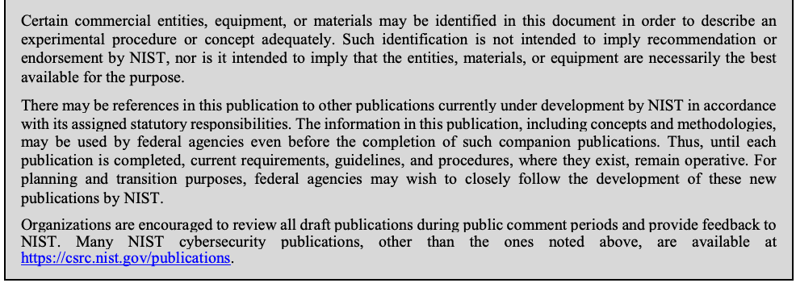
抽出したテキスト（原本と未照合・参考）
Certain commercial entities, equipment, or materials may be identified in this document in order to describe an experimental procedure or concept adequately. Such identification is not intended to imply recommendation or endorsement by NIST, nor is it intended to imply that the entities, materials, or equipment are necessarily the best available for the purpose. There may be references in this publication to other publications currently under development by NIST in accordance with its assigned statutory responsibilities. The information in this publication, including concepts and methodologies, may be used by federal agencies even before the completion of such companion publications. Thus, until each publication is completed, current requirements, guidelines, and procedures, where they exist, remain operative. For planning and transition purposes, federal agencies may wish to closely follow the development of these new publications by NIST. Organizations are encouraged to review all draft publications during public comment periods and provide feedback to NIST. Many NIST cybersecurity publications, other than the ones noted above, are available at https://csrc.nist.gov/publications.抽出したテキストの訳（原本と未照合・参考）
実験手順または概念を十分に説明するため、本書では特定の商業事業体、装置または材料を特定する場合がある。このような特定は、NISTによる推奨または保証を意味するものではなく、また、当該事業体、材料または装置が目的に最も適していることを意味するものでもない。本刊行物では、NISTが割り当てられた法定責任に従って現在策定中の他の刊行物を参照する場合がある。連邦機関は、こうした関連刊行物が完成する前であっても、本刊行物の情報（概念および方法論を含む）を使用できる。したがって、各刊行物が完成するまでは、現行の要件、ガイドラインおよび手順が存在する場合、それらは引き続き有効である。計画および移行のため、連邦機関はNISTによる新刊行物の策定状況を注意深く確認するとよい。組織には、公開コメント期間中にすべての草案を確認し、NISTに意見を提出することを推奨する。上記で言及したものを除く多くのNISTサイバーセキュリティ刊行物は https://csrc.nist.gov/publications で入手できる。Comments on this publication may be submitted to:
本刊行物へのコメントは、次の宛先に提出できる。
National Institute of Standards and Technology Attn: Computer Security Division, Information Technology Laboratory 100 Bureau Drive (Mail Stop 8930) Gaithersburg, MD 20899-8930 Email: keymanagement@nist.gov
米国国立標準技術研究所 宛先：情報技術ラボラトリ コンピュータセキュリティ部門 100 Bureau Drive (Mail Stop 8930) Gaithersburg, MD 20899-8930 電子メール：keymanagement@nist.gov
All comments are subject to release under the Freedom of Information Act (FOIA).
すべてのコメントは、情報自由法（FOIA）に基づく公開の対象となる。
Reports on Computer Systems Technology
コンピュータシステム技術報告書
The Information Technology Laboratory (ITL) at the National Institute of Standards and Technology (NIST) promotes the U.S. economy and public welfare by providing technical leadership for the Nation’s measurement and standards infrastructure. ITL develops tests, test methods, reference data, proof of concept implementations, and technical analyses to advance the development and productive use of information technology. ITL’s responsibilities include the development of management, administrative, technical, and physical standards and guidelines for the cost-effective security and privacy of other than national security-related information in federal information systems. The Special Publication 800-series reports on ITL’s research, guidelines, and outreach efforts in information system security, and its collaborative activities with industry, government, and academic organizations.
米国国立標準技術研究所（NIST）の情報技術研究所（ITL）は、米国の計量・標準インフラに技術的リーダーシップを提供し、米国経済と公共の福祉を促進する。ITLは、情報技術の発展と有効活用を推進するため、試験、試験方法、参照データ、概念実証実装および技術分析を開発する。ITLの責務には、国家安全保障関連以外の連邦情報システムにおける情報の費用対効果に優れたセキュリティとプライバシーのための管理、運用、技術および物理的な標準とガイドラインの策定が含まれる。特別刊行物800シリーズは、情報システムセキュリティに関するITLの研究、ガイドライン、普及活動ならびに産業界、政府、学術機関との協力活動を報告する。
Abstract
概要
NIST Special Publication (SP) 800-57 provides cryptographic key management guidance. It consists of three parts. Part 1 provides general guidance and best practices for the management of cryptographic keying material. Part 2 provides guidance on policy and security planning requirements. Finally, Part 3 provides guidance when using the cryptographic features of current systems. Part 2 (this document) 1) identifies the concepts, functions and elements common to effective systems for the management of symmetric and asymmetric keys; 2) identifies the security planning requirements and documentation necessary for effective institutional key management; 3) describes Key Management Specification requirements; 4) describes cryptographic Key Management Policy documentation that is needed by organizations that use cryptography; and 5) describes Key Management Practice Statement requirements. Appendices provide examples of some key management infrastructures and supplemental documentation and planning materials.
NIST特別刊行物（SP）800-57は、暗号鍵管理に関するガイダンスを提供する。本書は3部構成である。第1部は、暗号鍵素材の管理に関する一般的なガイダンスとベストプラクティスを示す。第2部は、ポリシーおよびセキュリティ計画の要件に関するガイダンスを示す。第3部は、現行システムの暗号機能を使用する際のガイダンスを示す。本書（第2部）は、1) 共通鍵および非対称鍵の効果的な管理システムに共通する概念、機能、要素を特定し、2) 効果的な組織的鍵管理に必要なセキュリティ計画要件および文書を特定し、3) 鍵管理仕様の要件を説明し、4) 暗号を使用する組織に必要な暗号鍵管理ポリシー文書を説明し、5) 鍵管理実務記述書の要件を説明する。付属書では、鍵管理基盤の例ならびに補足的な文書および計画資料を示す。
Keywords
キーワード
authentication; authorization; availability; backup; certification authority; compromise; confidentiality; cryptographic key; cryptographic module; digital signatures; encryption; integrity; inventory management; key information; key management; cryptographic Key Management Policy; key recovery; private key; public key; public key infrastructure; security plan; symmetric key.
認証、認可、可用性、バックアップ、認証局、侵害、機密性、暗号鍵、暗号モジュール、デジタル署名、暗号化、完全性、インベントリ管理、鍵情報、鍵管理、暗号鍵管理ポリシー、鍵回復、秘密鍵、公開鍵、公開鍵基盤、セキュリティ計画、共通鍵。
Acknowledgements
謝辞
The National Institute of Standards and Technology (NIST) gratefully acknowledges and appreciates contributions by Lydia Zieglar from the National Security Agency and Paul Turner from Venafi concerning the many security issues associated with this Recommendation, and by Tim Polk, Bill Burr, and Miles Smid who co-authored the first edition of this publication. NIST also thanks the many contributors from both the public and private sectors whose thoughtful and constructive comments improved the quality and usefulness of this publication.
米国国立標準技術研究所（NIST）は、本勧告に関連する多くのセキュリティ課題について、米国家安全保障局のLydia Zieglar氏およびVenafiのPaul Turner氏から寄せられた貢献、ならびに本刊行物の初版を共同執筆したTim Polk氏、Bill Burr氏、Miles Smid氏の貢献に深く感謝する。また、本刊行物の質と有用性を高める、思慮深く建設的な意見を寄せた官民両部門の多くの貢献者にも謝意を表する。
Table of Contents
目次
1. Introduction_______________________________________________________ 1
1. はじめに 1
1.1 Scope ______________________________________________________________2
1.1 適用範囲 2
1.2 Audience ____________________________________________________________3
1.2 対象読者 3
1.3 Background and Rationale ______________________________________________3
1.3 背景と根拠 3
1.4 Organization _________________________________________________________4
1.4 構成 4
1.5 Glossary of Terms and Acronyms_________________________________________5
1.5 用語集および略語 5
1.5.1 Glossary_____________________________________________________________ 5
1.5.1 用語集 5
1.5.2 Acronyms___________________________________________________________ 19
1.5.2 略語 19
2 Key-Management Concepts_________________________________________ 21
2 鍵管理の概念 21
2.1 Key Establishment____________________________________________________21
2.1 鍵確立 21
2.2 Key-Management Functions ____________________________________________21
2.2 鍵管理機能 21
2.3 Cryptographic Key Management Systems (CKMS) __________________________22
2.3 暗号鍵管理システム（CKMS） 22
2.3.1 Central Oversight Authority _____________________________________________ 23
2.3.1 中央監督機関 23
2.3.2 Key-Processing Facility(ies) ____________________________________________ 23
2.3.2 鍵処理施設 23
2.3.3 Service Agents_______________________________________________________ 25
2.3.3 サービスエージェント 25
2.3.4 Client Nodes ________________________________________________________ 25
2.3.4 クライアントノード 25
2.3.5 Tokens _____________________________________________________________ 26
2.3.5 トークン 26
2.3.6 Public Key Infrastructure Environments ___________________________________ 26
2.3.6 公開鍵基盤環境 26
2.3.7 Symmetric Key Environments ___________________________________________ 26
2.3.7 共通鍵環境 26
2.3.8 Hierarchies and Meshes _______________________________________________ 27
2.3.8 階層構造とメッシュ構造 27
2.3.9 Centralized vs. Decentralized Infrastructures _______________________________ 27
2.3.9 集中型基盤と分散型基盤 27
2.3.10 Available Automated Key Management Schemes and Protocols ________________ 28
2.3.10 利用可能な自動鍵管理方式およびプロトコル 28
2.4 General Design Requirements for CKMS __________________________________29
2.4 CKMSの一般的な設計要件 29
2.5 Trust ______________________________________________________________29
2.5 信頼 29
2.6 Revocation and Suspension ____________________________________________29
2.6 失効と一時停止 29
3 Key Management Planning _________________________________________ 31
3 鍵管理計画 31
3.1 Background _________________________________________________________31
3.1 背景 31
3.1.1 Select SP 800-53 Controls _____________________________________________ 32
3.1.1 SP 800-53管理策の選択 32
3.1.2 IT System Examination ________________________________________________ 32
3.1.2 ITシステムの調査 32
3.2 Key Management Planning _____________________________________________32
3.2 鍵管理計画 32
3.2.1 Key Management Planning Process ______________________________________ 33
3.2.1 鍵管理計画プロセス 33
3.2.2 Key Management Planning Information Requirements________________________ 34
3.2.2 鍵管理計画の情報要件 34
4 Key Management Specification ______________________________________ 39
4 鍵管理仕様 39
4.1 Key Management Specification Content ___________________________________41
4.1 鍵管理仕様の内容 41
4.2 Cryptographic Application ______________________________________________41
4.2 暗号アプリケーション 41
4.3 Communications Environment __________________________________________41
4.3 通信環境 41
4.4 Key Management Metadata Requirements ________________________________42
4.4 鍵管理メタデータ要件 42
4.5 Keying Material Generation ____________________________________________42
4.5 鍵素材の生成 42
4.6 Keying Material Distribution_____________________________________________43
4.6 鍵素材の配布 43
4.7 Key Information Storage_______________________________________________43
4.7 鍵情報の保管 43
4.8 Access Control ______________________________________________________43
4.8 アクセス制御 43
4.9 Accounting and Auditing_______________________________________________44
4.9 アカウンティングと監査 44
4.10 Recovery from Compromise, Corruption, or Loss of Keying Material _____________47
4.10 鍵素材の侵害、破損または喪失からの回復 47
4.11 Key Recovery _______________________________________________________47
4.11 鍵回復 _______________________________________________________47
5 CKMS Security Policy______________________________________________ 48
5 CKMSセキュリティポリシー 48
5.1 Policy Content _______________________________________________________49
5.1 ポリシーの内容 _______________________________________________________49
5.1.1 General Policy Content Requirements ____________________________________ 50
5.1.1 ポリシー内容に関する一般要件 ____________________________________ 50
5.1.2 Security Objectives ___________________________________________________ 51
5.1.2 セキュリティ目標 ___________________________________________________ 51
5.1.3 Organizational Responsibilities __________________________________________ 51
5.1.3 組織の責任 __________________________________________ 51
5.1.4 Sample CKMS SP Format______________________________________________ 53
5.1.4 CKMS SPの書式例______________________________________________ 53
5.2 Policy Enforcement ___________________________________________________57
5.2 ポリシーの施行 ___________________________________________________57
6 CKMS Practices Statement (CKMS PS) _______________________________ 58
6 CKMS実務記述書（CKMS PS） 58
6.1 Alternative Practice Statement Formats ___________________________________58
6.1 実施規程の代替書式 ___________________________________58
6.1.1 Stand-Alone Practice Statement _________________________________________ 58
6.1.1 独立型の実施規程 _________________________________________ 58
6.1.2 Certification Practices Statement_________________________________________ 59
6.1.2 認証実施規程_________________________________________ 59
6.2 Common CKMS PS Content____________________________________________59
6.2 CKMS PSの共通内容____________________________________________59
6.2.1 Association of CKMS PS with the CKMS Security Policy ______________________ 59
6.2.1 CKMS PSとCKMSセキュリティポリシーとの関連付け ______________________ 59
6.2.2 Identification of Responsible Entities and Contact Information __________________ 59
6.2.2 責任主体の特定と連絡先情報 __________________ 59
6.2.3 Key Generation and/or Certificate Issuance ________________________________ 59
6.2.3 鍵生成および／または証明書発行 ________________________________ 59
6.2.4 Key Agreement ______________________________________________________ 60
6.2.4 鍵合意 ______________________________________________________ 60
6.2.5 Agreements Between Key Processing Centers______________________________ 60
6.2.5 鍵処理センター間の取決め______________________________ 60
6.2.6 Key Establishment, Suspension and Revocation Structures ___________________ 60
6.2.6 鍵の確立、一時停止および失効の体制 ___________________ 60
6.2.7 Establishment of Cryptoperiods__________________________________________ 61
6.2.7 暗号期間の設定__________________________________________ 61
6.2.8 Tracking of and Accounting for Keying Material _____________________________ 61
6.2.8 鍵材料の追跡と管理記録_____________________________ 61
6.2.9 Protection of Key Information ___________________________________________ 62
6.2.9 鍵情報の保護 ___________________________________________ 62
6.2.10 Suspension and Revocation of Keying Material _____________________________ 62
6.2.10 鍵材料の一時停止と失効 _____________________________ 62
6.2.11 Auditing ____________________________________________________________ 63
6.2.11 監査 ____________________________________________________________ 63
6.2.12 Key Destruction ______________________________________________________ 63
6.2.12 鍵の破棄 ______________________________________________________ 63
6.2.13 Key Backup, Archiving and Recovery _____________________________________ 63
6.2.13 鍵のバックアップ、アーカイブおよび回復 _____________________________________ 63
6.2.14 Compromise Recovery ________________________________________________ 64
6.2.14 危殆化からの回復 ________________________________________________ 64
6.2.15 Policy Violation Consequences __________________________________________ 64
6.2.15 ポリシー違反の帰結 __________________________________________ 64
6.2.16 Documentation_______________________________________________________ 64
6.2.16 文書化_______________________________________________________ 64
Appendix A—CKMS Examples _________________________________________ 65
付録A—CKMSの例 _________________________________________ 65
A.1 Public Key Infrastructure (PKI) __________________________________________65
A.1 公開鍵基盤（PKI） __________________________________________65
A.1.1 Central Oversight Authority _____________________________________________ 65
A.1.1 中央監督機関 _____________________________________________ 65
A.1.2 Certification Authority (CA) _____________________________________________ 66
A.1.2 認証局（CA） _____________________________________________ 66
A.1.3 Registration Authority (RA) _____________________________________________ 66
A.1.3 登録局（RA） _____________________________________________ 66
A.1.4 Subscriber's Client Node and Token ______________________________________ 66
A.1.4 加入者のクライアントノードとトークン ______________________________________ 66
A.1.5 PKI Hierarchical Structures and Meshes___________________________________ 66
A.1.5 PKIの階層構造とメッシュ構造___________________________________ 66
A.2 Key Centers_________________________________________________________67
A.2 鍵センター_________________________________________________________67
A.2.1 Key Distribution Center (KDC) Architecture ________________________________ 67
A.2.1 鍵配布センター（KDC）のアーキテクチャ ________________________________ 67
A.2.2 Key Translation Center (KTC) Architecture_________________________________ 68
A.2.2 鍵変換センター（KTC）のアーキテクチャ_________________________________ 68
Appendix B—Key Management Inserts for Security Plan Templates __________ 70
付録B—セキュリティ計画テンプレートに挿入する鍵管理の記述 __________ 70
Appendix C—Key Management Specification Checklist for Cryptographic Product Development____________________________________________ 75
付録C—暗号製品開発のための鍵管理仕様チェックリスト____________________________________________ 75
Appendix D—References _____________________________________________ 76
付録D—参考文献 _____________________________________________ 76
Appendix E—Revisions _______________________________________________ 84
付録E—改訂履歴 _______________________________________________ 84
1. Introduction
1. はじめに
Cryptographic mechanisms are often used to protect the integrity and confidentiality of data that is sensitive, has a high value, or is vulnerable to unauthorized disclosure or undetected modification during transmission or while in storage. A cryptographic mechanism relies upon two basic components: an algorithm (or cryptographic methodology) and a variable cryptographic key. The algorithm and key are used together to apply cryptographic protection to data (e.g., to encrypt the data or to generate a digital signature) and to remove or check the protection (e.g., to decrypt the encrypted data or to verify a digital signature). This is analogous to a physical safe that can be opened only with the correct combination.
暗号メカニズムは、機微である、価値が高い、あるいは伝送中や保存中に認可されていない開示や検知されない改変を受けやすいデータの完全性と機密性を保護するためによく使用される。暗号メカニズムは、アルゴリズム（または暗号方式）と可変の暗号鍵という2つの基本構成要素に依拠する。アルゴリズムと鍵は組み合わせて使用され、データに暗号による保護を適用し（例：データを暗号化する、デジタル署名を生成する）、その保護を除去または確認する（例：暗号化されたデータを復号する、デジタル署名を検証する）。これは、正しい組合せ番号でのみ開けられる物理的な金庫に似ている。
Two types of cryptographic algorithms are in common use today: symmetric key algorithms and asymmetric key algorithms. Symmetric key algorithms (sometimes called secret key algorithms) use a single key to both apply cryptographic protection and to remove or check the protection. Asymmetric key algorithms (often called public key algorithms) use a pair of keys (i.e., a key pair): a public key and a private key that are mathematically related to each other. In the case of symmetric key algorithms, the single key must be kept secret from everyone and everything not specifically authorized to access the information being protected. In asymmetric key cryptography, only one key in the key pair, the private key, must be kept secret; the other key can be made public. Symmetric key cryptography is most often used to protect the confidentiality of information or to authenticate the integrity of that information. Asymmetric key cryptography is commonly used to protect the integrity and authenticity of information and to establish symmetric keys.
今日一般に使用されている暗号アルゴリズムには、対称鍵アルゴリズムと非対称鍵アルゴリズムの2種類がある。対称鍵アルゴリズム（秘密鍵アルゴリズムと呼ばれることもある）は、暗号による保護の適用と、その保護の除去または確認の両方に単一の鍵を使用する。非対称鍵アルゴリズム（公開鍵アルゴリズムと呼ばれることが多い）は、互いに数学的に関連する公開鍵と秘密鍵からなる鍵のペア（すなわち鍵ペア）を使用する。対称鍵アルゴリズムの場合、単一の鍵は、保護対象の情報へのアクセスを明示的に認可されていないあらゆる者およびあらゆるものに対して秘密にしておかなければならない。非対称鍵暗号では、鍵ペアのうち一方の鍵である秘密鍵だけを秘密にしておけばよく、もう一方の鍵は公開してよい。対称鍵暗号は、情報の機密性の保護や、その情報の完全性の認証に最もよく使用される。非対称鍵暗号は、情報の完全性と真正性の保護や、対称鍵の確立に一般に使用される。
Given differences in the nature of symmetric and asymmetric key cryptography and of the requirements of different security applications of cryptography, specific key management requirements and methods necessarily vary from application to application. Regardless of the algorithm or application, if cryptography is to deliver confidentiality, integrity, or authenticity, users and systems need to have assurance that the key is authentic, that it belongs to the entity with whom or which it is asserted to be associated, and that it has not been accessed by an unauthorized third party. SP 800-57, Recommendation for Key Management (hereafter referred to as SP 800-57 or the Recommendation), provides guidelines and best practices for achieving this necessary assurance.
対称鍵暗号と非対称鍵暗号の性質の違い、および暗号のさまざまなセキュリティ用途の要件の違いから、具体的な鍵管理の要件と方法は必然的にアプリケーションごとに異なる。アルゴリズムやアプリケーションにかかわらず、暗号によって機密性、完全性、または真正性を実現するためには、ユーザとシステムは、鍵が真正であること、鍵が関連付けられていると主張されるエンティティに属していること、および鍵が認可されていない第三者にアクセスされていないことの保証を得る必要がある。SP 800-57, Recommendation for Key Management（以下、SP 800-57 または本勧告という）は、この必要な保証を達成するためのガイドラインとベストプラクティスを提供する。
SP 800-57 consists of three parts. This publication is Part 2 of the Recommendation (i.e., SP 800-57 Part 2 – Best Practices for Key Management Organizations) and is intended primarily to address the needs of U.S. government system owners and managers who are setting up or acquiring cryptographic key management capabilities. Parts 1 and 3 of SP 800-57 focus on cryptographic key management mechanisms. SP 800-57 Part 1, General, (hereafter referred to as Part 1) contains basic key management guidance intended to advise users, developers and system managers; and SP 800-57 Part 3, Application-Specific Key Management Guidance, (hereafter referred to as Part 3) is intended to address specific key management issues associated with currently available implementations.
SP 800-57 は3つの部で構成される。本書は本勧告の Part 2（すなわち SP 800-57 Part 2 – Best Practices for Key Management Organizations）であり、主として、暗号鍵管理機能を構築または調達する米国政府のシステム所有者と管理者のニーズに対応することを意図している。SP 800-57 の Part 1 と Part 3 は、暗号鍵管理メカニズムに焦点を当てている。SP 800-57 Part 1, General（以下、Part 1 という）は、ユーザ、開発者、およびシステム管理者に助言することを意図した基本的な鍵管理ガイダンスを含む。SP 800-57 Part 3, Application-Specific Key Management Guidance（以下、Part 3 という）は、現在利用可能な実装に関連する具体的な鍵管理上の問題に対処することを意図している。
SP 800-57 has been developed by and for the U.S. Federal Government. Non-governmental organizations may voluntarily choose to follow the practices provided herein.
SP 800-57 は、米国連邦政府によって、米国連邦政府のために作成された。非政府組織は、本書に示す実践に任意で従うことを選択できる。
1.1 Scope
1.1 適用範囲
This publication (hereafter referred to as Part 2) 1) identifies concepts, functions, and elements that should be common to cryptographic key management systems (CKMS); 2) identifies the security planning requirements and documentation necessary to effective organizational key management; and 3) describes cryptographic Key Management Policy and practice documentation and Key Management Specifications that are needed by organizations that use cryptography. Although there are distinctions between symmetric and asymmetric key management requirements, there is an extensive set of management principles and organizational requirements that are common to both. This publication presents common key management requirements and identifies distinct symmetric algorithm-specific and asymmetric algorithm-specific requirements, when appropriate. This publication also makes recommendations to enterprise organizations for the management of cryptographic keys, the management of metadata associated with those keys (e.g., identifying information associated with the owners of keys, the lengths of keys, and acceptable uses for those keys), and the maintenance of associations between metadata and keys.
本書（以下、Part 2 という）は、1) 暗号鍵管理システム（CKMS）に共通すべき概念、機能、および要素を特定し、2) 組織における効果的な鍵管理に必要なセキュリティ計画の要件と文書を特定し、3) 暗号を使用する組織が必要とする暗号の鍵管理ポリシーと実践の文書、および鍵管理仕様について記述する。対称鍵と非対称鍵の管理要件には違いがあるが、両者に共通する管理原則と組織要件は広範に存在する。本書は、共通の鍵管理要件を示すとともに、必要に応じて対称アルゴリズム固有の要件と非対称アルゴリズム固有の要件を区別して特定する。本書はまた、暗号鍵の管理、それらの鍵に関連するメタデータ（例：鍵の所有者に関連する識別情報、鍵の長さ、鍵の許容される用途）の管理、およびメタデータと鍵の関連付けの維持について、企業組織に対する勧告を行う。
This publication is intended to acquaint system owners and managers of organizations implementing and using cryptography with the requirements that must be satisfied when cryptography is implemented in their organizations. It does not address specific key management protocols, implementations, or the operation of key management components or systems. It focuses on principles and requirements that will need to be met by the key management protocols, components, systems and services used by organizations. Key management protocols are documented and coordinated rules for exchanging keys and metadata (e.g., in X.509 certificates). Key management components include the software module applications and hardware security modules (HSMs) that are used to generate, establish, distribute, store, account for, suspend, revoke, or destroy cryptographic keys and metadata.
本書は、暗号を実装し使用する組織のシステム所有者と管理者に、組織内で暗号を実装する際に満たさなければならない要件を理解してもらうことを意図している。本書は、具体的な鍵管理プロトコル、実装、あるいは鍵管理コンポーネントやシステムの運用は扱わない。本書は、組織が使用する鍵管理プロトコル、コンポーネント、システム、およびサービスが満たす必要のある原則と要件に焦点を当てる。鍵管理プロトコルとは、鍵とメタデータ（例：X.509 証明書に含まれるもの）を交換するための、文書化され調整された規則である。鍵管理コンポーネントには、暗号鍵とメタデータの生成、確立、配布、保管、記録管理、一時停止、失効、または破棄に使用されるソフトウェアモジュールのアプリケーションとハードウェアセキュリティモジュール（HSM）が含まれる。
Cryptographic key management systems (CKMS) are composed of individual components and are used to carry out sets of key management functions or services. Key management services include the generation, destruction, revocation, distribution, and recovery of keys. Some CKMS services (e.g., certificate authority (CA)) may be provided by a third party under contract or Service Level Agreement.
暗号鍵管理システム（CKMS）は、個々のコンポーネントで構成され、一連の鍵管理機能またはサービスを実行するために使用される。鍵管理サービスには、鍵の生成、破棄、失効、配布、および回復が含まれる。一部の CKMS サービス（例：認証局（CA））は、契約またはサービスレベル合意に基づいて第三者が提供することもある。
This document identifies applicable laws and directives concerning security planning and management and suggests approaches to satisfying those laws and directives with a view to minimizing the impact of the management overhead on organizational resources and efficiency. Part 2 also acknowledges that planning and documentation requirements associated with small-scale or single-system organizations will not need to be as elaborate as those required for large and diverse government agencies that are supported by multiple information technology systems. However, any organization that employs cryptography to provide security services needs to have key management policy, practices and planning documentation.
本書は、セキュリティの計画と管理に関する適用法令と指令を特定し、管理上のオーバーヘッドが組織のリソースと効率に与える影響を最小限に抑えることを念頭に、それらの法令と指令を満たすための手法を提案する。Part 2 はまた、小規模な組織や単一システムの組織に関連する計画と文書の要件は、複数の情報技術システムに支えられた大規模で多様な政府機関に求められるものほど精緻である必要はないことも認めている。しかし、セキュリティサービスを提供するために暗号を使用する組織はいずれも、鍵管理のポリシー、実践、および計画の文書を備える必要がある。
Part 2 recognizes that some key management functions, such as the provisioning and revocation of keys, are sufficiently labor-intensive that they act as an impediment to the adoption of cryptographic mechanisms – particularly in large network operations. Nevertheless, responsible key management is essential to the effective use of cryptographic mechanisms for protecting information technology systems against attacks that threaten the confidentiality of the information processed, stored, and communicated; the integrity of information and systems operation; and the timely availability of critical information and services. Improved tools for the automation of many key management services are needed to improve the security, performance, and usability of CKMSs, but the characteristics identified in SP 800-57 as essential to secure and effective key management are valid and independent of performance and usability concerns.
Part 2 は、鍵のプロビジョニングや失効などの一部の鍵管理機能が、とりわけ大規模なネットワーク運用において、暗号メカニズムの導入の妨げとなるほど労力を要することを認識している。それでも、処理、保存、通信される情報の機密性、情報とシステム運用の完全性、ならびに重要な情報とサービスの適時の可用性を脅かす攻撃から情報技術システムを保護するために暗号メカニズムを効果的に使用するうえで、責任ある鍵管理は不可欠である。CKMS のセキュリティ、性能、および使いやすさを向上させるためには、多くの鍵管理サービスを自動化する改良されたツールが必要である。しかし、SP 800-57 で安全かつ効果的な鍵管理に不可欠とされる特性は、性能や使いやすさの問題とは無関係に有効である。
1.2 Audience
1.2 対象読者
The primary audience for Part 2 is the set of federal government system owners and managers who are setting up or acquiring cryptographic key management capabilities. However, consistent with the Cybersecurity Enhancement Act of 2014 (PL 113-274), this Recommendation is also intended to provide cybersecurity guidelines to the private sector in addition to the government-focused guidance consistent with Office of Management and Budget (OMB) Circular A-130 (OMB 1301). Since guidelines and best practices for the private sector are strictly voluntary, the requirement terms (i.e., the should/shall language) used for some recommendations and requirements do not apply outside the federal government. For federal government organizations, the terms should and shall have the following meaning in this document:
第2部の主な読者は、暗号鍵管理機能を構築または調達しようとしている連邦政府のシステム所有者および管理者である。ただし、Cybersecurity Enhancement Act of 2014（PL 113-274）に沿って、本推奨は、Office of Management and Budget（OMB）Circular A-130（OMB 1301）に沿った政府向けのガイダンスに加えて、民間部門にもサイバーセキュリティのガイドラインを提供することを意図している。民間部門に対するガイドラインおよびベストプラクティスはあくまで任意であるため、一部の推奨事項および要件に用いられる要件用語（すなわち should／shall の表現）は連邦政府の外部には適用されない。連邦政府組織にとって、本書における should および shall という用語は次の意味をもつ。
1.shall: This term is used to indicate a requirement for U. S. Federal government organizations based on a Federal Information Processing Standard (FIPS) or NIST Recommendation. Note that shall may be coupled with not to become shall not.
1.shall：連邦情報処理標準（FIPS）またはNIST勧告に基づく、米国連邦政府組織の要件を示す用語である。shallにnotを付してshall notとする場合がある。 [shall; may; shall not]
2.should: This term is used to indicate an important recommendation. Ignoring the recommendation could result in undesirable results. Note that should may be coupled with not to become should not.
2.should：重要な推奨事項を示す用語である。この推奨事項を無視すると、望ましくない結果を招く可能性がある。shouldにnotを付してshould notとする場合がある。
1.3 Background and Rationale
1.3 背景と根拠
As stated above, although there are significant differences in key management requirements for symmetric and asymmetric key management applications, there are principles common to both. The proper handling of and accounting for keys is necessary for cryptographic functions to be effective. For example, regardless of the cryptographic method employed, some secret or private keys will need to be made available to some set of the entities that use cryptography. Trust in the source of these keys is essential to any confidence in the cryptographic mechanisms being employed. Access to the private or secret keys by entities that are not intended to use them invalidates any assumptions regarding the confidentiality or integrity of information believed to be protected by the associated cryptographic mechanisms. Although organizations may generate keys for their members and distribute keys to their members, the only way to completely protect information being stored under a cryptographic key is for the entity(ies) responsible for storing the information to control the generation, distribution, and key storage processes.
前述のとおり、対称鍵と非対称鍵の鍵管理アプリケーションでは鍵管理要件に大きな違いがあるが、両者に共通する原則もある。暗号機能が効果を発揮するためには、鍵の適切な取扱いと記録管理が必要である。たとえば、使用する暗号方式にかかわらず、一部の秘密鍵または私有鍵は、暗号を使用する一定のエンティティ群に提供する必要がある。これらの鍵の発信元に対する信頼は、使用する暗号メカニズムを信頼するための前提として不可欠である。秘密鍵または私有鍵の使用を想定されていないエンティティがそれらの鍵にアクセスすると、関連する暗号メカニズムによって保護されているはずの情報の機密性や完全性に関するあらゆる前提が無効になる。組織がメンバーのために鍵を生成し、メンバーに配布することはありうるが、暗号鍵の下で保存されている情報を完全に保護する唯一の方法は、その情報の保存に責任を負うエンティティが、鍵の生成、配布、および保管のプロセスを管理することである。
An example of the fundamental differences between the protection requirements for symmetric keys and those for asymmetric keys is that, in the symmetric case, each party that is authorized to use a (secret) key must protect that key in order to avoid all of the parties who also share the key from losing the cryptographic protection afforded under that key. In the asymmetric case, only the party that owns and is authorized to use the private key must protect the confidentiality of that key; the other key of the key pair − the public key − may be known by anyone, but its ownership must be verified in a trusted manner. However, it is essential in both cases to keep track of cryptographic keys in use across an enterprise. Information regarding the compromise of a secret or private key or regarding its revocation for any reason must be available to all parties reliant on the security services that use the key.
対称鍵と非対称鍵の保護要件の根本的な違いの一例として、対称鍵の場合、（秘密の）鍵の使用を認可された各当事者は、その鍵を共有するすべての当事者がその鍵による暗号保護を失うことのないよう、その鍵を保護しなければならない。非対称鍵の場合、秘密鍵を所有しその使用を認可された当事者だけがその鍵の機密性を保護すればよい。鍵ペアのもう一方の鍵である公開鍵は誰に知られてもよいが、その所有者は信頼できる方法で検証されなければならない。ただし、いずれの場合も、企業全体で使用中の暗号鍵を把握しておくことは不可欠である。秘密鍵（共通鍵または私有鍵）の危殆化や、何らかの理由によるその失効に関する情報は、その鍵を使用するセキュリティサービスに依拠するすべての当事者が入手できなければならない。
At the device or software application level, keys need to be provided, changed, and protected in a manner that enables cryptographic operation and preserves the integrity of cryptographic processes and their dependent services. FIPS 140 provides guidance on implementing cryptography into a cryptographic module. Other government publications that specify technical key management requirements for specific applications include:
デバイスやソフトウェアアプリケーションのレベルでは、鍵は、暗号処理を可能にし、暗号プロセスとそれに依存するサービスの完全性を維持する形で、提供、変更、保護される必要がある。FIPS 140 は、暗号モジュールへの暗号の実装に関するガイダンスを提供している。特定のアプリケーションにおける技術的な鍵管理要件を規定するその他の政府刊行物には、以下がある。
•a) SP 800-56A, Recommendation for Pair-Wise Key Establishment Schemes Using Discrete Logarithm Cryptography;
•a) SP 800-56A, Recommendation for Pair-Wise Key Establishment Schemes Using Discrete Logarithm Cryptography
•b) SP 800-56B, Recommendation for Pair-Wise Key Establishment Schemes Using Integer Factorization Cryptography;
•b) SP 800-56B, Recommendation for Pair-Wise Key Establishment Schemes Using Integer Factorization Cryptography
•c) SP 800-56C, Recommendation for Key Derivation Methods in Key-Establishment Schemes;
•c) SP 800-56C, Recommendation for Key Derivation Methods in Key-Establishment Schemes
•d) SP 800-71, Recommendation for Key Establishment Using Symmetric Block Ciphers;
•d) SP 800-71, Recommendation for Key Establishment Using Symmetric Block Ciphers
•e) SP 800-108, Recommendation for Key Derivation Using Pseudorandom Functions;
•e) SP 800-108, Recommendation for Key Derivation Using Pseudorandom Functions
•f) SP 800-131A, Transitioning the Use of Cryptographic Algorithms and Key Lengths;
•f) SP 800-131A, Transitioning the Use of Cryptographic Algorithms and Key Lengths
•g) SP 800-132, Recommendation for Password-Based Key Derivation: Part 1: Storage Applications;
•g) SP 800-132, Recommendation for Password-Based Key Derivation: Part 1: Storage Applications
•h) SP 800-133, Recommendation for Cryptographic Key Generation; and
•h) SP 800-133, Recommendation for Cryptographic Key Generation
•i) SP 800-135, Recommendation for Existing Application-Specific Key Derivation Functions.
•i) SP 800-135, Recommendation for Existing Application-Specific Key Derivation Functions
Technical mechanisms alone are not sufficient to ensure the protection of sensitive information. Part 2 specifies key management planning requirements for the development, acquisition, and implementation of cryptographic product and services. In federal government systems, technical mechanisms are required to be used in combination with a set of procedures that implement a clearly understood and articulated protection policy.
技術的メカニズムだけでは、機微な情報の保護を確保するには十分でない。Part 2 は、暗号製品およびサービスの開発、調達、および実装に関する鍵管理計画の要件を規定する。連邦政府のシステムでは、技術的メカニズムは、明確に理解され明文化された保護ポリシーを実装する一連の手順と組み合わせて使用することが求められる。
In order for key management practices and procedures to be effectively employed, support for these practices and procedures at the highest levels of the organization is a practical necessity. The executive level of the organization needs to establish policies that identify executive-level key management roles and responsibilities for the organization. The key management policies need to support the establishment of, or access to, the services of a key management infrastructure and the employment and enforcement of key management practices and procedures.
鍵管理の実践と手順を効果的に運用するためには、組織の最上位レベルがこれらの実践と手順を支援することが実務上必要である。組織の経営層は、組織における経営層レベルの鍵管理の役割と責任を定めるポリシーを確立する必要がある。鍵管理ポリシーは、鍵管理インフラストラクチャのサービスの確立またはそれへのアクセス、ならびに鍵管理の実践と手順の運用と徹底を支援する必要がある。
1.4 Organization
1.4 構成
Part 2 of the Recommendation for Key Management is organized as follows:
鍵管理に関する勧告の第2部は、次のように構成されている。
•Section 2 introduces key management concepts that must be addressed or understood by organizations that use cryptography to protect information so that they can create key management policies, practice statements and planning documents.
•第2節では、暗号を用いて情報を保護する組織が、鍵管理ポリシー、実務記述書および計画文書を作成できるよう、対応または理解すべき鍵管理の概念を紹介する。
•Section 3 provides guidance on planning for the use of cryptography, including the rationale for key management planning.
•第3節では、鍵管理計画の根拠を含め、暗号利用の計画に関するガイダンスを示す。
•Section 4 provides information that supports the development of Key Management Specifications by describing the key management components that may be required to operate a cryptographic device or application.
•第4節では、暗号装置またはアプリケーションの運用に必要となる鍵管理コンポーネントを説明し、鍵管理仕様の策定に役立つ情報を提供する。
•Section 5 and Section 6 provide guidance for the development of organizational cryptographic Key Management Policy statements and Key Management Practice Statements. The policy and practice documentation may take the form of separate planning and implementation documents or may be included in an organization's existing information security policies and procedures.3
•第5節および第6節では、組織の暗号鍵管理ポリシー記述書および鍵管理実務記述書の策定に関するガイダンスを示す。ポリシー文書と実務文書は、計画文書と実装文書を別々に作成する形式でも、組織の既存の情報セキュリティポリシーおよび手順に含める形式でもよい。3
•Appendix A provides cryptographic key management system (CKMS) examples.
•付属書Aでは、暗号鍵管理システム（CKMS）の例を示す。
•Appendix B provides key management inserts for security plan templates.
•付属書Bでは、セキュリティ計画テンプレート用の鍵管理挿入項目を示す。
•Appendix C provides a Key Management Specification checklist for cryptographic product development.
•付属書Cでは、暗号製品開発用の鍵管理仕様チェックリストを示す。
•Appendix D provides a table of references.
•付属書Dでは、参考文献の一覧を示す。
•Appendix E identifies changes from the original SP 800-57 Part 2 document.
•付属書Eでは、SP 800-57 第2部の初版からの変更点を示す。
1.5 Glossary of Terms and Acronyms
1.5 用語集および略語
The definitions provided below are consistent with Part 1. Note that the same terms may be defined differently in other documents. Also note that summaries of some of the glossary definitions are used as footnotes throughout the document to assist the reader; the complete definition is provided in Section 1.5.1.
以下に示す定義は第1部と整合している。同じ用語でも、他の文書では異なる定義が用いられる場合がある。また、読者の助けとなるよう、本文中の脚注では用語集の定義の要約を用いている場合がある。完全な定義は1.5.1に示す。
1.5.1 Glossary
1.5.1 用語集
Access control
アクセス制御
As used in this Recommendation, the set of procedures and/or processes that only allow access to information in accordance with pre-established policies and rules.
本勧告でいう、事前に定められたポリシーおよび規則に従ってのみ情報へのアクセスを認める一連の手順および／またはプロセス。
Accountability
説明責任
A property that ensures that the actions of an entity may be traced uniquely to that entity.
主体の行動をその主体に一意に追跡可能にする性質。
Approved
承認済み
FIPS-Approved and/or NIST-recommended. An algorithm or technique that is either 1) specified in a FIPS or NIST Recommendation, or 2) specified elsewhere and adopted by reference in a FIPS or NIST Recommendation.
FIPSで承認された、および／またはNISTが推奨するもの。アルゴリズムまたは技法であって、1) FIPSまたはNIST勧告に規定されているもの、または2) 他で規定され、FIPSまたはNIST勧告が参照により採用したもの。
Archive — See Key management archive.
Archive — 鍵管理アーカイブを参照。
Authentication — A process that provides assurance of the source and integrity of information in communications sessions, messages, documents or stored data or that provides assurance of the identity of an entity interacting with a system.
Authentication — 通信セッション、メッセージ、文書もしくは保存データにおける情報の発信元と完全性について保証を与えるプロセス、またはシステムとやり取りするエンティティの識別情報について保証を与えるプロセス。
Authorization — 1. Access privileges granted to an entity; conveys an “official” sanction to perform a cryptographic function or other sensitive activity.
Authorization — 1. エンティティに付与されるアクセス権限。暗号機能またはその他の機微な活動を実行するための「公式の」承認を与えるもの。
2.The process of verifying that a requested action or service is approved for a specific entity.
2.要求された動作またはサービスが特定のエンティティに対して承認されていることを検証するプロセス。
Availability — Timely, reliable access to information by authorized entities.
Availability — 認可されたエンティティによる、情報への適時かつ確実なアクセス。
Backup — A copy of key information to facilitate recovery during the cryptoperiod of the key, if necessary.
Backup — 必要な場合に鍵の暗号期間中の回復を容易にするための、鍵情報の複製。
Central Oversight Authority — The cryptographic key management system (CKMS) entity that provides overall CKMS data synchronization and system security oversight for an organization or set of organizations.
Central Oversight Authority — 組織または組織群に対して、CKMS全体のデータ同期とシステムセキュリティの監督を提供する暗号鍵管理システム（CKMS）のエンティティ。
Certificate — See Public key certificate.
Certificate — 公開鍵証明書を参照。
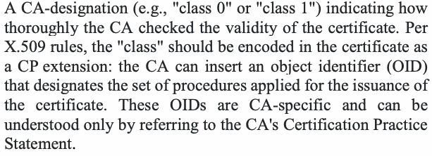
抽出したテキスト（原本と未照合・参考）
A CA-designation (e.g., "class 0" or "class 1") indicating how thoroughly the CA checked the validity of the certificate. Per X.509 rules, the "class" should be encoded in the certificate as a CP extension: the CA can insert an object identifier (OID) that designates the set of procedures applied for the issuance of the certificate. These OIDs are CA-specific and can be understood only by referring to the CA's Certification Practice Statement.抽出したテキストの訳（原本と未照合・参考）
CAが証明書の有効性をどの程度詳細に確認したかを示すCA指定（例：「クラス0」または「クラス1」）。X.509規則では、「クラス」はCP拡張として証明書に符号化するべきである。CAは証明書発行に適用した手順群を示すオブジェクト識別子（OID）を挿入できる。これらのOIDはCA固有であり、CAの認証実務記述書を参照しなければ理解できない。Certificate class — A CA-designation (e.g., "class 0" or "class 1") indicating how thoroughly the CA checked the validity of the certificate. Per X.509 rules, the "class" should be encoded in the certificate as a CP extension: the CA can insert an object identifier (OID) that designates the set of procedures applied for the issuance of the certificate. These OIDs are CA-specific and can be understood only by referring to the CA's Certification Practice Statement.
Certificate class — CAが証明書の有効性をどの程度入念に確認したかを示す、CAによる指定（例：「class 0」や「class 1」）。X.509の規則では、「class」はCP拡張として証明書に符号化すべきである。CAは、証明書の発行に適用した手順の集合を示すオブジェクト識別子（OID）を挿入できる。これらのOIDはCAごとに固有であり、そのCAの認証実施規程を参照することによってのみ理解できる。
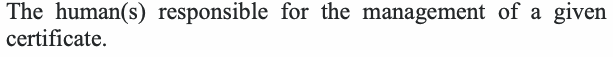
抽出したテキスト（原本と未照合・参考）
The human(s) responsible for the management of a given certificate.抽出したテキストの訳（原本と未照合・参考）
特定の証明書の管理に責任を負う人。Certificate owner — The human(s) responsible for the management of a given certificate.
Certificate owner — 特定の証明書の管理に責任を負う人（複数の場合もある）。
Certificate Policy — A named set of rules that indicate the applicability of a certificate to a particular community and/or class of applications with common security requirements.
Certificate Policy — 共通のセキュリティ要件をもつ特定のコミュニティおよび／またはアプリケーションの種別に対する、証明書の適用可能性を示す、名前の付いた規則の集合。
Certificate revocation list (CRL) — A list of revoked public key certificates by certificate number that includes the revocation date and (possibly) the reason for their revocation.
Certificate revocation list (CRL) — 失効した公開鍵証明書を証明書番号で列挙したリストで、失効日と（場合によっては）失効理由を含む。
Certification Authority (CA) — The entity in a public key infrastructure (PKI) that is responsible for issuing certificates and exacting compliance to a PKI policy.
Certification Authority (CA) — 公開鍵基盤（PKI）において、証明書を発行し、PKIポリシーへの準拠を求める責任を負うエンティティ。
Certification path — An ordered list of certificates (containing an end-entity subscriber certificate and zero or more intermediate certificates) that enables the receiver to verify that the sender and all intermediate certificates are trustworthy. Each certificate in the path must have been signed by the private key corresponding to the public key contained in the certificate that precedes it in the path, and the first certificate in the path must have been issued by a Trust anchor.
Certification path — 証明書の順序付きリスト（エンドエンティティの加入者証明書と0個以上の中間証明書を含む）で、受信者が送信者とすべての中間証明書が信頼できることを検証できるようにするもの。パス内の各証明書は、パス内で直前にある証明書に含まれる公開鍵に対応する秘密鍵で署名されていなければならず、パス内の最初の証明書はトラストアンカーによって発行されていなければならない。
Certification Practice Statement — A statement of the practices that a Certification Authority employs in issuing and managing public key certificates.
Certification Practice Statement — 認証局が公開鍵証明書の発行と管理において用いる実務を記述した規程。
Ciphertext — Data in its encrypted form.
Ciphertext — 暗号化された形式のデータ。
Client node — An interface for human users, devices, applications and processes to access CKMS functions, including the requesting of certificates and keys.
Client node — 人間の利用者、デバイス、アプリケーションおよびプロセスが、証明書や鍵の要求を含むCKMS機能にアクセスするためのインタフェース。
CKMS component — Any hardware, software, or firmware that is used to implement a CKMS. In this Recommendation, the major CKMS components discussed are the Central Oversight Authority, Key Processing Facilities, Service Agents, Client Nodes and Tokens.
CKMS component — CKMSの実装に用いられるあらゆるハードウェア、ソフトウェアまたはファームウェア。本推奨で取り上げる主なCKMSコンポーネントは、中央監督機関、鍵処理施設、サービスエージェント、クライアントノードおよびトークンである。
CKMS hierarchy — A system of key processing facilities whereby a key center or certification authority may delegate the authority to issue keys or certificates to subordinate centers or authorities that can, in turn, delegate that authority to their subordinates.
CKMS hierarchy — 鍵センターまたは認証局が、鍵または証明書を発行する権限を下位のセンターまたは機関に委任でき、それらがさらにその権限を自らの下位に委任できる、鍵処理施設の体系。
Communicating group — A set of communicating entities that employ cryptographic services and need cryptographic keying relationships to enable cryptographically protected communications.
Communicating group — 暗号サービスを利用し、暗号で保護された通信を可能にするために暗号鍵関係を必要とする、通信エンティティの集合。
Compliance audit — A comprehensive review of an organization's adherence to governing documents such as whether a Certification Practice Statement satisfies the requirements of a Certificate Policy and whether an organization adheres to its Certification Practice Statement.
Compliance audit — 組織が統制文書を遵守しているかについての包括的なレビュー。たとえば、認証実施規程が証明書ポリシーの要件を満たしているか、組織が自らの認証実施規程を遵守しているかを確認する。
Compromise — The unauthorized disclosure, modification, substitution, or use of sensitive information (e.g., a secret key, private key or secret metadata).
Compromise — 機微な情報（例：秘密鍵、プライベート鍵、秘密のメタデータ）の、認可されていない開示、改変、置換または使用。
Compromised key list (CKL) — A list of named keys that are known or suspected of being compromised.
Compromised key list (CKL) — 危殆化したことが判明している、またはその疑いのある、名前付きの鍵のリスト。
Confidentiality — The property that sensitive information is not disclosed to unauthorized entities.
Confidentiality — 機微な情報が認可されていないエンティティに開示されないという特性。
Cross-certification — A process whereby two CAs establish a trust relationship between them by each CA signing a certificate containing the public key of the other CA.
Cross-certification — 2つのCAが、それぞれ相手方CAの公開鍵を含む証明書に署名することにより、両者の間に信頼関係を確立するプロセス。
Cryptanalysis — 1. Operations performed in defeating cryptographic protection without an initial knowledge of the key employed in providing the protection. 2. The study of mathematical techniques for attempting to defeat cryptographic techniques and information system security. This includes the process of looking for errors or weaknesses in the implementation of an algorithm or of the algorithm itself.
Cryptanalysis — 1. 保護に用いられている鍵についての事前知識なしに、暗号による保護を破るために行われる操作。2. 暗号技術および情報システムセキュリティを破ろうとするための数学的手法の研究。これには、アルゴリズムの実装またはアルゴリズムそのものの誤りや弱点を探すプロセスが含まれる。
Cryptographic application — An application that performs a cryptographic function.
Cryptographic application — 暗号機能を実行するアプリケーション。
Cryptographic boundary — An explicitly defined continuous perimeter that establishes the physical bounds of a cryptographic module and contains all the hardware, software, and/or firmware components of a cryptographic module.
Cryptographic boundary — 暗号モジュールの物理的な境界を定め、暗号モジュールのすべてのハードウェア、ソフトウェアおよび／またはファームウェアのコンポーネントを内包する、明示的に定義された連続した外周。
Cryptographic device — A physical device that performs a cryptographic function (e.g., random number generation, message authentication, digital signature generation, encryption, or key establishment). A cryptographic device must employ one or more cryptographic modules for cryptographic operations. The device may also be composed from other applications and components in addition to the cryptographic module(s). A cryptographic device may be a stand-alone cryptographic mechanism or a CKMS component.
Cryptographic device — 暗号機能（例：乱数生成、メッセージ認証、デジタル署名生成、暗号化、鍵確立）を実行する物理デバイス。暗号デバイスは、暗号操作のために1つ以上の暗号モジュールを用いなければならない。デバイスは、暗号モジュールに加えて他のアプリケーションやコンポーネントから構成されることもある。暗号デバイスは、独立した暗号メカニズムである場合もあれば、CKMSコンポーネントである場合もある。
Cryptographic function — Cryptographic algorithms, together with modes of operation (if appropriate); for example, block ciphers, digital signature algorithms, asymmetric key-establishment algorithms, message authentication codes, hash functions, or random bit generators.
Cryptographic function — 暗号アルゴリズムと（該当する場合は）利用モードの組合せ。たとえば、ブロック暗号、デジタル署名アルゴリズム、非対称鍵確立アルゴリズム、メッセージ認証コード、ハッシュ関数、乱数ビット生成器である。
Cryptographic key (key) — A parameter used in conjunction with a cryptographic algorithm that determines its operation in such a way that an entity with knowledge of the key can reproduce or reverse the operation, while an entity without knowledge of the key cannot. Examples include:
Cryptographic key (key) — 暗号アルゴリズムとともに用いられ、その動作を決定するパラメータであり、鍵を知るエンティティはその操作を再現または逆転できるが、鍵を知らないエンティティはそれができない。例として次のものがある。
•The transformation of plaintext data into ciphertext data,
•平文データの暗号文データへの変換
•The transformation of ciphertext data into plaintext data,
•暗号文データの平文データへの変換
•The computation of a digital signature from data,
•データからのデジタル署名の計算
•The verification of a digital signature,
•デジタル署名の検証
•The computation of an authentication code from data,
•データからの認証コードの計算
•The computation of a shared secret that is used to derive keying material.
•鍵材料の導出に用いられる共有秘密の計算
Cryptographic keying relationship — Two or more entities share the same symmetric key.
Cryptographic keying relationship — 2つ以上のエンティティが同じ対称鍵を共有していること。
Cryptographic Key Management System (CKMS) — The framework and services that provide for the generation, production, establishment, control, accounting, and destruction of cryptographic keys It includes all elements (policies, procedures, devices, and components); facilities; personnel; procedures; standards; and information products that form the system that establishes, manages, and supports cryptographic products and services for end entities. The CKMS may handle symmetric keys, asymmetric keys or both.
Cryptographic Key Management System (CKMS) — 暗号鍵の生成、製造、確立、制御、管理記録および破棄を提供する枠組みとサービス。エンドエンティティに対する暗号製品およびサービスを確立、管理および支援するシステムを構成する、すべての要素（ポリシー、手順、デバイスおよびコンポーネント）、施設、人員、手順、標準ならびに情報製品を含む。CKMSは、対称鍵、非対称鍵またはその両方を扱うことがある。
Cryptographic mechanism — An element of a cryptographic application, process, module or device that provides a cryptographic service, such as confidentiality, integrity, source authentication, and access control (e.g., encryption and decryption, and digital signature generation and verification).
Cryptographic mechanism — 機密性、完全性、発信元認証、アクセス制御などの暗号サービスを提供する、暗号アプリケーション、プロセス、モジュールまたはデバイスの要素（例：暗号化と復号、デジタル署名の生成と検証）。
Cryptographic module — The set of hardware, software, and/or firmware that implements approved cryptographic functions (including key generation) that are contained within the cryptographic boundary of the module.
Cryptographic module — 承認された暗号機能（鍵生成を含む）を実装するハードウェア、ソフトウェアおよび／またはファームウェアの集合で、モジュールの暗号境界の内部に収められているもの。
Cryptographic product — Software, hardware or firmware that includes one or more cryptographic functions. A cryptographic product is or contains a cryptographic module.
Cryptographic product — 1つ以上の暗号機能を含むソフトウェア、ハードウェアまたはファームウェア。暗号製品は暗号モジュールそのものであるか、暗号モジュールを含む。
Cryptographic service — A service that provides confidentiality, integrity, source authentication, entity authentication, non-repudiation support, access control and availability (e.g., encryption and decryption, and digital signature generation and verification).
Cryptographic service — 機密性、完全性、発信元認証、エンティティ認証、否認防止の支援、アクセス制御および可用性を提供するサービス（例：暗号化と復号、デジタル署名の生成と検証）。
Cryptoperiod — The time span during which a specific key is authorized for use or in which the keys for a given system or application may remain in effect.
Cryptoperiod — 特定の鍵の使用が認可されている期間、または特定のシステムやアプリケーションの鍵が有効であり続けてよい期間。
Data integrity — A property whereby data has not been altered in an unauthorized manner since it was created, transmitted, or stored.
Data integrity — データが作成、送信または保存されて以降、認可されていない方法で改変されていないという特性。
Decryption — The process of changing ciphertext into plaintext using a cryptographic algorithm and key.
Decryption — 暗号アルゴリズムと鍵を用いて暗号文を平文に変換するプロセス。
De-registration (of a key) — The inactivation of the records of a key that was registered by a registration authority.
De-registration (of a key) — 登録局によって登録された鍵の記録を無効化すること。
Destruction — The process of overwriting, erasing, or physically destroying information (e.g., a cryptographic key) so that it cannot be recovered. See SP 800-88.4
Destruction — 情報（例：暗号鍵）を回復できないように、上書き、消去または物理的に破壊するプロセス。SP 800-88を参照。4
Digital signature — The result of a cryptographic transformation of data that, when properly implemented, provides the services of:
Digital signature — データの暗号変換の結果であり、適切に実装された場合に次のサービスを提供するもの。
1.Source/entity authentication,
1.送信元／主体認証、
2.Data integrity authentication, and/or
2.データ完全性の認証、および／または
3.Support for signer non-repudiation.
3.署名者の否認防止の支援。
Distribution — See Key distribution.
Distribution — 鍵配布を参照。
Domain parameters — Parameters used in conjunction with some public-key algorithms to generate key pairs, to create digital signatures, or to establish keying material.
Domain parameters — 一部の公開鍵アルゴリズムとともに用いられ、鍵ペアの生成、デジタル署名の作成または鍵材料の確立に用いられるパラメータ。
Emergency revocation — A revocation of keying material that is effected in response to an actual or suspected compromise of a key.
Emergency revocation — 鍵の実際の危殆化または危殆化の疑いに対応して実施される鍵材料の失効。
Encryption — The process of changing plaintext into ciphertext using a cryptographic algorithm and key.
Encryption — 暗号アルゴリズムと鍵を用いて平文を暗号文に変換するプロセス。
End entity — An entity that is identified as the subject of a certificate at the end of a certification path or shares a symmetric key with other entities for communication.
End entity — 証明書パスの末端にある証明書のサブジェクトとして識別されるエンティティ、または通信のために他のエンティティと対称鍵を共有するエンティティ。
Entity — A human (person/individual/user), organization, device or process.
Entity — 人間（人／個人／利用者）、組織、デバイスまたはプロセス。
Entity authentication — The process of providing assurance about the identity of an entity interacting with a system (e.g., to access a resource). Also see Source authentication.
Entity authentication — システムとやり取りする（例：リソースにアクセスする）エンティティの識別情報について保証を与えるプロセス。発信元認証も参照。
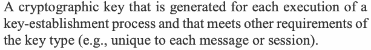
抽出したテキスト（原本と未照合・参考）
A cryptographic key that is generated for each execution of a key-establishment process and that meets other requirements of the key type (e.g., unique to each message or session).抽出したテキストの訳（原本と未照合・参考）
鍵確立プロセスを実行するたびに生成され、鍵種別に関するその他の要件（例：メッセージまたはセッションごとに固有であること）を満たす暗号鍵。Ephemeral Key — A cryptographic key that is generated for each execution of a key-establishment process and that meets other requirements of the key type (e.g., unique to each message or session).
Ephemeral Key — 鍵確立プロセスの実行ごとに生成され、その鍵種別のその他の要件（例：メッセージまたはセッションごとに一意であること）を満たす暗号鍵。
Hardware Security Module (HSM) — A physical computing device that safeguards and manages cryptographic keys and provides cryptographic processing. An HSM is or contains a cryptographic module.
Hardware Security Module (HSM) — 暗号鍵を保護および管理し、暗号処理を提供する物理的な計算デバイス。HSMは暗号モジュールそのものであるか、暗号モジュールを含む。
Initialization Vector (IV) — A vector used in defining the starting point of a cryptographic process (e.g., encryption and key wrapping).
Initialization Vector (IV) — 暗号プロセス（例：暗号化や鍵ラッピング）の開始点を定めるために用いられるベクトル。
Installation (of keying material) — The process of making keying material available for establishing and maintaining cryptographic relationships.
Installation (of keying material) — 暗号関係を確立し維持するために、鍵材料を利用可能にするプロセス。
Integrity — 1. In the general information security context (as defined in SP 800-53): guarding against improper modification; includes ensuring information non-repudiation and authenticity.
Integrity — 1. 一般的な情報セキュリティの文脈において（SP 800-53での定義）：不適切な改変から保護すること。情報の否認防止と真正性の確保を含む。
2.In a cryptographic context: the property that sensitive data has not been modified or deleted in an unauthorized and undetected manner since it was created, transmitted or stored.
2.暗号の文脈：機微データが作成、伝送または保存されて以降、不正かつ検知されない方法で改変または削除されていない性質。
Integrity authentication — The process of providing assurance that data has not been modified since a message authentication code or digital signature was created for that data.
Integrity authentication — データに対してメッセージ認証コードまたはデジタル署名が作成されて以降、そのデータが改変されていないことについて保証を与えるプロセス。
Internet Key Exchange (IKE) — The Internet Engineering Task Force (IETF) protocol (RFC 5996) that is used to set up a security association in the Internet Protocol Security (IPsec) protocol suite.
Internet Key Exchange (IKE) — Internet Protocol Security（IPsec）プロトコルスイートにおいてセキュリティアソシエーションを設定するために用いられる、Internet Engineering Task Force（IETF）のプロトコル（RFC 5996）。
Inventory management — As used in this Recommendation, the management of keys and/or certificates to monitor their status (e.g., expiration dates and whether compromised); assign and track their owners or sponsors (who/what they are and where they are located or how to contact them); and report the status to the appropriate official for remedial action, when required.
Inventory management — 本推奨においては、鍵および／または証明書を管理して、その状態（例：有効期限、危殆化の有無）を監視し、所有者または責任者（誰または何であるか、どこに所在するか、どのように連絡を取るか）を割り当てて追跡し、必要な場合には是正措置のために適切な責任者に状態を報告することをいう。
Kerberos — A network authentication protocol that is designed to provide strong authentication for client/server applications by using symmetric-key cryptography.
Kerberos — 対称鍵暗号を用いることでクライアント／サーバアプリケーションに強力な認証を提供するよう設計された、ネットワーク認証プロトコル。
Key agreement — A (pair-wise) key-establishment procedure in which the resultant secret keying material is a function of information contributed by both participants so that neither party can predetermine the value of the secret keying material independently from the contributions of the other party. Key agreement includes the creation (i.e., generation) of keying material by the key-agreement participants. A separate distribution of the generated keying material is not performed. Contrast with Key transport.
Key agreement — （ペア単位の）鍵確立手順であって、得られる秘密の鍵材料が両方の参加者が提供した情報の関数となるため、いずれの当事者も相手方の提供した情報と無関係に秘密の鍵材料の値を事前に決定できないもの。鍵合意には、鍵合意の参加者による鍵材料の作成（すなわち生成）が含まれる。生成された鍵材料の個別の配布は行われない。鍵輸送と対比される。
Key center — A common central source of the keys or key components that are necessary to support cryptographically protected exchanges within one or more communicating groups.
Key center — 1つ以上の通信グループ内で暗号で保護されたやり取りを支援するのに必要な鍵または鍵コンポーネントの、共通の中央供給源。
Key (or key pair) owner — One or more entities that are authorized to use a symmetric key or the private key of an asymmetric key pair.
Key (or key pair) owner — 対称鍵、または非対称鍵ペアのプライベート鍵の使用を認可されている1つ以上のエンティティ。
Key-center environment — As used in this Recommendation, an environment in which the keys or key components needed to support cryptographically protected exchanges within one or more communicating groups are obtained from a common central source.
Key-center environment — 本推奨においては、1つ以上の通信グループ内で暗号で保護されたやり取りを支援するのに必要な鍵または鍵コンポーネントを、共通の中央供給源から入手する環境をいう。
Key certification — In a Public Key Infrastructure (PKI), a process that permits keys or key components to be unambiguously associated with their certificate sources (e.g., using digital signatures to associate public-key certificates with the certification authorities that issued them).
Key certification — 公開鍵基盤（PKI）において、鍵または鍵コンポーネントをその証明書の発行元と一義的に関連付けることを可能にするプロセス（例：デジタル署名を用いて、公開鍵証明書をそれを発行した認証局と関連付ける）。
Key component — One of at least two parameters that have the same security properties (e.g., randomness) as a cryptographic key; parameters are combined using an approved cryptographic function to form a plaintext cryptographic key before use.
Key component — 暗号鍵と同じセキュリティ特性（例：ランダム性）をもつ、少なくとも2つのパラメータのうちの1つ。これらのパラメータは、使用前に承認された暗号機能を用いて結合され、平文の暗号鍵を形成する。
Key derivation — As used in this Recommendation, a method of deriving keying material from a pre-shared key and possibly other information. See SP 800-108.
Key derivation — 本推奨においては、事前共有鍵と、場合によってはその他の情報から鍵材料を導出する方法をいう。SP 800-108を参照。
Key distribution — The transport of key information from one entity (the sender) to one or more other entities (the receivers). The sender may have generated the key information or acquired it from another source as part of a separate process. The key information may be distributed manually or using automated key transport mechanisms.
Key distribution — 鍵情報を、あるエンティティ（送信者）から1つ以上の他のエンティティ（受信者）へ伝送すること。送信者は、鍵情報を自ら生成した場合もあれば、別のプロセスの一部として他の情報源から取得した場合もある。鍵情報は、手動で配布することも、自動化された鍵輸送メカニズムを用いて配布することもできる。
Key Distribution Center (KDC) — A key center that generates keys for distribution to subscriber entities.
Key Distribution Center (KDC) — 加入者エンティティに配布するための鍵を生成する鍵センター。
Key establishment — The process that results in the sharing of a key between two or more entities, either by manual distribution, using automated key transport or key agreement mechanisms or by using key derivation that employs an already-shared key between or among those entities. Key establishment may include the creation of a key.
Key establishment — 2つ以上のエンティティ間で鍵を共有する結果をもたらすプロセス。手動配布、自動化された鍵輸送もしくは鍵合意のメカニズムの使用、またはそれらのエンティティ間ですでに共有されている鍵を用いる鍵導出の使用のいずれかによる。鍵確立には鍵の作成が含まれることがある。
Key generation — The generation of a cryptographic key either as a single process using a random bit generator and an approved set of rules, or as created during key agreement or key derivation.
Key generation — 暗号鍵の生成。乱数ビット生成器と承認された規則の集合を用いる単一のプロセスとして行う場合と、鍵合意または鍵導出の過程で作成される場合がある。
Key information — Information about a key that includes the keying material and associated metadata relating to the key. See Keying material and Metadata.
Key information — 鍵に関する情報であり、鍵材料およびその鍵に関連するメタデータを含む。Keying material および Metadata を参照のこと。
Key management — The activities involved in the handling of cryptographic keys and other related parameters (e.g., IVs and domain parameters) during the entire life cycle of the keys, including their generation, storage, establishment, entry and output into cryptographic modules, use and destruction.
Key management — 暗号鍵およびその他の関連パラメータ（例：IV、ドメインパラメータ）を、鍵のライフサイクル全体を通じて取り扱うことに関わる活動。鍵の生成、保管、確立、暗号モジュールへの入力と出力、使用、および破棄を含む。
Key management components — The software module applications and hardware security modules (HSMs) that are used to generate, establish, distribute, store, account for, suspend, revoke, or destroy cryptographic keys and metadata.
Key management components — 暗号鍵およびメタデータの生成、確立、配布、保管、管理記録、一時停止、失効、または破棄に用いられるソフトウェアモジュールアプリケーションおよびハードウェアセキュリティモジュール（HSM）。
Key management function — Functions used 1) to establish cryptographic keys, certificates and the information associated with them; 2) for the accounting of all keys and certificates; 3) for key storage and recovery; 4) for revocation and replacement (as needed); and 5) for key destruction.
Key management function — 1) 暗号鍵、証明書およびそれらに関連する情報を確立するため、2) すべての鍵と証明書の管理記録を行うため、3) 鍵の保管と回復のため、4) 失効と置換（必要に応じて）のため、5) 鍵の破棄のために用いられる機能。
Key Management Plan — Documents how key management for current and/or planned cryptographic products and services will be implemented to ensure lifecycle key management support for cryptographic processes.
Key Management Plan — 暗号プロセスに対するライフサイクル全体の鍵管理支援を確保するために、現行および／または計画中の暗号製品・サービスの鍵管理をどのように実装するかを文書化したもの。
Key management planning documentation — The Key Management Specification, CKMS Security Policy and CKMS Practice Statement
Key management planning documentation — Key Management Specification、CKMS Security Policy および CKMS Practice Statement
Key Management Policy — A high-level document that identifies a high-level structure, responsibilities, governing standards and guidelines, organizational dependencies and other relationships, and security policies.
Key Management Policy — 上位レベルの構造、責任、準拠する標準とガイドライン、組織上の依存関係その他の関係、およびセキュリティポリシーを特定する上位レベルの文書。
Key management product — A symmetric or asymmetric cryptographic key, a public-key certificate and other related items (such as domain parameters, IVs, random numbers, certificate revocation lists and compromised key lists, and tokens) that are obtained by a trusted means from some source.
Key management product — 対称または非対称の暗号鍵、公開鍵証明書、およびその他の関連物（ドメインパラメータ、IV、乱数、証明書失効リスト、危殆化鍵リスト、トークンなど）であって、何らかの情報源から信頼できる手段で入手されるもの。
Key Management Practice Statement — A document or set of documentation that describes (in detail) the organizational structure, responsible roles, and organization rules for the functions identified in the associated cryptographic Key Management Policy (see IETF RFC 3647).
Key Management Practice Statement — 関連する暗号の Key Management Policy で特定された機能について、組織構造、責任を負う役割、および組織の規則を（詳細に）記述した文書または文書群（IETF RFC 3647 を参照）。
Key management protocol — Documented and coordinated rules for exchanging keys and metadata (e.g., X.509 certificates).
Key management protocol — 鍵およびメタデータ（例：X.509証明書）を交換するための、文書化され調整された規則。
Key management service — The generation, establishment, distribution, destruction, revocation, and recovery of keys.
Key management service — 鍵の生成、確立、配布、破棄、失効、および回復。
Key pair — A public key and its corresponding private key. A key pair is used with a public key algorithm.
Key pair — 公開鍵とそれに対応する秘密鍵。鍵ペアは公開鍵アルゴリズムとともに使用される。
Key processing facility — A CKMS component that performs one or more of the following functions:
Key processing facility — 次の機能のうち1つ以上を実行する CKMS コンポーネント：
•The acquisition or generation of public key certificates,
•公開鍵証明書の取得または生成、
•The initial establishment of keying material (including its generation and distribution),
•鍵素材の初期確立（生成および配布を含む）、
•The maintenance of a database that maps end entities to an organization’s certificate/key structure,
•エンドエンティティと組織の証明書／鍵構造との対応を記録するデータベースの維持、
•Key backup, archiving, inventory or recovery,
•鍵のバックアップ、アーカイブ、インベントリ管理または回復、
•The maintenance and distribution of key compromise lists and/or certificate revocation lists (i.e., Revoked Key Notifications), and
•鍵侵害リストおよび／または証明書失効リスト（失効鍵通知）の維持と配布、ならびに
•The generation of audit requests and the processing of audit responses as necessary for the prevention of undetected compromises.
•検知されない侵害を防止するために必要な監査要求の生成と監査応答の処理。
Key recovery — Mechanisms and processes that allow authorized entities to retrieve or reconstruct keys and other key information from key backups or archives.
Key recovery — 認可されたエンティティが、鍵のバックアップまたはアーカイブから鍵およびその他の鍵情報を取得または再構成できるようにするメカニズムおよびプロセス。
Key-recovery agent — A human entity authorized to access stored key information in key backups and archives.
Key-recovery agent — 鍵のバックアップおよびアーカイブに保管された鍵情報へのアクセスを認可された人間のエンティティ。
Key specification — A specification of the data format, cryptographic algorithms, physical media, and data constraints for keys required by a cryptographic device, application or process.
Key specification — 暗号デバイス、アプリケーションまたはプロセスが必要とする鍵について、データ形式、暗号アルゴリズム、物理媒体、およびデータ制約を定めた仕様。
Key Translation Center (KTC) — A key center that receives keys from one entity wrapped using a symmetric key shared with that entity, unwraps the wrapped keys and rewraps the keys using a symmetric key shared with another entity.
Key Translation Center (KTC) — あるエンティティと共有する対称鍵でラップされた鍵をそのエンティティから受け取り、ラップされた鍵をアンラップし、別のエンティティと共有する対称鍵を用いて鍵を再ラップする鍵センター。
Key transport (automated) — A key-establishment procedure whereby one entity (the sender) selects a value for secret keying material and then securely distributes that value to one or more other entities (the receivers). Contrast with Key agreement.
Key transport (automated) — 一方のエンティティ（送信者）が秘密鍵材料の値を選択し、その値を1つ以上の他のエンティティ（受信者）に安全に配布する鍵確立手順。Key agreement と対比のこと。
Key wrapping — A method of providing both confidentiality and integrity protection for keying material using a symmetric key,
Key wrapping — 対称鍵を用いて鍵材料に機密性と完全性の両方の保護を提供する方法、
Key wrapping algorithm — A cryptographic algorithm approved for use in wrapping keys.
Key wrapping algorithm — 鍵のラップでの使用が承認された暗号アルゴリズム。
Key wrapping key — A symmetric key that is used with a key-wrapping algorithm to protect the confidentiality and integrity of keys.
Key wrapping key — 鍵の機密性と完全性を保護するために鍵ラップアルゴリズムとともに使用される対称鍵。
Keying material — A cryptographic key and other parameters (e.g., IVs or domain parameters) used with a cryptographic algorithm.
Keying material — 暗号アルゴリズムとともに使用される暗号鍵およびその他のパラメータ（例：IV、ドメインパラメータ）。
Manual key distribution — A non-automated means of transporting cryptographic keys by physically moving a device or document containing the key or key component.
Manual key distribution — 鍵または鍵コンポーネントを含むデバイスや文書を物理的に移動させることによって暗号鍵を輸送する、自動化されていない手段。
Mesh — A key management architecture in which key processing facilities may interact with each other with no concept of dominance implied by the interaction.
Mesh — 鍵処理施設どうしが相互に作用でき、その相互作用によって優劣関係が含意されることのない鍵管理アーキテクチャ。
Message authentication — A process that provides assurance of the integrity of messages, documents or stored data.
Message authentication — メッセージ、文書、または保存データの完全性について保証を提供するプロセス。
Message authentication code — A cryptographic checksum based on an approved cryptographic function and a symmetric key to detect both accidental and intentional modifications of data.
Message authentication code — 承認された暗号関数と対称鍵に基づく暗号チェックサムであり、データの偶発的な改変と意図的な改変の両方を検出する。
Metadata — The information associated with a key that describes its specific characteristics, constraints, acceptable uses, ownership, etc. Sometimes called the key's attributes.
Metadata — 鍵に関連付けられた情報であり、その鍵の固有の特性、制約、許容される用途、所有権などを記述する。鍵の属性と呼ばれることもある。
Multiple-center group — As used in this Recommendation, a set of two or more key centers that have agreed to work together to provide cryptographic keying services to their subscribers.
Multiple-center group — 本推奨事項においては、加入者に暗号鍵サービスを提供するために協力することに合意した2つ以上の鍵センターの集合。
Non-repudiation — 1. A service using a digital signature that is used to support a determination of whether a message was actually signed by a given entity.
Non-repudiation — 1. メッセージが特定のエンティティによって実際に署名されたかどうかの判定を支援するために用いられる、デジタル署名を使用するサービス。
2.In a general information security context, assurance that the sender of information is provided with proof of delivery, and the recipient is provided with proof of the sender’s identity, so neither can later deny having processed the information.
2.一般的な情報セキュリティの文脈では、情報の送信者に配達証明を、受信者に送信者の身元証明を提供し、いずれの当事者も後に情報を処理したことを否認できないようにする保証。
Online Certificate Status Protocol responder — A PKI entity that verifies the revocation status of certificates following the Online Certificate Status Protocol (specified in RFC 6960).
Online Certificate Status Protocol responder — Online Certificate Status Protocol（RFC 6960 で規定）に従って証明書の失効状態を検証する PKI エンティティ。
Party — See Entity.
Party — Entity を参照のこと。
Password — A string of characters (letters, numbers and other symbols) that is used to authenticate an identity, to verify access authorization or to derive cryptographic keys.
Password — 識別情報の認証、アクセス認可の検証、または暗号鍵の導出に用いられる文字列（英字、数字およびその他の記号）。
Peers — Entities at the same tier in a CKMS hierarchy (e.g., all peers are client nodes).
Peers — CKMS 階層において同じ層にあるエンティティ（例：ピアがすべてクライアントノードである場合）。
Plaintext — Intelligible data that has meaning and can be understood without the application of decryption.
Plaintext — 意味を持ち、復号を適用しなくても理解できるデータ。
Private key — A cryptographic key used with a public-key cryptographic algorithm that is uniquely associated with an entity and is not made public. The private key has a corresponding public key. Depending on the algorithm, the private key may be used to:
Private key — 公開鍵暗号アルゴリズムとともに使用される暗号鍵であって、あるエンティティに一意に関連付けられ、公開されないもの。秘密鍵には対応する公開鍵がある。アルゴリズムに応じて、秘密鍵は次の目的に使用されることがある：
1.Compute the corresponding public key,
1.対応する公開鍵を計算する。
2.Compute a digital signature that may be verified by the corresponding public key,
2.対応する公開鍵で検証できるデジタル署名を計算する。
3.Decrypt keys that were encrypted by the corresponding public key, or
3.対応する公開鍵で暗号化された鍵を復号する。または
4.Compute a shared secret during a key agreement transaction.
4.鍵合意の実行中に共有秘密を計算する。
Public key — A cryptographic key used with a public-key cryptographic algorithm that is uniquely associated with an entity and that may be made public. The public key has a corresponding private key. The public key may be known by anyone and, depending on the algorithm, may be used:
Public key — 公開鍵暗号アルゴリズムとともに使用される暗号鍵であって、あるエンティティに一意に関連付けられ、公開されてよいもの。公開鍵には対応する秘密鍵がある。公開鍵は誰に知られてもよく、アルゴリズムに応じて、次の目的に使用されることがある：
1.To verify a digital signature that is signed by the corresponding private key,
1.対応する秘密鍵で署名されたデジタル署名を検証する。
2.To encrypt keys that can be decrypted using the corresponding private key, or
2.対応する秘密鍵を用いて復号できる鍵を暗号化する。または
3.As one of the input values to compute a shared secret during a key agreement transaction.
3.鍵合意の実行中に共有秘密を計算するための入力値の1つとして用いる。
Public key certificate — A set of data that uniquely identifies an entity, contains the entity's public key and possibly other information, and is digitally signed by a trusted party, thereby binding the public key to the entity (e.g., using an X.509 certificate). Additional information in the certificate could specify how the key is used and its validity period.
Public key certificate — エンティティを一意に識別し、そのエンティティの公開鍵および場合によってはその他の情報を含み、信頼できる当事者によってデジタル署名されることで公開鍵をそのエンティティに結び付けるデータの集合（例：X.509証明書を用いる）。証明書内の追加情報によって、鍵の使用方法や有効期間を指定できる。
Public-key (asymmetric) cryptographic algorithm — A cryptographic algorithm that uses two related keys, a public key and a private key. The two keys have the property that determining the private key from the public key is computationally infeasible.
Public-key (asymmetric) cryptographic algorithm — 関連する2つの鍵、すなわち公開鍵と秘密鍵を使用する暗号アルゴリズム。2つの鍵は、公開鍵から秘密鍵を求めることが計算量的に実行不可能であるという性質を持つ。
Public Key Infrastructure (PKI) — A framework that is established to issue, maintain and revoke public key certificates.
Public Key Infrastructure (PKI) — 公開鍵証明書を発行、維持、および失効させるために確立される枠組み。
Registration authority (RA) — A trusted entity that establishes and vouches for the identity and authorization of a certificate applicant on behalf of some authority (e.g., a CA).
Registration authority (RA) — 何らかの機関（例：CA）に代わって、証明書申請者の識別情報と認可を確認し保証する信頼できるエンティティ。
Relying party — An entity that relies on the certificate and the CA that issued the certificate to verify the identity of the certificate's subject and/or owner; the validity of the public key, associated algorithms and any relevant parameters; and the subject’s possession of the corresponding private key.
Relying party — 証明書およびその証明書を発行した CA に依拠して、証明書のサブジェクトおよび／または所有者の識別情報、公開鍵・関連アルゴリズム・関係するパラメータの有効性、ならびにサブジェクトが対応する秘密鍵を保有していることを検証するエンティティ。
Revocation — A process whereby a notice is made available to affected entities that keys should be removed from operational use prior to the end of the established cryptoperiod of those keys.
Revocation — 鍵について確立された暗号期間の終了前に、その鍵を運用上の使用から外すべきであるという通知を、影響を受けるエンティティが入手できるようにするプロセス。
Revoked key notification (RKN) — A report (e.g., a list) of one or more keys that have been revoked and the date(s) of revocation, possibly along with the reason for their revocation. Certificate Revocation Lists (CRLs) and Compromised Key Lists (CKLs) are examples of RKNs, along with Online Certificate Status Protocol (OCSP) responses (see RFC 6960).7
Revoked key notification (RKN) — 失効した1つ以上の鍵と失効日を示す報告（例：リスト）であり、失効理由を併記することもある。証明書失効リスト（CRL）および危殆化鍵リスト（CKL）は、Online Certificate Status Protocol（OCSP）の応答（RFC 6960 を参照）とともに RKN の例である。7
Security policy — A set of criteria for the provision of security services.
Security policy — セキュリティサービスを提供するための基準の集合。
Service agent — An intermediate distribution or service facility. Some key management infrastructures may be sufficiently large or support sufficiently organizationally complex organizations that make it impractical for those organizations to receive keying material directly from a common key processing facility.
Service agent — 中間的な配布施設またはサービス施設。鍵管理インフラストラクチャの中には、規模が十分に大きいか、組織的に十分複雑な組織を支援しているために、それらの組織が共通の鍵処理施設から直接鍵材料を受け取ることが現実的でないものがある。
Source authentication — The process of providing assurance about the source of information. Sometimes called origin authentication. Compare with Entity authentication.
Source authentication — 情報の発信元について保証を提供するプロセス。発信元認証（origin authentication）と呼ばれることもある。Entity authentication と比較のこと。
Sponsor (of a certificate) — A human entity that is responsible for managing a certificate for the non-human entity identified as the subject in the certificate (e.g., applying for the certificate; generating the key pair; replacing the certificate, when required; and revoking the certificate). Note that a certificate sponsor is also a sponsor of the public key in the certificate and the corresponding private key.
Sponsor (of a certificate) — 証明書内でサブジェクトとして識別される人間以外のエンティティのために、その証明書の管理（例：証明書の申請、鍵ペアの生成、必要時の証明書の置換、および証明書の失効）について責任を負う人間のエンティティ。証明書のスポンサーは、その証明書内の公開鍵および対応する秘密鍵のスポンサーでもあることに注意すること。
Sponsor (of a key) — A human entity that is responsible for managing a key for the non-human entity (e.g., device, application or process) that is authorized to use the key.
Sponsor (of a key) — 鍵の使用を認可された人間以外のエンティティ（例：デバイス、アプリケーション、プロセス）のために、その鍵の管理について責任を負う人間のエンティティ。
Subject (in a certificate) — The entity authorized to use the private key associated with the public key in the certificate.
Subject (in a certificate) — 証明書内の公開鍵に関連付けられた秘密鍵の使用を認可されたエンティティ。
Suspension — The process of temporarily changing the status of a key or certificate to invalid (e.g., in order to determine if it has been compromised). The certificate may subsequently be revoked or reactivated.
Suspension — 鍵または証明書の状態を一時的に無効に変更するプロセス（例：危殆化したかどうかを判断するため）。証明書はその後、失効させられるか、再有効化されることがある。
Symmetric key — A single cryptographic key that is used by one or more entities with a symmetric key algorithm.
Symmetric key — 1つ以上のエンティティによって対称鍵アルゴリズムとともに使用される単一の暗号鍵。
Symmetric-key algorithm — A cryptographic algorithm that employs the same secret key for an operation and its complement (e.g., encryption and decryption).
Symmetric-key algorithm — ある操作とその逆操作（例：暗号化と復号）に同じ秘密鍵を用いる暗号アルゴリズム。
Threat — Any circumstance or event with the potential to adversely impact operations (including mission function, image, or reputation), agency assets or individuals through an information system via unauthorized access, destruction, disclosure, modification of data, and/or denial of service.
Threat — 情報システムを介して、認可されていないアクセス、データの破壊・開示・改変、および／またはサービス妨害によって、業務（ミッション機能、イメージ、評判を含む）、機関の資産、または個人に悪影響を及ぼす可能性のあるあらゆる状況または事象。
Token — A portable, user-controlled, physical device (e.g., smart card or memory stick) used to store cryptographic information and possibly also perform cryptographic functions.
Token — 暗号情報を保管し、場合によっては暗号機能も実行するために用いられる、利用者が管理する携帯可能な物理デバイス（例：スマートカード、メモリスティック）。
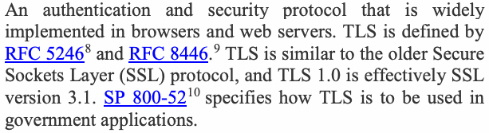
抽出したテキスト（原本と未照合・参考）
An authentication and security protocol that is widely implemented in browsers and web servers. TLS is defined by RFC 52468 and RFC 8446.9 TLS is similar to the older Secure Sockets Layer (SSL) protocol, and TLS 1.0 is effectively SSL version 3.1. SP 800-5210 specifies how TLS is to be used in government applications.抽出したテキストの訳（原本と未照合・参考）
ブラウザーおよびウェブサーバーで広く実装されている認証・セキュリティプロトコル。TLSはRFC 52468およびRFC 8446で規定される。TLSは旧式のSecure Sockets Layer（SSL）プロトコルに類似しており、TLS 1.0は実質的にSSLバージョン3.1である。SP 800-5210は政府アプリケーションでのTLSの使用方法を規定する。Transport Layer Security (TLS) protocol — An authentication and security protocol that is widely implemented in browsers and web servers. TLS is defined by RFC 52468 and RFC 8446.9 TLS is similar to the older Secure Sockets Layer (SSL) protocol, and TLS 1.0 is effectively SSL version 3.1. SP 800-5210 specifies how TLS is to be used in government applications.
Transport Layer Security (TLS) protocol — ブラウザおよびウェブサーバに広く実装されている認証およびセキュリティのプロトコル。TLS は RFC 52468 および RFC 8446.9 で定義されている。TLS は旧来の Secure Sockets Layer（SSL）プロトコルに類似しており、TLS 1.0 は事実上 SSL バージョン 3.1 である。SP 800-5210 は、政府のアプリケーションにおける TLS の使用方法を規定している。
Trust anchor — An authoritative entity represented by a public key and associated data (see RFC 591411).
Trust anchor — 公開鍵と関連データによって表される権威あるエンティティ（RFC 591411 を参照）。
Unauthorized disclosure — An event involving the exposure of information to entities not authorized access to the information.
Unauthorized disclosure — アクセスを認可されていないエンティティに情報が露出する事象。
User — A human entity.
User — 人間のエンティティ。
Validity period — The period of time during which a certificate is intended to be valid; the period of time between the start date and time and end date and time in a certificate.
Validity period — 証明書が有効であることが意図される期間。証明書内の開始日時と終了日時の間の期間。
Wrapped keying material — Keying material that has been encrypted and its integrity protected using an approved key wrapping algorithm and a key wrapping key in order to disguise the value of the underlying plaintext key.
Wrapped keying material — 平文の鍵の値を秘匿するために、承認された鍵ラップアルゴリズムと鍵ラップ鍵を用いて暗号化され、完全性が保護された鍵材料。
X.509 certificate — The X.509 public-key certificate or the X.509 attribute certificate, as defined by the ISO/ITU-T 12 X.509 standard. Most commonly (including in this document), an X.509 certificate refers to the X.509 public-key certificate.
X.509 certificate — ISO/ITU-T 12 X.509 標準で定義された X.509 公開鍵証明書または X.509 属性証明書。最も一般的には（本文書を含め）、X.509証明書は X.509 公開鍵証明書を指す。
1.5.2 Acronyms
1.5.2 略語
The following abbreviations and acronyms are used in this document:
本書では次の略語および頭字語を使用する。
AES — Advanced Encryption Standard (algorithm)
AES — Advanced Encryption Standard（アルゴリズム）
ASN.1 Abstract Syntax Notation One
ASN.1 抽象構文記法1
CA — Certification Authority
CA — 認証局（Certification Authority）
CIO — Chief Information Officer
CIO — 最高情報責任者（Chief Information Officer）
CKL Compromised Key List CKMS Cryptographic Key Management System CKMS SP Cryptographic Key Management System Security Policy CKMS PS Cryptographic Key Management System Practice Statement
CKL 侵害鍵リスト CKMS 暗号鍵管理システム CKMS SP 暗号鍵管理システム・セキュリティポリシー CKMS PS 暗号鍵管理システム実務記述書
CPS — Certification Practice Statement
CPS — 認証実施規程（Certification Practice Statement）
CP — Certificate Policy
CP — 証明書ポリシー（Certificate Policy）
CRL — Certificate Revocation List
CRL — 証明書失効リスト（Certificate Revocation List）
DH — Diffie Hellman (algorithm)
DH — Diffie Hellman（アルゴリズム）
ECDSA — Elliptic Curve Digital Signature Algorithm
ECDSA — 楕円曲線デジタル署名アルゴリズム（Elliptic Curve Digital Signature Algorithm）
FIPS Federal Information Processing Standard GCM Galois Counter Mode (algorithm) IETF Internet Engineering Task Force IPsec Internet Protocol Security
FIPS 連邦情報処理標準 GCM ガロア／カウンターモード（アルゴリズム） IETF インターネット技術タスクフォース IPsec インターネットプロトコルセキュリティ
IKE — Internet Key Exchange
IKE — Internet Key Exchange
ISA — Interconnection Service Agreement
ISA — 相互接続サービス合意（Interconnection Service Agreement）
ISO — International Standards Organization
ISO — International Standards Organization
ITU — International Telecommunication Union
ITU — 国際電気通信連合（International Telecommunication Union）
IV — Initialization Vector
IV — 初期化ベクトル（Initialization Vector）
KMP — Key Management Policy (See CKMS SP)
KMP — Key Management Policy（CKMS SP を参照）
KMPS — Key Management Practice Statement (See CKMS PS)
KMPS — Key Management Practice Statement（CKMS PS を参照）
MOA Memorandum of Agreement MOU Memorandum of Understanding NIST National Institute of Standards and Technology OAEP Optimal Asymmetric Encryption Padding (RSA mode for key transport) OCSP Online Certificate Status Protocol
MOA 合意覚書 MOU 了解覚書 NIST 米国国立標準技術研究所 OAEP 最適非対称暗号化パディング（鍵転送用RSAモード） OCSP オンライン証明書状態プロトコル
OID — Object Identifier
OID — オブジェクト識別子（Object Identifier）
OMB — Office of Management and Budget
OMB — 行政管理予算局（Office of Management and Budget）
PKI — Public Key Infrastructure
PKI — 公開鍵基盤（Public Key Infrastructure）
RA — Registration Authority
RA — 登録局（Registration Authority）
RSA — Rivest Shamir Adelman (algorithm)
RSA — Rivest Shamir Adelman（アルゴリズム）
RBG Random Bit Generator RKN Revoked Key Notification S/MIME Secure/Multipurpose Internet Mail Exchange (network protocol)
RBG 乱数ビット生成器 RKN 失効鍵通知 S/MIME セキュア／多目的インターネットメール交換（ネットワークプロトコル）
SP — Special Publication
SP — Special Publication
SSH — Secure Shell (network protocol)
SSH — Secure Shell（ネットワークプロトコル）
TLS — Transport Layer Security
TLS — Transport Layer Security
TLS/SSL — Transport Layer Security/Secure Sockets Layer
TLS/SSL — Transport Layer Security/Secure Sockets Layer
VPN Virtual Private Network
VPN 仮想プライベートネットワーク
2 Key-Management Concepts
2 鍵管理の概念
This section introduces key-management concepts that must be addressed or understood by any organization that uses cryptography to protect its information so that they can create key-management policies, practice statements and planning documents.
本節では、暗号を用いて情報を保護するあらゆる組織が、鍵管理のポリシー、実施規程、および計画文書を作成できるように、対処または理解しなければならない鍵管理の概念を紹介する。
Section 2.1 describes key establishment fundamentals, and Section 2.2 lists basic key management functions. Section 2.3 provides a high-level overview of cryptographic key management systems (CKMS) − the framework and services that provide for the generation, establishment, control, accounting, and destruction of cryptographic keys. Section 2.4 presents general design requirements for a CKMS, and Section 2.5 briefly addresses trust mechanisms. Finally, Section 2.6 addresses the suspension and revocation of keys.
2.1節では鍵確立の基礎を説明し、2.2節では基本的な鍵管理機能を列挙する。2.3節では、暗号鍵管理システム（CKMS）− 暗号鍵の生成、確立、制御、管理記録、および破棄を提供する枠組みとサービス − の上位レベルの概要を示す。2.4節では CKMS の一般的な設計要件を示し、2.5節では信頼メカニズムについて簡潔に扱う。最後に、2.6節では鍵の一時停止と失効を扱う。
2.1 Key Establishment
2.1 鍵確立
Key establishment is the process that results in the sharing of a key between two or more entities. This process could be by a manual distribution, by using automated key-transport or key-agreement mechanisms, or by key derivation using an already-shared key between or among those entities. Key establishment processes include the creation of a key. Key establishment techniques and issues are discussed in Section 5.3 of SP 800-175B.13
鍵確立とは、2つ以上のエンティティ間で鍵を共有する結果をもたらすプロセスである。このプロセスは、手動配布によるもの、自動化された鍵輸送または鍵合意のメカニズムを用いるもの、あるいはそれらのエンティティ間ですでに共有されている鍵を用いた鍵導出によるもののいずれかである。鍵確立プロセスには鍵の作成が含まれる。鍵確立の手法と課題は SP 800-175B.13 の5.3節で論じられている。
During key establishment, a decision must be made about the length of each key's cryptoperiod (the length of time that each key may be used). Guidance on the selection of cryptoperiods is provided in Part 1.
鍵確立の際には、各鍵の暗号期間（各鍵を使用してよい期間）の長さを決定しなければならない。暗号期間の選択に関するガイダンスは Part 1 に示されている。
2.2 Key-Management Functions
2.2 鍵管理機能
Each key management function needs to be addressed by an organization’s cryptographic Key Management Policy. This is true for organizations already using cryptography as well as organizations that do not currently acquire, distribute, use and manage keying material. Key management policies and practices need to be documented (see Sections 5 and 6). Roles and responsibilities need to be defined for the management of at least the following functions:
組織の暗号鍵管理ポリシーでは、各鍵管理機能に対処する必要がある。これは、すでに暗号を使用している組織だけでなく、現在は鍵素材を取得、配布、使用、管理していない組織にも当てはまる。鍵管理ポリシーと実務は文書化する必要がある（第5節、第6節を参照）。少なくとも次の機能の管理について、役割と責任を定義する必要がある。
•The generation or acquisition of key information (i.e., keying material and the associated metadata);
•鍵情報（すなわち鍵素材および関連メタデータ）の生成または取得。
•The secure distribution of private keys, secret keys and the associated metadata;
•秘密鍵、共通鍵および関連メタデータの安全な配布。
•The establishment of cryptoperiods;
•暗号期間の設定。
•Key and/or certificate inventory management, including procedures for the routine supersession of keys and certificates at the end of a cryptoperiod or validity period;
•鍵および／または証明書のインベントリ管理。これには、暗号期間または有効期間の終了時に鍵・証明書を定期的に更新する手順を含む。
•Procedures for the emergency revocation of compromised keys and the establishment (e.g., distribution) of replacement keys and/or certificates;
•侵害された鍵を緊急に失効させ、代替鍵および／または証明書を確立（例：配布）する手順。
•Accounting for and the storage and recovery of the operational and backed-up copies of key information;
•運用用およびバックアップ用の鍵情報の記録管理、保管および回復。
•The storage and recovery of archived key information;
•アーカイブされた鍵情報の保管および回復。
•Procedures for checking the integrity of stored key information before using it; and
•保管された鍵情報を使用する前に完全性を確認する手順。
•The destruction of private or secret keys that are no longer required.
•不要となった秘密鍵または共通鍵の破棄。
2.3 Cryptographic Key Management Systems (CKMS)
2.3 暗号鍵管理システム（CKMS）
The term cryptographic key management system (CKMS) refers to the framework and services that provide for the generation, establishment, control, accounting, and destruction of cryptographic keys and associated management information. It includes all elements (hardware, software, other equipment, and documentation); facilities; personnel; procedures; standards; and information products that form the system that establishes, manages, and supports cryptographic products and services for end entities. A CKMS may handle symmetric keys, asymmetric keys or both. Key management policies, practice statements, and specifications should identify common CKMS elements and suggest functions of and relationships among the organizational elements responsible for the management and use of cryptographic keys. The complexity of a key-management infrastructure and the allocation of roles within a key-management infrastructure will depend on 1) the cryptographic algorithms employed, 2) the operational and communications relationships among the organizational elements being served, 3) the purposes for which cryptography is employed, and 4) the number and complexity of cryptographic keying relationships required by an organization. The structure, complexity, and scale of CKMSs may vary considerably according to the needs of individual organizations. However, the elements and functions identified in Part 2 need to be present in most organizations that require cryptographic protection. This subsection describes the common CKMS organizational elements, functions, and requirements. Examples of real-world CKMS are provided in Appendix A. A CKMS is designed to incorporate a set of functional elements that collectively provide unified and seamless protection policy enforcement and key management services.14 Several distinct functional elements are identified for the generation, establishment, and management of cryptographic keys: a Central Oversight Authority, one or more key processing facility(ies), (optional) service agents, client nodes and (optional) hardware tokens used for entity authentication or initializing keys. It should be noted that organizations may choose to combine the functionality of more than one element into a single component. Figure 1 illustrates functional CKMS relationships.
暗号鍵管理システム（CKMS）とは、暗号鍵および関連管理情報の生成、確立、制御、管理記録および破棄を提供する枠組みとサービスを指す。エンドエンティティ向けの暗号製品およびサービスを確立、管理、支援するシステムを構成するすべての要素（ハードウェア、ソフトウェア、その他の装置、文書）、施設、人員、手順、標準および情報製品を含む。CKMSは対称鍵、非対称鍵またはその両方を扱う場合がある。鍵管理ポリシー、実施規程および仕様では、CKMSに共通する要素を特定し、暗号鍵の管理・使用を担う組織要素の機能と相互関係を示すべきである。鍵管理基盤の複雑さと、その中での役割分担は、1) 使用する暗号アルゴリズム、2) 対象となる組織要素間の運用上および通信上の関係、3) 暗号を使用する目的、4) 組織が必要とする暗号鍵関係の数と複雑さによって異なる。CKMSの構造、複雑さおよび規模は、組織ごとのニーズに応じて大きく異なる。ただし、暗号保護を必要とする大半の組織には、第2部で特定する要素と機能が必要である。本小節では、CKMSに共通する組織要素、機能および要件を説明する。実環境のCKMSの例を付属書Aに示す。CKMSは、統一されたシームレスな保護ポリシーの実施と鍵管理サービスを全体として提供する機能要素群を組み込むよう設計される。14暗号鍵の生成、確立および管理に関して、中央監督機関、1つ以上の鍵処理施設、（任意の）サービスエージェント、クライアントノード、ならびに（任意の）エンティティ認証または鍵初期化用ハードウェアトークンという複数の機能要素を特定する。組織は、複数要素の機能を単一のコンポーネントに統合してもよい。図1にCKMSの機能上の関係を示す。
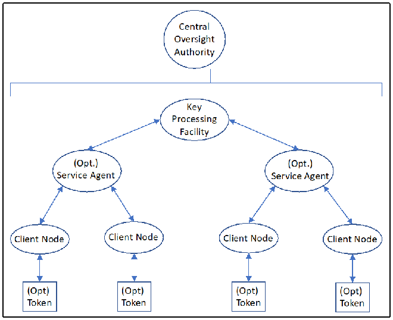
PDF原本のp.29にある図
Figure 1: CKMS Components
図1：CKMSコンポーネント
2.3.1 Central Oversight Authority
2.3.1 中央監督機関
As used in this Recommendation, the CKMS’s Central Oversight Authority is the entity that provides overall CKMS data synchronization and system security oversight for an organization or set of organizations. The Central Oversight Authority 1) coordinates protection policy and practices (procedures) documentation, 2) may function as a holder of key management information provided by service agents, and 3) serves as the source for common and system-level information required by service agents (e.g., key information and registration information, directory data, system policy specifications, and system-wide key compromise and revocation information). As required by policies for survivability or continuity of operations, Central Oversight Authority facilities may be replicated at an appropriate remote site to function as a system back up.
本勧告でいうCKMSの中央監督機関は、組織または組織群について、CKMSデータ全体の同期とシステムセキュリティの監督を提供する主体である。中央監督機関は、1) 保護ポリシーおよび実務（手順）の文書化を調整し、2) サービスエージェントが提供する鍵管理情報の保管者として機能する場合があり、3) サービスエージェントに必要な共通情報およびシステムレベル情報（例：鍵情報と登録情報、ディレクトリデータ、システムポリシー仕様、システム全体の鍵侵害・失効情報）の供給元となる。存続性または業務継続に関するポリシーで必要とされる場合、中央監督機関の施設を適切な遠隔地に複製し、システムのバックアップとして機能させてもよい。
2.3.2 Key-Processing Facility(ies)
2.3.2 鍵処理施設
Key-processing facilities are CKMS components that typically provide one or more of the following services:
鍵処理施設は、通常、次のサービスのうち1つ以上を提供するCKMSコンポーネントである。
•Generation and/or distribution of key information;
•鍵情報の生成および／または配布。
•Acquisition or generation of public-key certificates (where applicable);
•公開鍵証明書の取得または生成（該当する場合）。
•Backup15, archiving16, and inventories17 of key information;
•鍵情報のバックアップ15、アーカイブ16、および棚卸し17；
•Maintenance of a database that maps entities to an organization’s certificate or key structure;
•エンティティと組織の証明書／鍵構造との対応を記録するデータベースの維持。
•Maintenance and distribution of revoked key or certificate reports (see Section 2.6); and
•失効鍵または証明書の報告（2.6節を参照）の維持および配布。
•Generation of audit requests and the processing of audit responses as necessary for the detection of previously undetected compromises and the analysis of compromise events as needed to support recovery from compromises.
•未検知の侵害の検出、および侵害からの回復支援に必要な侵害事象の分析のための、監査要求の生成と監査応答の処理。
Where public key cryptography is employed, the organization operating the key processing facility will generally perform most PKI registration authority, repository, and archive functions. The organization also performs at least some PKI certification authority functions. Actual X.509 public-key certificates may be obtained from a government source (e.g., certification authorities generating identification or encryption certificates) or a commercial external certification authority (usually a commercial infrastructure/CA that supplies/sells X.509 certificates). Commercial external certification authority certificates should be cross-certified by a government root CA.
公開鍵暗号が使用される場合、鍵処理施設を運用する組織は、一般に PKI の登録局、リポジトリ、およびアーカイブの機能の大部分を実行する。この組織は、PKI の認証局機能の少なくとも一部も実行する。実際の X.509 公開鍵証明書は、政府の情報源（例：識別用または暗号化用の証明書を生成する認証局）または商用の外部認証局（通常、X.509証明書を提供・販売する商用のインフラストラクチャ／CA）から入手できる。商用の外部認証局の証明書は、政府のルート CA によって相互認証されるべきである。
An organization may use more than one key-processing facility to provide these services (e.g., for inter-organizational interoperation). Key-processing facilities can be added to meet new requirements or deleted when no longer needed, and they may support both public key and symmetric key-establishment techniques.
組織は、これらのサービスを提供するために（例：組織間の相互運用のために）複数の鍵処理施設を使用することがある。鍵処理施設は、新たな要件を満たすために追加したり、不要になった時点で削除したりでき、公開鍵と対称鍵の両方の鍵確立手法を支援することができる。
A key-processing facility may be distributed such that intermediary redistribution facilities maintain stores of keying material that exist in physical form (e.g., magnetic media, smart cards) and may also serve as a source for non-cryptographic products and services (e.g., software downloads for CKMS-reliant entities, usage documents, or policy authority).
鍵処理施設は分散させることができ、その場合、中間の再配布施設が物理的な形態（例：磁気媒体、スマートカード）で存在する鍵材料の保管庫を維持し、また暗号以外の製品・サービス（例：CKMS に依存するエンティティ向けのソフトウェアダウンロード、利用文書、ポリシー機関）の提供元としても機能することがある。
Secret and private keys and secret metadata that are electronically distributed to end entities shall be wrapped (i.e., encrypted and their integrity protected) for the end entity or for intermediary redistribution services before transmission. Public keys and products not requiring confidentiality protection (e.g., non-secret metadata) that are electronically distributed to end entities shall be provided with integrity protection.
エンドエンティティに電子的に配布される秘密鍵（secret key および private key）ならびに秘密のメタデータは、伝送前に、エンドエンティティ向けまたは中間の再配布サービス向けにラップ（すなわち、暗号化し完全性を保護）しなければならない。エンドエンティティに電子的に配布される公開鍵および機密性保護を必要としない製品（例：秘密でないメタデータ）には、完全性保護を施さなければならない。
Some key-processing facilities may generate and produce human-readable key information and other key-related information that require physical (i.e., manual) distribution. Keys that are manually distributed shall either 1) be cryptographically protected in the same manner as those intended for electronic distribution or 2) receive physical protection and be subject to controlled distribution (e.g., registered mail) between the key processing facility and the end entity.
鍵処理施設の中には、物理的な（すなわち手動の）配布を必要とする、人間が読める形式の鍵情報およびその他の鍵関連情報を生成・作成するものがある。手動で配布される鍵は、1) 電子配布向けの鍵と同じ方法で暗号的に保護されるか、2) 物理的保護を受け、鍵処理施設とエンドエンティティの間で管理された配布（例：書留郵便）の対象となるか、のいずれかでなければならない。
Part 1 provides general guidance for key distribution. Newly deployed key-processing facilities should be designed to support legacy and existing system requirements and to support future network services as they become available.
Part 1 は鍵配布に関する一般的なガイダンスを示している。新たに導入する鍵処理施設は、レガシーおよび既存のシステムの要件を支援し、将来のネットワークサービスが利用可能になった時点でそれらを支援できるように設計されるべきである。
2.3.3 Service Agents
2.3.3 サービスエージェント
Some key-management infrastructures may be large enough or may support sufficiently complex organizations that it is impractical for the organizations to receive key information directly from a common CKMS key-processing facility. Intermediate distribution or service facilities, called service agents, may be employed to perform the distribution process.
鍵管理インフラストラクチャの中には、規模が十分に大きいか、十分に複雑な組織を支援しているために、組織が共通の CKMS 鍵処理施設から直接鍵情報を受け取ることが現実的でないものがある。配布プロセスを実行するために、サービスエージェントと呼ばれる中間の配布施設またはサービス施設を用いることがある。
Service agents, when required by the infrastructure, support an organization's CKMS(s) as single points of access for client nodes. When service agents are used, all transactions initiated by client nodes are either processed by a service agent or forwarded to a key-processing facility. When services are required from multiple key-processing facilities, service agents coordinate services among the key-processing facilities to which they are connected. A service agent that supports a major organizational unit or geographic region may either access a central or inter-organizational key-processing facility or employ local, dedicated processing facilities (e.g., commercial external CAs) as required to support survivability, performance, or availability requirements.
サービスエージェントは、インフラストラクチャが必要とする場合、クライアントノードに対する単一のアクセスポイントとして組織のCKMSを支援する。サービスエージェントを使用する場合、クライアントノードが開始するすべてのトランザクションは、サービスエージェントによって処理されるか、鍵処理施設に転送される。複数の鍵処理施設のサービスが必要な場合、サービスエージェントは、自らが接続している鍵処理施設間でサービスを調整する。主要な組織単位または地理的地域を支援するサービスエージェントは、生存性、性能、または可用性の要件を満たすために必要に応じて、中央の鍵処理施設もしくは組織間の鍵処理施設にアクセスするか、ローカルの専用処理施設（例：外部の商用CA）を利用する。
Service agents may be employed by human users or sponsors to order key information and services, retrieve key information, and manage keys and public-key certificates. A service agent may provide key information and/or certificates by utilizing specific key-processing facilities for key and/or certificate generation.
サービスエージェントは、人間の利用者またはスポンサーが、鍵情報およびサービスの発注、鍵情報の取得、ならびに鍵および公開鍵証明書の管理を行うために利用することがある。サービスエージェントは、鍵および／または証明書の生成に特定の鍵処理施設を利用することで、鍵情報および／または証明書を提供することがある。
Service agents may provide registration, directory services, support for data-recovery services (i.e., using key recovery), and access to relevant documentation such as policy statements and infrastructure devices. Service agents may also process requests for keying material, assign and manage CKMS roles and privileges, and provide interactive help-desk services.
サービスエージェントは、登録、ディレクトリサービス、データ復旧サービスの支援（すなわち鍵回復の使用）、ならびにポリシー文書やインフラストラクチャ機器などの関連文書へのアクセスを提供することがある。また、サービスエージェントは、鍵材料の要求の処理、CKMSの役割と権限の割り当てと管理、および対話型ヘルプデスクサービスの提供を行うこともある。
2.3.4 Client Nodes
2.3.4 クライアントノード
Client nodes are interfaces for human users, devices, applications and processes to access key management functions, including the requesting of certificates and keying material. Client nodes may include cryptographic modules, software, and the procedures necessary to provide access to other CKMS components. Client nodes may interact with service agents (when used) or interact directly with key-processing facilities (when service agents are not used) to obtain key management services. Client nodes may interact directly with other client nodes to establish keys (i.e., using key agreement or key transport schemes). Client nodes provide interfaces to end entities for the establishment of keying material, for the generation of requests for keying material, for the receipt and forwarding (as appropriate) of revoked key notifications (RKNs), for the receipt of audit requests, and for the delivery of audit responses.
クライアントノードは、人間の利用者、デバイス、アプリケーション、およびプロセスが、証明書や鍵材料の要求を含む鍵管理機能にアクセスするためのインタフェースである。クライアントノードには、暗号モジュール、ソフトウェア、および他のCKMSコンポーネントへのアクセスを提供するために必要な手順が含まれることがある。クライアントノードは、鍵管理サービスを得るために、サービスエージェントと対話する（サービスエージェントを使用する場合）こともあれば、鍵処理施設と直接対話する（サービスエージェントを使用しない場合）こともある。クライアントノードは、鍵を確立するために（すなわち鍵合意方式または鍵輸送方式を用いて）、他のクライアントノードと直接対話することもある。クライアントノードは、エンドエンティティに対して、鍵材料の確立、鍵材料の要求の生成、失効鍵通知（RKN）の受信および（必要に応じた）転送、監査要求の受信、ならびに監査応答の送付のためのインタフェースを提供する。
Client nodes typically initiate requests for keys in order to synchronize new or existing entities with the current key structure and receive wrapped keys for distribution to end entities. A CKMS client node can be a special-purpose device containing a FIPS 140-validated cryptographic module. Actual interactions between a client node and a service agent or a key-processing facility (in the event that a service agent is not used) depend on whether the client node is a device, a functional security application or a computer process.
クライアントノードは通常、新規または既存のエンティティを現在の鍵構造と同期させるために鍵の要求を開始し、エンドエンティティに配布するためのラップされた鍵を受け取る。CKMSのクライアントノードは、FIPS 140で検証された暗号モジュールを内蔵する専用デバイスであることもある。クライアントノードとサービスエージェント、または（サービスエージェントを使用しない場合は）鍵処理施設との間の実際の対話は、クライアントノードがデバイス、機能的なセキュリティアプリケーション、コンピュータプロセスのいずれであるかによって異なる。
2.3.5 Tokens
2.3.5 トークン
Tokens may be used by human users to interface with their systems that include the CKMS's client node. These tokens typically contain information and keys that allow a human user to interact with their systems by authenticating the user's identity to the system and providing keys for protecting communications. Examples of such tokens are the Federal government's Personal Identity Verification (PIV) cards and Common Access Cards (CAC).
トークンは、人間の利用者がCKMSのクライアントノードを含むシステムと連携するために使用できる。通常、トークンには、利用者の身元をシステムに認証し、通信を保護する鍵を提供することで、利用者がシステムとやり取りできるようにする情報および鍵が含まれる。例として、米国連邦政府の個人識別確認（PIV）カードおよび共通アクセスカード（CAC）がある。
2.3.6 Public Key Infrastructure Environments
2.3.6 公開鍵基盤環境
A public key infrastructure (PKI) is the combination of software, public key technologies, and services that enables enterprises to protect the security of their communications and business transactions on networks. A PKI integrates digital certificates, public key cryptography, and certification authorities into a complete enterprise-wide network security architecture. A typical enterprise’s PKI encompasses the issuance of digital certificates to individual entities; end-entity enrollment software; integration with certificate directories; tools for managing, replacing, and revoking certificates; and related services and support. The term public key infrastructure is derived from public key cryptography, the technology on which a PKI is based. Public key cryptography is the technology behind current digital signature techniques. It has unique features that make it extremely useful as a basis for security functions in distributed systems. A brief discussion of PKIs is provided in Section 5.2.3 of SP 800-175B and in SP 800-32.18 An example of a PKI is included in Appendix A.1.
公開鍵基盤（PKI）は、ネットワーク上の通信および商取引のセキュリティを企業が保護できるようにするソフトウェア、公開鍵技術およびサービスの組合せである。PKIは、デジタル証明書、公開鍵暗号および認証局を統合し、企業全体のネットワークセキュリティアーキテクチャを形成する。典型的な企業PKIには、個々のエンティティへのデジタル証明書発行、エンドエンティティ登録ソフトウェア、証明書ディレクトリとの連携、証明書の管理・置換・失効用ツール、ならびに関連するサービスとサポートが含まれる。公開鍵基盤という用語は、PKIの基盤技術である公開鍵暗号に由来する。公開鍵暗号は、現在のデジタル署名技法を支える技術である。分散システムのセキュリティ機能の基盤として非常に有用な固有の特性を持つ。PKIの概要はSP 800-175Bの5.2.3節およびSP 800-32 18 に記載されている。PKIの例を付属書A.1に示す。
2.3.7 Symmetric Key Environments
2.3.7 共通鍵環境
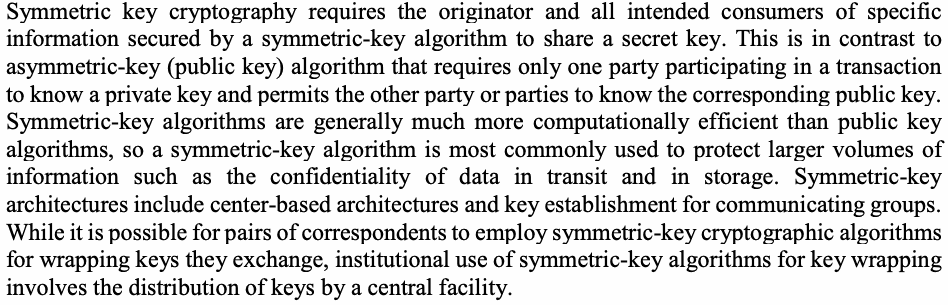
抽出したテキスト（原本と未照合・参考）
Symmetric key cryptography requires the originator and all intended consumers of specific information secured by a symmetric-key algorithm to share a secret key. This is in contrast to asymmetric-key (public key) algorithm that requires only one party participating in a transaction to know a private key and permits the other party or parties to know the corresponding public key. Symmetric-key algorithms are generally much more computationally efficient than public key algorithms, so a symmetric-key algorithm is most commonly used to protect larger volumes of information such as the confidentiality of data in transit and in storage. Symmetric-key architectures include center-based architectures and key establishment for communicating groups. While it is possible for pairs of correspondents to employ symmetric-key cryptographic algorithms for wrapping keys they exchange, institutional use of symmetric-key algorithms for key wrapping involves the distribution of keys by a central facility.抽出したテキストの訳（原本と未照合・参考）
共通鍵暗号では、共通鍵アルゴリズムで保護する特定情報の発信者とすべての正規利用者が秘密鍵を共有する必要がある。これは、取引に参加する一方の当事者だけが秘密鍵を知っていればよく、他の当事者は対応する公開鍵を知ることができる公開鍵（非対称鍵）アルゴリズムとは異なる。共通鍵アルゴリズムは一般に公開鍵アルゴリズムより計算効率が大幅に高いため、転送中および保存中のデータの機密性など、大量の情報を保護するために最もよく用いられる。共通鍵アーキテクチャには、センター方式アーキテクチャと通信グループ向け鍵確立が含まれる。通信相手同士が交換する鍵をラップするため共通鍵暗号を用いることもできるが、組織における鍵ラッピング用の共通鍵アルゴリズムは、中央施設による鍵配布を伴う。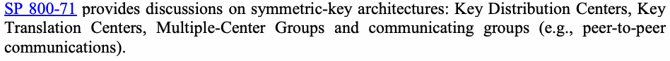
抽出したテキスト（原本と未照合・参考）
SP 800-71 provides discussions on symmetric-key architectures: Key Distribution Centers, Key Translation Centers, Multiple-Center Groups and communicating groups (e.g., peer-to-peer communications).抽出したテキストの訳（原本と未照合・参考）
SP 800-71では、鍵配布センター、鍵変換センター、複数センターグループ、通信グループ（例：ピアツーピア通信）などの共通鍵アーキテクチャについて説明している。2.3.8 Hierarchies and Meshes
2.3.8 階層構造とメッシュ構造
Multiple key-processing facilities may be organized so that subscribers from different domains may interact with each other. Two common constructions are hierarchies and meshes.
複数の鍵処理施設を組織化して、異なるドメインの加入者が相互に対話できるようにすることがある。一般的な構成は階層型とメッシュ型の2つである。
In a CKMS hierarchy, as shown in Figure 2, multiple layers of key-processing facilities may be used, each with its own service agent(s) and client nodes, if appropriate (not shown in the figure). Each layer (except the top layer) is "dominated" in some way by a higher-level key-processing facility.
CKMS階層では、図2に示すように、鍵処理施設の複数の層を使用することがあり、各層は必要に応じて独自のサービスエージェントとクライアントノードを持つ（図には示していない）。各層は（最上位層を除き）、上位の鍵処理施設によって何らかの形で「支配」される。
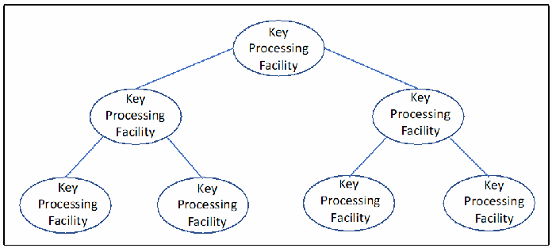
PDF原本のp.33にある図
Figure 2: CKMS Hierarchy
図2：CKMS階層構造
In a meshed CKMS architecture, as shown in Figure 3, each key-processing facility may interact with other key-processing facilities in the mesh, but no concept of dominance is implied by the architecture.
図3に示すメッシュ型CKMSアーキテクチャでは、各鍵処理施設がメッシュ内の他の鍵処理施設と相互にやり取りできるが、アーキテクチャに優劣関係の概念は含まれない。
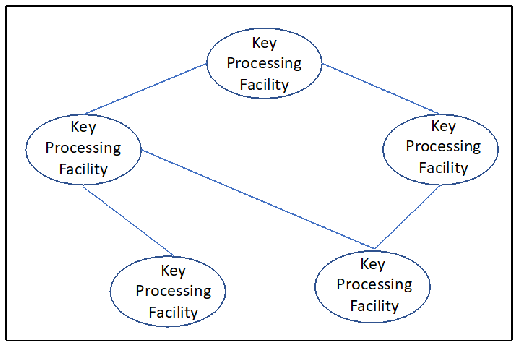
PDF原本のp.33にある図
Figure 3: CKMS Mesh Architecture
図3：CKMSメッシュアーキテクチャ
2.3.9 Centralized vs. Decentralized Infrastructures
2.3.9 集中型基盤と分散型基盤
A CKMS can be either centralized or decentralized in nature. For a PKI, the public key does not require protection, so decentralized key management can work efficiently for both large-scale and small-scale cases. The management of symmetric keys, particularly for large-scale operations, often employs a centralized structure.
CKMSは集中型にも分散型にもできる。PKIでは公開鍵を保護する必要がないため、大規模でも小規模でも分散型鍵管理を効率よく運用できる。共通鍵、特に大規模運用の管理では、集中型構造を採用することが多い。
Centralized CKMS key-management structures tend to be more structurally rigid than decentralized key-management structures, but the choice of how to establish keys, store and account for them, maintain an association of keys with the information protected under those keys, and dispose of keys that are no longer needed is a decision to be made by an organization’s security management team. Part 1 provides specific guidance regarding constraints associated with each key-management function across the life cycle of keying material.
集中型CKMSの鍵管理構造は、分散型の鍵管理構造より構造的に柔軟性に欠ける傾向がある。しかし、鍵の確立方法、保管と記録管理、鍵とその鍵で保護する情報との関連付けの維持、不要になった鍵の廃棄方法は、組織のセキュリティ管理チームが決定する。第1部では、鍵素材のライフサイクル全体にわたる各鍵管理機能の制約について具体的なガイダンスを示す。
2.3.10 Available Automated Key Management Schemes and Protocols
2.3.10 利用可能な自動鍵管理方式およびプロトコル
Examples of automated key-management systems include IPsec 19 IKE 20 and Kerberos. 21 S/MIME22 and TLS23 also include automated key-management functions. The design of key-management schemes is technically very challenging. The most frequent sources of vulnerabilities that result in an adversary defeating cryptographic mechanisms are vulnerabilities in key management (e.g., a failure to change session keys frequently or at all, protocol weaknesses, insecure storage, or insecure transport).
自動化された鍵管理システムの例には、IPsec 19 IKE 20 およびKerberos 21 がある。S/MIME22 およびTLS23 も、自動化された鍵管理機能を備えている。鍵管理方式の設計は、技術的に非常に難しい。攻撃者が暗号メカニズムを破る結果につながる脆弱性の最も多い原因は、鍵管理の脆弱性（例：セッション鍵を頻繁に変更しない、あるいはまったく変更しないこと、プロトコルの弱点、安全でない保管、または安全でない転送）である。
Some examples of IETF standards and guidelines for cryptographic key management include:
暗号鍵管理に関するIETFの標準とガイドラインの例には、次のものがある。
•RFC 4210, Internet X.509 Public Key Infrastructure Certificate Management Protocol (CMP)
•RFC 4210, Internet X.509 Public Key Infrastructure Certificate Management Protocol (CMP)
•RFC 4535, GSAKMP: Group Secure Association Key Management Protocol
•RFC 4535, GSAKMP: Group Secure Association Key Management Protocol
•RFC 4758, Cryptographic Token Key Initialization
•RFC 4758, Cryptographic Token Key Initialization
•RFC 4962, Guidance for Authentication, Authorization, and Accounting (AAA) Key Management
•RFC 4962, Guidance for Authentication, Authorization, and Accounting (AAA) Key Management
•RFC 5083, Cryptographic Message Syntax (CMS) Authenticated Enveloped-Data Content Type
•RFC 5083, Cryptographic Message Syntax (CMS) Authenticated Enveloped-Data Content Type
•RFC 5272, Certificate Management Over CMS (CMC)
•RFC 5272, Certificate Management Over CMS (CMC)
•RFC 5275, CMS Symmetric Key Management and Distribution
•RFC 5275, CMS Symmetric Key Management and Distribution
•RFC 5652, Cryptographic Message Syntax (CMS)
•RFC 5652, Cryptographic Message Syntax (CMS)
•RFC 5996, Internet Key Exchange Protocol Version 2 IKEv2)
•RFC 5996, Internet Key Exchange Protocol Version 2 IKEv2)
•RFC 6030, Portable Symmetric Key Container (PSKC)
•RFC 6030, Portable Symmetric Key Container (PSKC)
•RFC 6031, Cryptographic Message Syntax (CMS) Symmetric Key Package Content Type
•RFC 6031『暗号メッセージ構文（CMS）共通鍵パッケージ内容型』
•RFC 6063, Dynamic Symmetric Key Provisioning Protocol (DSKPP)
•RFC 6063, Dynamic Symmetric Key Provisioning Protocol (DSKPP)
•RFC 6160, Algorithms for Cryptographic Message Syntax (CMS)
•RFC 6160, Algorithms for Cryptographic Message Syntax (CMS)
•RFC 6402, Certificate Management Over CMS (CMC) Updates
•RFC 6402『CMSによる証明書管理（CMC）の更新』
2.4 General Design Requirements for CKMS
2.4 CKMSの一般的な設計要件
Regardless of the key-management structure, any CKMS design should describe how it provides cryptographic keys to the entities that will use those keys to protect sensitive information. The CKMS design documentation should specify the use of each key type, where and how keys can be generated, how they can be protected in storage and during delivery, and the types of entities to whom they can be delivered. CKMS design is the subject of SP 800-130, A Framework for Designing Cryptographic Key Management Systems. SP 800-15224 contains requirements for the design, implementation, and procurement of a CKMS for the U.S. Federal Government, but it can be used as a model for other sectors. A key-management system can be designed to provide services for a single individual (e.g., in a personal data-storage system), an organization (e.g., in a secure Virtual Private Network (VPN) for intra-office communications), or a large complex of organizations (e.g., in secure communications for the U.S. Government). A CKMS can be owned or rented. However, regardless of the design or source for the key-management system, the recommendations of Part 1 and SP 800-152 shall be followed.
鍵管理構造にかかわらず、CKMS設計では、機微情報を保護するために鍵を使用するエンティティへ暗号鍵をどのように提供するかを説明するべきである。CKMS設計文書では、各鍵種別の用途、鍵の生成場所と方法、保管中および配送中の保護方法、配布先となるエンティティの種類を指定するべきである。CKMS設計についてはSP 800-130『暗号鍵管理システム設計の枠組み』で扱う。SP 800-152 24 には米国連邦政府のCKMS設計、実装、調達要件が示されているが、他部門のモデルとしても利用できる。鍵管理システムは、個人（例：個人データ保管システム）、組織（例：オフィス内通信向けの安全な仮想プライベートネットワーク（VPN））、または大規模な組織群（例：米国政府の安全な通信）向けにサービスを提供するよう設計できる。CKMSは所有しても賃借してもよい。ただし、設計や供給元にかかわらず、第1部およびSP 800-152の勧告に従わなければならない。
2.5 Trust
2.5 信頼
Because the compromise of a cryptographic key compromises all of the information and processes protected by that key, it is essential that client nodes be able to trust that keys and/or key components come from a trusted source, and that their confidentiality (if required) and integrity have been protected both in storage and in transit. In the case of secret keys, the exposure of a key by any member of a communicating group or on any link between any pair in that group compromises all of the information that was shared by the group using that key. As a result, it is important to avoid using a key from an unauthenticated source,25 to protect all keys and key components in transit, and to protect stored keys for as long as any information protected under those keys requires protection. Cryptographic confidentiality and integrity mechanisms are most commonly used to establish trust anchors that enforce trust policies and practices. A trust anchor is an authoritative entity for which trust is assumed and not derived. For example, in a public key infrastructure (PKI), a trust anchor is an authoritative entity represented by a public key and associated data. “Trust anchor” also refers to the public key of this CA.
暗号鍵が侵害されれば、その鍵で保護されたすべての情報とプロセスも侵害されるため、クライアントノードは鍵および／または鍵コンポーネントが信頼できる供給元に由来し、保管中・転送中とも（必要な場合）機密性と完全性が保護されていることを信頼できなければならない。秘密鍵の場合、通信グループのいずれかのメンバー、またはグループ内の任意の2者間リンクで鍵が漏えいすると、その鍵を使ってグループが共有したすべての情報が侵害される。そのため、認証されていない供給元 25 の鍵の使用を避け、転送中のすべての鍵および鍵コンポーネントを保護し、鍵で保護される情報に保護が必要な限り、保存された鍵も保護することが重要である。暗号による機密性・完全性メカニズムは、信頼ポリシーと実務を適用する信頼アンカーの確立に最もよく用いられる。信頼アンカーは、信頼が導出されるのではなく前提とされる権威ある主体である。例えば公開鍵基盤（PKI）では、信頼アンカーは公開鍵と関連データで表される権威ある主体である。「信頼アンカー」は、このCAの公開鍵も指す。
2.6 Revocation and Suspension
2.6 失効と一時停止
Section 8.3.5 of Part 1 discusses the revocation of cryptographic keys. Symmetric keys are often revoked by the use of Compromised Key Lists (CKLs). Certificate Revocation Lists (CRLs) are
第1部の8.3.5節では暗号鍵の失効を説明している。共通鍵は侵害鍵リスト（CKL）を用いて失効させることが多い。証明書失効リスト（CRL）は
A key may also be suspended from use for a variety of reasons, such as an unknown status of the key or due to the key owner being temporarily unavailable (e.g., the key owner is on extended leave). In the case of a certificate suspension, the intent is to suspend the use of the public key included in the certificate (e.g., to not verify digital signatures or establish keys while the use of the certificate is suspended). This may be communicated to relying parties as an “on hold” revocation reason code in a CRL and in an Online Certificate Status Protocol (OCSP) response. The certificate may later be revoked (e.g., a compromise of the private key corresponding to the public key in the certificate was confirmed) or the certificate may be reactivated (e.g., the key has not been compromised or the owner returned to work). Section 7.3.5 of Part 1 discusses the suspended state for a key.
翻訳準備中
3 Key Management Planning
3 鍵管理計画
3.1 Background
3.1 背景
Federal government organizations are required by statutory and administrative rules and guidelines to protect the confidentiality and integrity of their sensitive information and processes. Federal agencies are required to determine a FIPS 20026 impact level (i.e., Low, Moderate or High) based on the security categories defined in FIPS 199.27 The security categories are based on the potential impact on an organization if certain events occur that jeopardize the information and information systems needed by the organization to accomplish its assigned mission, protect its assets, fulfill its legal responsibilities, maintain its day-to-day functions, and protect individuals. An organization also needs to define its security objectives for storing and/or communicating its sensitive information. These objectives may include the following:
連邦政府組織は、法令および行政規則・ガイドラインにより、機微情報とプロセスの機密性および完全性を保護することが求められる。連邦機関は、FIPS 199で定義されたセキュリティカテゴリに基づき、FIPS 200 26 の影響度（低、中、高）を決定する必要がある。27セキュリティカテゴリは、組織の任務遂行、資産保護、法的責任の履行、日常業務の維持、個人の保護に必要な情報・情報システムを危険にさらす事象が発生した場合の、組織への潜在的影響に基づく。組織は機微情報の保存および／または通信についてセキュリティ目標も定義する必要がある。目標には次のようなものがある。
•Providing confidentiality for stored and/or transmitted data,
•保存中および／または転送中のデータの機密性確保。
•Source authentication for received data,
•受信データの送信元認証。
•Integrity protection for stored/transmitted data,
•保存中／転送中データの完全性保護。
•Entity authentication, etc.
•エンティティ認証など。
If cryptography is used to satisfy the requirement to protect an organization's sensitive information and processes, developers, integrators, and managers need to ensure that each cryptographic implementation satisfies all system security, compatibility, and interoperability requirements that are associated with the system into which it is being integrated. Program managers who oversee the implementation of cryptography in federal systems are responsible for ensuring that the systems include all mechanisms, interfaces, policies, and procedures that are necessary to generate or otherwise establish, acquire, distribute, replace, account for, and protect key information that is required for system cryptographic operations in accordance with the recommendations presented in Part 1 and the policies and practices identified in this Part 2 document (SP 800-57). The development of new cryptographic systems, including CKMS, should ideally be conducted following the processes described in SP 800-160.28 However, in many cases, systems that rely on cryptographic protection are already being used. Where such systems are being augmented or otherwise modified, security planning is still required, but the SP 800-160 processes will need to be abridged or otherwise adapted because of legacy constraints. Federal government organizations must still select SP 800-53 security controls based on system design, operational characteristics, and FIPS 199 impact levels.
組織の機微情報とプロセスを保護する要件を満たすために暗号を使用する場合、開発者、統合担当者および管理者は、暗号実装が、その実装先システムに関連するシステムセキュリティ、互換性および相互運用性の要件をすべて満たすようにする必要がある。連邦システムへの暗号実装を監督するプログラム管理者は、第1部の勧告および第2部（SP 800-57）で特定するポリシー・実務に従い、システムの暗号処理に必要な鍵情報の生成またはその他の確立、取得、配布、置換、記録管理および保護に必要なすべてのメカニズム、インターフェース、ポリシー、手順をシステムに含める責任を負う。CKMSを含む新たな暗号システムの開発は、理想的にはSP 800-160 28 に記載のプロセスに従うべきである。ただし、暗号保護に依存するシステムがすでに使用されている場合も多い。こうしたシステムを拡張または変更する場合もセキュリティ計画は必要だが、レガシー制約によりSP 800-160のプロセスを短縮または適応する必要がある。連邦政府組織は、システム設計、運用特性、FIPS 199の影響度に基づき、引き続きSP 800-53のセキュリティ管理策を選択しなければならない。
3.1.1 Select SP 800-53 Controls
3.1.1 SP 800-53管理策の選択
Given both the impact levels for an organization's sensitive information that needs to be protected using cryptography and the organization’s security objectives (see Section 3.1), SP 800-53 security controls should be reviewed for applicability to the system, and either the use of applicable controls must be verified, or compensating controls that obviate the use of specific SP 800-53 controls must be documented. Note that the SP 800-53 security controls are described at a high level in many cases, and they may need to be interpreted or tailored to system characteristics and operational conditions.
暗号を使用して保護する組織の機微情報の影響度と組織のセキュリティ目標（3.1節を参照）を踏まえ、SP 800-53のセキュリティ管理策のシステムへの適用可能性を検討すべきである。適用可能な管理策が使用されていることを確認しなければならず、または特定のSP 800-53管理策の使用を不要にする代替管理策を文書化しなければならない。SP 800-53のセキュリティ管理策は多くの場合、高いレベルで記述されているため、システム特性および運用条件に合わせて解釈または調整する必要がある場合がある。
3.1.2 IT System Examination
3.1.2 ITシステムの調査
Most organizations have their sensitive information in an electronic form, and some of that information may be available online. The environment of the system on which the information resides needs to be examined to identify any CKMS components and cryptographic products that are available to provide the required cryptographic protections to that information (e.g., cryptographic applications and modules).
ほとんどの組織は機微な情報を電子形式で保有しており、その一部はオンラインで利用可能な場合がある。その情報に必要な暗号による保護を提供するために利用可能なCKMSコンポーネントと暗号製品（例：暗号アプリケーションおよびモジュール）を特定するために、情報が存在するシステムの環境を調査する必要がある。
In all cases, any cryptographic functions shall be performed using FIPS 140-validated cryptographic modules. If any required functionality is not available, the shortfall needs to be identified.
いかなる場合も、暗号機能はすべて、FIPS 140で検証された暗号モジュールを使用して実行しなければならない。必要な機能が利用できない場合は、その不足を特定する必要がある。
3.2 Key Management Planning
3.2 鍵管理計画
Using the information from Section 3.1, determine how to integrate key management. Key management is often an afterthought in the cryptographic development process (i.e., when incorporating cryptographic processes into applications and systems). As a result, cryptographic subsystems often fail to support the key management functionality and protocols that are necessary to provide adequate security. Recognition of these shortcomings often results in modifications that may impact operational efficiency more than would have been the case if key management planning began during the initial development of the system or application. All cryptographic development activities should involve key management planning and development of specifications by entities designated as responsible for the secure implementation of cryptography into an information system. Key management planning should begin during the initial conceptual/development stages of the cryptographic development lifecycle or during the initial discussion stages for the application of existing cryptographic mechanisms into information systems and networks. The specifications that result from the planning activities shall be consistent with NIST key management guidance (see Part 1 and SP 800-152).
3.1節の情報を用いて、鍵管理をどのように統合するかを決定する。鍵管理は、暗号の開発プロセス（すなわち、暗号処理をアプリケーションやシステムに組み込む際）において後回しにされることが多い。その結果、暗号サブシステムは、十分なセキュリティを提供するために必要な鍵管理機能とプロトコルをサポートしないことが多い。こうした欠点が認識されると修正が行われるが、その修正は、システムやアプリケーションの初期開発の段階で鍵管理の計画を開始していた場合よりも、運用効率に大きな影響を及ぼすことがある。暗号に関するすべての開発活動には、情報システムへの暗号の安全な実装の責任者として指定されたエンティティによる、鍵管理の計画と仕様の策定を含めるべきである。鍵管理の計画は、暗号開発ライフサイクルの初期の概念・開発段階、または既存の暗号メカニズムを情報システムとネットワークに適用するための初期の検討段階で開始すべきである。計画活動の結果として得られる仕様は、NISTの鍵管理ガイダンス（Part 1およびSP 800-152を参照）と整合していなければならない。
All cryptographic purchasing plans, development activities, and application integration plans should involve key management planning. In the case of planning for the acquisition and use of existing cryptographic devices or software, key management planning should begin during the initial discussion stages for cryptographic applications or implementation efforts. The planning should be evolutionary in nature, changing as the cryptographic application and requirements change, and should be consistent with NIST key management guidance. Key Management Plans should ensure that the key management products29 and services 30 that are proposed for the cryptographic device, application or process are provided with adequate security, and are supportable and operationally suitable in accordance with the FIPS 140 security policy for any associated cryptographic module.
暗号に関するすべての購入計画、開発活動、およびアプリケーション統合計画には、鍵管理の計画を含めるべきである。既存の暗号デバイスやソフトウェアの取得と使用を計画する場合、鍵管理の計画は、暗号アプリケーションまたは実装の取り組みの初期の検討段階で開始すべきである。計画は、暗号アプリケーションと要件の変化に応じて変化する発展的なものであるべきであり、NISTの鍵管理ガイダンスと整合しているべきである。鍵管理計画は、暗号デバイス、アプリケーション、またはプロセスのために提案される鍵管理製品29およびサービス 30 が、十分なセキュリティを備えて提供され、関連する暗号モジュールのFIPS 140セキュリティポリシーに従ってサポート可能かつ運用上適切であることを確保すべきである。
For the application of existing cryptographic products for which a Key Management Plan already exists, the existing plan should be reviewed in the context of the application's environment, and requirements should be amended as necessary. Such a review process should begin as soon as a cryptographic product is selected.
鍵管理計画がすでに存在する既存の暗号製品を適用する場合は、アプリケーションの環境に照らして既存の計画をレビューし、必要に応じて要件を修正すべきである。このようなレビュープロセスは、暗号製品が選定され次第開始すべきである。
3.2.1 Key Management Planning Process
3.2.1 鍵管理計画プロセス
Organizational Key Management Plans document the capabilities that cryptographic applications require from the organization’s CKMS(s) and are often incorporated as appendices in system security plans. The purpose of these Key Management Plans is to ensure that any lifecycle key management services are supportable by and available from the CKMS in a secure and timely manner. The planning process must account for both the availability of critical resources and for assurance requirements implied by the organization’s critical mission functions.
組織の鍵管理計画は、暗号アプリケーションが組織のCKMSに求める機能を文書化するものであり、システムセキュリティ計画の付録として組み込まれることが多い。これらの鍵管理計画の目的は、ライフサイクル全体の鍵管理サービスがCKMSによってサポート可能であり、CKMSから安全かつ適時に利用できることを確保することである。計画プロセスでは、重要な資源の可用性と、組織の重要なミッション機能から導かれる保証要件の両方を考慮しなければならない。
Key management planning involves the following steps:
鍵管理の計画は、次の手順からなる。
1.An appropriate key management architecture is selected based on the available cryptographic mechanisms (see Section 3.1.2) and objectives (see Section 3.1). Section 2.3 provides examples of architectures to be considered.
1.利用可能な暗号メカニズム（3.1.2節を参照）と目標（3.1節を参照）に基づき、適切な鍵管理アーキテクチャを選択する。検討対象となるアーキテクチャ例は2.3節に示す。
•2. A Key Management Specification is developed for each cryptographic product to be used in the system (see Section 4). When developing a Key Management Specification for a cryptographic product, the unique key management products31 and services32 needed from the CKMS to support the operation of the cryptographic product must be defined. The specification of cryptographic mechanisms, 33 including key management functions, 34 shall consider the organization’s resource limitations and procedural environment.
•2. システムで使用する暗号製品ごとに鍵管理仕様を策定する（4章を参照）。暗号製品の鍵管理仕様を策定する際には、その暗号製品の運用を支援するためにCKMSから必要となる固有の鍵管理製品31およびサービス32を定義しなければならない。鍵管理機能 34 を含む暗号メカニズム 33 の仕様では、組織の資源の制約と手続き上の環境を考慮しなければならない。
For example, an organization that lacks physical protection facilities, adequate vetting of support personnel, and the procedures and resources required for managing controlled unclassified information might find it difficult to satisfy the policies and procedures required for cryptography that are generally required for the protection of controlled unclassified information. Before either approving or rejecting specifications required for controlled unclassified information, the organization should consider the resource and operational implications of the decision.
例えば、物理的保護施設、支援要員の十分な身元調査、管理対象非機密情報を管理するために必要な手順・資源を欠く組織は、管理対象非機密情報の保護に一般に求められる暗号関連ポリシー・手順を満たすのが難しい場合がある。管理対象非機密情報に必要な仕様を承認または却下する前に、組織は資源および運用への影響を考慮するとよい。
A contrasting example is that of an organization that must exchange information that is assigned a Moderate or High FIPS 199 impact level; Moderate and High impact levels require a cryptographic module validated at FIPS 140 Level 3 or higher. Specifying a FIPS 140 Level 1 cryptographic module could adversely affect the organization’s ability to continue to engage in mission-critical processing and communications partnerships.
対照的な例として、FIPS 199の影響度が中程度（Moderate）または高（High）に割り当てられた情報を交換しなければならない組織がある。影響度が中程度および高の場合、FIPS 140レベル3以上で検証された暗号モジュールが必要である。FIPS 140レベル1の暗号モジュールを指定すると、組織がミッションクリティカルな処理と通信のパートナーシップを継続する能力に悪影響を及ぼすおそれがある。
If a Key Management Plan already exists for an organization, the Key Management Specification needs to be in conformance with the CKMS Security Policy (see Section 5). The CKMS Practice Statement should support both the CKMS Security Policy and the Key Management Specification.
組織に鍵管理計画がすでに存在する場合、鍵管理仕様はCKMSセキュリティポリシー（5章を参照）に適合している必要がある。CKMS実施規程は、CKMSセキュリティポリシーと鍵管理仕様の両方を支えるものであるべきである。
3.Based on the Key Management Plan, a CKMS Security Policy (CKMS SP) is developed that documents the decisions made in developing the Key Management Plan. A CKMS SP is a set of rules that are established to describe the goals, responsibilities, and overall requirements for the management of cryptographic keying material throughout the entire key lifecycle (see Section 5).
3.鍵管理計画に基づき、計画策定時の判断を文書化したCKMSセキュリティポリシー（CKMS SP）を作成する。CKMS SPは、鍵のライフサイクル全体にわたる暗号鍵素材の管理について、目標、責任および全般的要件を定める規則一式である（第5節を参照）。
•4. A CKMS may be operated by the organization owning the information to be protected, or may be operated by another organization (e.g., under contract). The organization operating the CKMS develops a CKMS Practice Statement (CKMS PS). A CKMS PS specifies how key management procedures and techniques are used to enforce the CKMS Security Policy (CKMS SP).
•4. CKMSは、保護対象の情報を所有する組織が運用することもあれば、別の組織が（例：契約に基づいて）運用することもある。CKMSを運用する組織は、CKMS実施規程（CKMS PS）を策定する。CKMS PSは、CKMSセキュリティポリシー（CKMS SP）を実施するために鍵管理の手順と技法をどのように使用するかを規定する。
3.2.2 Key Management Planning Information Requirements
3.2.2 鍵管理計画の情報要件
The level of key management planning detail required for cryptographic applications can be tailored, depending upon the scope and complexity of the application. If an organization’s cryptographic support requirements are limited, for example, to e-mail security for a small number of employees, extensive planning documentation is neither feasible nor cost-effective (unless such security documentation is justified by a very high level of sensitivity associated with the organization’s application). On the other hand, cryptographic security for a collection of networks that support thousands, or tens of thousands of users require the kind of extensive documentation described in Section 3.2.1 and in Appendix B. Regardless of the size and complexity of a cryptographic application, documentation of some basic key management characteristics and requirements is strongly recommended. Some basic information that needs to be documented for all applications is provided in the following subsections.
暗号アプリケーションに必要な鍵管理計画の詳細度は、アプリケーションの範囲と複雑さに応じて調整できる。例えば、組織の暗号支援要件が少数従業員の電子メールセキュリティに限られる場合、詳細な計画文書の作成は現実的でも費用対効果の高いものでもない（組織のアプリケーションが非常に機微で、そのセキュリティ文書化が正当化される場合を除く）。一方、数千人または数万人の利用者を支援するネットワーク群の暗号セキュリティには、3.2.1節および付属書Bで説明する詳細な文書が必要となる。暗号アプリケーションの規模や複雑さにかかわらず、基本的な鍵管理特性と要件を文書化することを強く推奨する。すべてのアプリケーションについて文書化が必要な基本情報を以下の小節に示す。
3.2.2.1 Key Management Products and Services Requirements
3.2.2.1 鍵管理製品およびサービスの要件
The key management planning documentation35 should describe the keying material requirements for the key management products 36 and services 37 to be provided: the types, quantities, cryptoperiod (lifetime), algorithms, metadata types and any other additional information needed
鍵管理計画の文書35には、提供する鍵管理製品 36 およびサービス 37 に関する鍵材料の要件、すなわち種類、数量、暗号期間（有効期間）、アルゴリズム、メタデータの種類、およびその他必要な追加情報を記述すべきである
(e.g., domain parameters). 38 If additional keys, certificates or tokens are required, the key management planning documentation should describe a rough order of magnitude for the quantities required. If the keys or certificates already issued (or planned to be issued) by the CKMS are adequate for the device, application or process described in the Key Management Specification, then the Key Management Specification should so state. Otherwise, any new or additional key, certificate, or token features (e.g., new certificate extensions or formats) should be described. The requirement information for key management products and services may be included in table format. The following information should be included in the key management planning documentation: 39
（例：ドメインパラメータ）。38 追加の鍵、証明書またはトークンが必要な場合、鍵管理計画文書では必要数量の概算規模を記載するとよい。CKMSがすでに発行した（または発行予定の）鍵・証明書で、鍵管理仕様に記載した装置、アプリケーションまたはプロセスに十分である場合、仕様にその旨を明記するとよい。そうでなければ、新規または追加の鍵、証明書、トークンの機能（例：新しい証明書拡張または形式）を記述するとよい。鍵管理製品・サービスの要件情報は表形式にしてもよい。鍵管理計画文書には次の情報を含めるとよい。39
•The types of key management products40 and services41;
•鍵管理製品 40 およびサービス 41 の種類。
•The quantity of key management products required for the services to be provided (e.g., the number of keys to be issued per device, application or process to be keyed);
•提供するサービスに必要な鍵管理製品の数量（例：鍵を設定する装置、アプリケーション、プロセスごとに発行する鍵の数）。
•The algorithm(s) employed for each key management product used and service provided by a device, application or process;
•装置、アプリケーションまたはプロセスが使用する各鍵管理製品および提供するサービスのアルゴリズム。
•The key information format(s) (reference existing specifications, if applicable);
•鍵情報の形式（該当する場合は既存仕様を参照）。
•The cryptoperiods to be enforced (may be a general recommendation or a recommendation specific to a service, key type, device, application, process or organization);
•適用する暗号期間（一般的な推奨でも、サービス、鍵種別、装置、アプリケーション、プロセスまたは組織に固有の推奨でもよい）。
•PKI certificate classes (as applicable);
•PKI証明書クラス（該当する場合）。
•Tokens or software modules to be used (as applicable);
•使用するトークンまたはソフトウェアモジュール（該当する場合）。
•Dates when keying material is needed (plans for the distribution of the initial keys and the frequency of replacement of the keys);
•鍵素材が必要となる日付（初期鍵配布の計画および鍵の交換頻度）。
•Provision for review or revision of replacement plans when the circumstances underlying replacement frequency change;
•交換頻度の前提となる状況が変化した場合に、交換計画を見直す、または修正するための措置。
•The projected duration of the need (for devices, applications, processes or organizations);42 and
•必要性が見込まれる期間（装置、アプリケーション、プロセスまたは組織について）。42 および
•The title or identity of the anticipated keying material manager (as applicable).
•予定する鍵素材管理者の役職名または識別情報（該当する場合）。
The format for the description of the key management products and services generally references an existing key specification. If the format of the key information is not already specified elsewhere, then the format and medium should be specified in the key management planning documentation.
鍵管理製品およびサービスの記述形式では、通常、既存の鍵仕様を参照する。鍵情報の形式が他でまだ指定されていない場合は、形式と媒体を鍵管理計画文書に明記すべきである。
38 For example, cryptographic applications using public key certificates (i.e., X.509 certificates) should describe the class of certificates as identified by the CA, and whether certificates and tokens already issued to subscribers will be used for the cryptographic application, or whether the cryptographic application will require additional certificates and tokens.
38 例えば、公開鍵証明書（X.509証明書）を用いる暗号アプリケーションでは、CAが特定する証明書クラス、および加入者に発行済みの証明書・トークンをそのアプリケーションに使用するか、追加の証明書・トークンが必要かを記述すべきである。
3.2.2.2 Changes to Key Management Product Requirements and Transition Planning
3.2.2.2 鍵管理製品要件の変更と移行計画
Over time, the cryptanalytic capabilities and processing power available for performing cryptanalysis will eventually overtake the protection afforded by the implemented cryptographic algorithms. Most often, the cryptanalytic advances require a transition from a key size currently in use to a larger key size, but they can also result in the need to move from one algorithm to another. Examples include past requirements to transition from DES,43 Triple DES44 and SHA-145 to stronger algorithms, and the postulated need to transition from logarithmic and elliptic curve algorithms (e.g., RSA,46 Diffie Hellman47 and ECDSA48) to algorithms more resistant to quantum computing. Regardless of the basis for transition and whether the transition involves a larger key size or a new algorithm, it is important to begin planning for transition as soon as possible after becoming aware of the need. Changes to either algorithm or key size most often require changes to the code and protocols, not just to configuration settings for the current code and protocols. Frequently, firmware or hardware changes are required. This always takes longer and is more complicated than expected. The transition period is usually measured in decades; during the period between the advent of a practical cryptographic attack and the completion of a transition, all information protected by the vulnerable cryptography is subject to disclosure, alteration, or both.
時間の経過とともに、暗号解読能力と暗号解読に利用可能な処理能力は、実装済み暗号アルゴリズムによる保護をいずれ上回る。多くの場合、暗号解読技術の進歩により、現在使用中の鍵長からより長い鍵長への移行が必要になるが、あるアルゴリズムから別のアルゴリズムへの移行が必要になることもある。例として、DES 43 、Triple DES 44 、SHA-1 45 からより強固なアルゴリズムへの過去の移行要件や、対数系・楕円曲線アルゴリズム（例：RSA 46 、Diffie-Hellman 47 、ECDSA 48 ）から量子計算への耐性が高いアルゴリズムへ移行する必要性が想定されていることが挙げられる。移行の根拠が何であれ、また鍵長の拡大か新アルゴリズムへの変更かを問わず、必要性を認識したらできるだけ早く移行計画を始めることが重要である。アルゴリズムまたは鍵長の変更では、現在のコードやプロトコルの設定を変えるだけでなく、コードやプロトコル自体を変更する必要が生じることが多い。ファームウェアまたはハードウェアの変更が必要になる場合も多い。こうした作業は常に予想より長く、複雑になる。移行期間は通常、数十年単位である。実用的な暗号攻撃の出現から移行完了までの間、脆弱な暗号で保護されたすべての情報は開示、改変、またはその両方の対象となる。
3.2.2.3 Key Management Products and Services Ordering
3.2.2.3 鍵管理製品およびサービスの発注
For keys distributed from a CA or other key processing center rather than keys established at client nodes using automated key establishment techniques, a description of the procedures for ordering keying material within a specified CKMS is required. Details should be included that are sufficient to permit a determination of the requirements for long-term support by the CKMS.
自動鍵確立方式を用いてクライアントノードで確立する鍵ではなく、CAまたは他の鍵処理センターから配布する鍵については、指定されたCKMS内で鍵素材を発注する手順を記述する必要がある。CKMSによる長期的な支援要件を判断できるだけの詳細を含めるとよい。
3.2.2.4 Keying Material Distribution
3.2.2.4 鍵素材の配布
For keys distributed from a CA or other key processing center rather than keys established at client nodes using automated key establishment techniques, key management planning documentation should describe the distribution method. The distribution information will normally include how the key management products are distributed (e.g., by courier or using key transport protocols), how they are protected during distribution (e.g., key wrapping) and how they are distributed (e.g., by courier or using key transport protocols), the physical form of the product (e.g., electronic, PROM,49 disk, paper, etc.) and how they are identified during the distribution process.
自動鍵確立方式を用いてクライアントノードで確立する鍵ではなく、CAまたは他の鍵処理センターから配布する鍵について、鍵管理計画文書では配布方法を記述するべきである。配布情報には通常、鍵管理製品がどのように配布されるか（例：運搬者による配送、鍵転送プロトコルの使用）、配布中にどのように保護されるか（例：鍵ラッピング）、どのように配布されるか（例：運搬者による配送、鍵転送プロトコルの使用）、製品の物理形式（例：電子形式、PROM 49 、ディスク、紙など）、および配布過程でどのように識別されるかを含める。
3.2.2.5 Keying Material Storage
3.2.2.5 鍵素材の保管
Key management planning documentation should address key information storage (e.g., the media used and the storage location, if appropriate) and the method for identifying the information during its storage life (e.g., by key name and date). The storage capacity capabilities for the key management products50 should be included.
鍵管理計画文書では、鍵情報の保管（例：使用する媒体、該当する場合は保管場所）と、保管期間中に情報を識別する方法（例：鍵名と日付）を扱うべきである。鍵管理製品 50 の保管容量の能力も含めるべきである。
3.2.2.6 Access Control
3.2.2.6 アクセス制御
Key management planning documentation should address how access to the cryptographic application will be authorized, controlled, and validated for the request, generation, handling, establishment, storage, and/or use of key management products and services. Any use of authentication mechanisms such as passwords, tokens, personal identification numbers (PINs), or biometrics shall be included (with their expiration dates, where applicable). For PKI cryptographic applications, access privileges based on roles and the use of tokens shall be described.
鍵管理計画文書では、鍵管理製品・サービスの要求、生成、取扱い、確立、保管および／または使用のため、暗号アプリケーションへのアクセスをどのように認可、制御、検証するかを扱うとよい。パスワード、トークン、個人識別番号（PIN）、生体認証などの認証機構を使用する場合は、その有効期限（該当する場合）も含めなければならない。PKI暗号アプリケーションでは、役割に基づくアクセス権限とトークンの使用を説明しなければならない。
3.2.2.7 Accounting for Keys and Certificates
3.2.2.7 鍵および証明書のアカウンティング（記録管理）
Key management planning documentation must include a description of the accounting methods used for the keys and certificates employed by the cryptographic application (i.e., the use of an inventory and audit logs). When using cryptographic functions51 that employ keys, it is imperative to maintain a record of all long-term keys52 in use. Inventory management is concerned with establishing and maintaining records of the keys and/or certificates in use; assigning and tracking their owners or sponsors53 (who/what are responsible for the keys and where they are located or how to contact them); monitoring key and certificate status (e.g., expiration dates and whether compromised), and reporting the status to the appropriate official for remedial action, when required (e.g., to replace the key and/or certificate). The use of logs to support tracking the use of key management products and services, (including the generation/establishment, storage, use and/or destruction of key information) should be described. The use of appropriate access privileges to support the control of key management products and services used by the cryptographic device, application or process should also be described in addition to the directory capabilities used to support PKI cryptographic applications, if applicable. There should be an identification of the circumstances under which human and automated tracking actions are performed and where multi-party control and split knowledge procedures are required, if applicable. Note that some of this material may, under some circumstances, be included by reference (e.g., reference to Department of Defense (DoD) Cryptographic Material System (CMS) documentation where the keying material is distributed by a DoD CKMS).
鍵管理計画文書には、暗号アプリケーションで使用する鍵および証明書の管理（アカウンティング）方法（すなわちインベントリと監査ログの使用）の記述を含めなければならない。鍵を用いる暗号機能 51 を使用する場合、使用中のすべての長期鍵 52 の記録を維持することが不可欠である。インベントリ管理では、使用中の鍵および／または証明書の記録を作成・維持し、その所有者またはスポンサー 53（誰／何が鍵の責任を負うか、その所在、連絡方法）を割り当てて追跡し、鍵と証明書の状態（例：有効期限、侵害の有無）を監視し、必要に応じて是正措置（例：鍵および／または証明書の置換）のため適切な担当者に報告する。鍵管理製品およびサービスの使用の追跡（鍵情報の生成／確立、保管、使用および／または破棄を含む）を支援するログの使用についても記述するべきである。暗号装置、アプリケーションまたはプロセスが使用する鍵管理製品・サービスの制御を支援するための適切なアクセス権限の使用についても、該当する場合はPKI暗号アプリケーションを支援するディレクトリ機能に加えて記述するべきである。人間による追跡処理と自動の追跡処理を行う状況、ならびに該当する場合は複数当事者による制御と知識分割の手順が必要となる箇所を特定するべきである。状況によっては、この情報の一部を参照により示してもよい（例：国防総省CKMSが鍵材料を配布する場合に国防総省暗号資材システム（CMS）文書を参照）。
3.2.2.8 Compromise Management and Recovery
3.2.2.8 侵害の管理と回復
Procedures for the restoration of protected communications and stored information content in the event of the compromise of a key should be described. The recovery process description should include the methods for re-keying (i.e., replacing the key and/or certificate). The methods for revoking keys should be described in detail, including the methods for issuing new certificates with new keys.
鍵が侵害された場合に、保護された通信および保存情報の内容を復旧する手順を記述すべきである。回復プロセスの説明には、鍵および／または証明書を置き換える再鍵設定方法を含めるべきである。新しい鍵を使った新証明書を発行する方法を含め、鍵の失効方法を詳細に記述すべきである。
3.2.2.9 Key Recovery
3.2.2.9 鍵回復
Key information that is in active memory or stored in normal operational storage may sometimes be lost or corrupted (e.g., from a system crash or power fluctuation); cryptographic keys used to protect archived data may be required when accessing that data (e.g., to decrypt the data). Key recovery is used to obtain currently unavailable key information by an authorized human entity.
アクティブメモリ内にある鍵情報、または通常の運用ストレージに保管されている鍵情報は、（例：システムクラッシュや電源変動によって）失われたり破損したりすることがある。また、アーカイブされたデータを保護するために使用した暗号鍵は、そのデータにアクセスする際（例：データを復号する際）に必要となることがある。鍵回復は、認可された人間のエンティティが、現在利用できない鍵情報を取得するために用いられる。
Key recovery may be possible if the key information has been backed up or archived. Key information may be recovered from backups during the key’s cryptoperiod or from archives if the information has been archived; archived keys need to be retained as long as the archived information needs to be retained.
鍵情報がバックアップまたはアーカイブされていれば、鍵回復が可能な場合がある。鍵情報は、鍵の暗号期間中であればバックアップから、情報がアーカイブされていればアーカイブから回復できる。アーカイブされた鍵は、アーカイブされた情報を保持する必要がある限り保持する必要がある。
Sections 8.2.2.1 and 8.3.1 of Part 1 list key types that may be suitable for backing up or archiving, respectively. Issues associated with key recovery and discussions about whether or not different types of cryptographic keying material need to be recoverable are provided in Appendix B of Part 1. The recovery and permissible use of a recovered key is discussed in Section 5.3.4 of Part 1 and depends on the key type, assigned use, its cryptoperiod and whether it has been compromised.
Part 1の8.2.2.1節および8.3.1節には、それぞれバックアップおよびアーカイブに適する可能性のある鍵の種類を列挙している。鍵回復に関連する問題と、さまざまな種類の暗号鍵材料を回復可能にする必要があるかどうかについての議論は、Part 1の付録Bに示している。鍵の回復と、回復した鍵の許容される使用については、Part 1の5.3.4節で論じており、鍵の種類、割り当てられた用途、暗号期間、および鍵が危殆化したかどうかによって決まる。
An assessment needs to be made regarding which key information needs to be preserved for possible recovery at a later time. The decision employing a key recovery capability should be made on a case-by-case basis. The factors involved in a decision for or against key recovery should be carefully assessed. The trade-offs are concerned with continuity of operations versus the risk of possibly exposing the key and the information it protects if control of the key is lost.
将来回復する可能性に備えてどの鍵情報を保存する必要があるかについて、評価を行う必要がある。鍵回復機能を採用するかどうかの判断は、個別に行うべきである。鍵回復の採否の判断に関わる要因は、慎重に評価すべきである。そのトレードオフは、運用の継続性と、鍵の管理が失われた場合に鍵とそれが保護する情報が露出するおそれのあるリスクとの間にある。
A key recovery process description should include a discussion of the generation, storage, and access of the long-term storage keys used for the protection of backed-up and archived key information. The process of transitioning from the current to future long-term storage keys should also be included.
鍵回復プロセスの記述には、バックアップおよびアーカイブされた鍵情報の保護に使用する長期保管用鍵の生成、保管、およびアクセスについての説明を含めるべきである。現在の長期保管用鍵から将来の長期保管用鍵へ移行するプロセスも含めるべきである。
3.2.2.10 CKMS Enhancement (optional)
3.2.2.10 CKMSの機能強化（任意）
The use of FIPS-140-validated cryptographic modules to perform cryptographic functions is required for federal agencies and highly encouraged for others. Such use may reduce some of the documentation requirements and facilitate both system integration and logistics support. It also encourages the feedback of locally specific requirements to the CKMS planning process. However, requirements may be identified that are currently not supported by the appropriate CKMS. If applicable, it would be useful to identify and address required improvements to the CKMS in order to achieve the needed functionality. This will assist in identifying requirements for current and/or planned capability increments for the CKMS. Even if a device, application or process can be fully supported by the current or planned CKMS, improvements to the CKMS should also be identified if they improve functionality or reduce workload without sacrificing security. The identified requirements can be analyzed for potential upgrades to the CKMS, based on available cost, schedule, and performance constraints.
暗号機能の実行にFIPS 140検証済み暗号モジュールを用いることは連邦機関に必須であり、その他の組織にも強く推奨される。この利用により、一部の文書化要件を減らし、システム統合とロジスティクス支援の双方を容易にできる場合がある。また、地域固有の要件をCKMS計画プロセスへフィードバックすることも促進される。一方、現在適切なCKMSが支援していない要件が特定される場合もある。該当する場合、必要な機能を実現するためCKMSに必要な改善を特定して対処すると有用である。これは、CKMSの現行および／または計画中の機能増強に関する要件特定に役立つ。装置、アプリケーションまたはプロセスが現行または計画中のCKMSで完全に支援できる場合でも、セキュリティを損なわずに機能を向上または作業負荷を軽減できるならCKMSの改善点も特定すべきである。特定した要件は、利用可能な費用、日程、性能上の制約に基づいてCKMSの潜在的なアップグレードとして分析できる。
4 Key Management Specification
4 鍵管理仕様
A Key Management Specification is the document that describes the key management products54 that may be required to operate a cryptographic device55 or application. Where applicable, the Key Management Specification also describes key-management components56 that are provided by a cryptographic device. The Key Management Specification documents the capabilities that the cryptographic application requires from key sources (e.g., the CKMS). Examples are described in Appendix A to this Recommendation. Key Management Specifications are generally produced by developers or (where developers have failed to provide adequate capabilities) by integrators.57
鍵管理仕様は、暗号デバイス55またはアプリケーションの運用に必要となる可能性のある鍵管理製品54を記述する文書である。該当する場合、鍵管理仕様には、暗号デバイスが提供する鍵管理コンポーネント56も記述する。鍵管理仕様は、暗号アプリケーションが鍵の供給源（例：CKMS）に求める機能を文書化する。例は本推奨事項の付録Aに記載している。鍵管理仕様は、一般に開発者が作成するか、（開発者が十分な機能を提供していない場合は）インテグレータが作成する。57
Organizations shall select cryptographic devices and applications with cryptographic functions,58 key management products59 and key management services60 that conform to NIST standards to the maximum extent possible, and new cryptographic application development efforts shall comply with NIST key management recommendations. Accordingly, NIST criteria for the security, accuracy, and utility of key management products in electronic and physical forms shall be met (e.g., see FIPS 140, SP 800-53, and Part 1). The methods used in the design, evaluation, programming, generation, production, establishment, quality assurance, and inspection procedures for key management products and services should be structured to satisfy such criteria.
組織は、可能な限りNISTの標準に適合する暗号機能58、鍵管理製品59、および鍵管理サービス60を備えた暗号デバイスとアプリケーションを選定しなければならず、新たな暗号アプリケーションの開発の取り組みはNISTの鍵管理推奨事項に従わなければならない。したがって、電子形式および物理形式の鍵管理製品のセキュリティ、正確性、および有用性に関するNISTの基準を満たさなければならない（例：FIPS 140、SP 800-53、およびPart 1を参照）。鍵管理製品とサービスの設計、評価、プログラミング、生成、製造、確立、品質保証、および検査の手順で用いる方法は、こうした基準を満たすように構成すべきである。
For cryptographic development efforts, a Cryptographic Key Management Specification and acquisition planning process should begin as soon as the candidate algorithm(s) and, if appropriate, keying material media and format have been identified. Key management considerations may affect algorithm choice, due to operational efficiency considerations for the anticipated applications. When using existing cryptographic mechanisms to provide a cryptographic service61 for which no Key Management Specification exists, the planning and specification processes should begin during device and source selection, and continue through acquisition and installation.
暗号開発の取り組みでは、候補となるアルゴリズムと、該当する場合は鍵材料の媒体および形式が特定され次第、暗号鍵管理仕様と取得計画のプロセスを開始すべきである。想定されるアプリケーションの運用効率を考慮するため、鍵管理上の考慮事項がアルゴリズムの選択に影響を及ぼすことがある。鍵管理仕様が存在しない暗号サービス61を提供するために既存の暗号メカニズムを使用する場合、計画と仕様策定のプロセスは、デバイスと供給元の選定時に開始し、取得と導入を通じて継続すべきである。
Where the criteria for current or anticipated security, accuracy, and utility can be satisfied with any of the organization’s existing suite of key management products and services, one of those products and services should be considered. Where the application of current key management products and services results in reduced security, accuracy, utility, or added cost to a cryptographic application, then an organization may initiate efforts to develop and implement other key management product and service types, variations, and, as necessary, production processes.
現在または将来想定されるセキュリティ、正確性、および有用性の基準を、組織の既存の鍵管理製品・サービス群のいずれかで満たせる場合は、それらの製品・サービスのいずれかを検討すべきである。現在の鍵管理製品・サービスを適用すると、暗号アプリケーションのセキュリティ、正確性、もしくは有用性が低下する、またはコストが増加する場合、組織は、他の種類や変種の鍵管理製品・サービス、および必要に応じてその製造プロセスを開発し実装する取り組みを開始してもよい。
However, such efforts should conform as closely as possible to NIST's established key management recommendations.
翻訳準備中
Processes for purchasing cryptographic products62 and services63 should include plans and provisions for the acquisition of keying material from trusted sources, secure paths for the transport of keying material, and/or FIPS 140-compliant automated key establishment mechanisms64 (see SP 800-56A, SP 800-56B and SP 800-71). Key management requirements shall be included in service agreements or contracts associated with cryptographically protected services.
翻訳準備中
For any cryptographic device or application employed by the federal government, there should be a specification of the keying material that the device or application requires, an identification of whether the keying material is internally or externally generated, a specification of keying material input/output interfaces, and a description of interfaces to any required validation process. Development of the specification should be initiated before any cryptographic procurement is initiated. Algorithms, key lengths, cryptoperiods, key sources, input/output interfaces (where applicable) and keying material access and handling requirements should also be specified. For devices using cryptographic modules that are validated under FIPS 140, most of these requirements are specified in the security policy posted with the validation information for each module.65 Note that all cryptographic modules used by federal agencies shall be validated in accordance with FIPS 140. These specifications are required by system developers as well as by the managers of systems into which cryptographic mechanisms66 are integrated. They are also required by program managers who are responsible for the security of system implementations.
翻訳準備中
The types of key management components67 that are required for a specific cryptographic device or application and/or for suites of devices or applications used by organizations shall be conformant to NIST standards and guidelines, and new cryptographic device-development efforts shall comply with NIST key-management recommendations. Accordingly, NIST criteria for the security, accuracy, and use of key management products in electronic and physical forms shall be met. Where the criteria for security, accuracy, and usability can be satisfied with standard key management components (e.g., PKI for public key systems), the use of those compliant components is encouraged. Appendix C is a checklist that may be used to guide Key Management Specification activities.
翻訳準備中
4.1 Key Management Specification Content
4.1 鍵管理仕様の内容
The level of detail required for each element of a Key Management Specification can be tailored, depending upon the environment and complexity of the device or application for which a Key Management Specification is being written. A Key Management Specification shall contain a title page that includes the device identifier or application type, and the developer’s or integrator’s identifier. Unless the information is tightly controlled, a Key Management Specification should not contain proprietary or sensitive information.
鍵管理仕様の各要素に必要な詳細度は、対象装置またはアプリケーションの環境と複雑さに応じて調整できる。鍵管理仕様には、装置識別子またはアプリケーション種別、および開発者または統合担当者の識別情報を含む表紙を設けなければならない。情報が厳重に管理されている場合を除き、鍵管理仕様に専有情報または機微情報を含めるべきではない。
4.2 Cryptographic Application
4.2 暗号アプリケーション
A description of the cryptographic application will provide a basis for the development of the rest of a Key Management Specification. Cryptographic application coverage should consist of a brief description of the cryptographic application or device. This includes the purpose or use of the cryptographic application or device, and whether it is a new cryptographic application or device, a modification of an existing cryptographic application or device, or an existing cryptographic application or device for which no Key Management Specification currently exists. A brief description of the cryptographic services68 that the cryptographic application or device provides should be included. Information concerning long-term and potential interim key management support for the cryptographic application or device should be provided.
暗号アプリケーションの説明は、鍵管理仕様の残りの部分を作成する基礎となる。暗号アプリケーションの説明には、アプリケーションまたは装置の簡潔な説明を含めるべきである。暗号アプリケーション／装置の目的または用途、および新規か、既存のものの変更か、鍵管理仕様がまだ存在しない既存のものかを記載する。暗号アプリケーション／装置が提供する暗号サービス 68 の概要も含めるべきである。長期的および暫定的に想定される鍵管理支援に関する情報を示すべきである。
Cryptographic applications may employ symmetric key cryptography, public key cryptography, or both. Examples of symmetric key cryptographic applications include full disk encryption for confidentiality, and the use of message authentication codes for integrity protection. Examples of public key cryptographic applications include 1) integrity protection for electronic mail, internet address information, and internet routing information using digital signatures and 2) asymmetric key transport to protect the confidentiality of symmetric keys in transit (encrypting the symmetric keys using a public key). Examples of applications that use both symmetric and asymmetric cryptography are Transport Layer Security (TLS) (using encryption to protect the transfer of data and information) and the encryption of electronic mail (e.g., SMIMEA69), where symmetric key cryptography is used to protect the confidentiality of the information, and public key cryptography is used to protect the confidentiality of the symmetric keys.
暗号アプリケーションでは、共通鍵暗号、公開鍵暗号、またはその両方を使用できる。共通鍵暗号アプリケーションの例は、機密性確保のためのディスク全体の暗号化、完全性保護のためのメッセージ認証コードの使用である。公開鍵暗号アプリケーションの例は、1) デジタル署名を用いた電子メール、インターネットアドレス情報、インターネット経路情報の完全性保護、2) 転送中の共通鍵の機密性を保護するための非対称鍵転送（公開鍵による共通鍵の暗号化）である。共通鍵暗号と公開鍵暗号の両方を使用するアプリケーションの例は、トランスポート層セキュリティ（TLS）（データおよび情報の転送を暗号化で保護）や電子メールの暗号化（例：SMIMEA 69 ）である。後者では、共通鍵暗号で情報の機密性を保護し、公開鍵暗号で共通鍵の機密性を保護する。
4.3 Communications Environment
4.3 通信環境
The Key Management Specification shall provide a brief description of the communications environment in which the cryptographic device or application is designed to operate. Some examples of communications environments include:
鍵管理仕様には、暗号装置またはアプリケーションが動作するよう設計された通信環境の概要を記載しなければならない。通信環境の例：
1.Data networks (e.g., intranet, Internet, VPN);
1.データネットワーク（例：イントラネット、インターネット、VPN）。
2.Wired communications (e.g., landline, dedicated or shared switching resources); and
2.有線通信（例：固定回線、専用または共有の交換設備）。
3.Wireless communications (e.g., cell phones).
3.無線通信（例：携帯電話）。
The environment description shall include any anticipated access controls on communications resources, data sensitivity, privacy issues, etc.
環境の説明には、通信資源に対して想定されるアクセス制御、データの機微性、プライバシー上の問題などを含めなければならない。
4.4 Key Management Metadata Requirements
4.4 鍵管理メタデータ要件
A key's metadata is the information associated with a particular key that is used by a CKMS to manage the key. SP 800-152 states that the system designer should select the metadata that is appropriate for a trusted association with a key based upon a number of factors, including the key type, the key lifecycle states, and the security policy of the CKMS. The metadata elements cited in SP 800-152 specify a key’s important characteristics, its acceptable uses, and other information that is related to the key. Metadata elements relevant to the management and use of a key must be correctly associated with a key and consulted whenever a key is stored, retrieved, loaded into a cryptographic module, used to protect data (e.g., including other keys), exchanged with peer entities authorized to use the key, and when assuring that a key is correctly protected.
鍵のメタデータとは、CKMSが鍵を管理するために使用する、特定の鍵に関連付けられた情報である。SP 800-152は、システム設計者が、鍵の種類、鍵のライフサイクル状態、CKMSのセキュリティポリシーなどの複数の要因に基づいて、鍵との信頼できる関連付けに適したメタデータを選択すべきであると述べている。SP 800-152で挙げられているメタデータ要素は、鍵の重要な特性、許容される用途、および鍵に関連するその他の情報を規定する。鍵の管理と使用に関連するメタデータ要素は、鍵と正しく関連付けなければならず、鍵の保管、取得、暗号モジュールへのロード、データ（例：他の鍵を含む）の保護への使用、鍵の使用を認可されたピアエンティティとの交換の際、および鍵が正しく保護されていることを保証する際には、常に参照しなければならない。
For example, asymmetric cryptographic applications using public-key certificates (e.g., X.509 certificates) should describe the types of certificates in the metadata. Some examples of metadata elements from Section 6.2.1 of SP 800-152 include:
たとえば、公開鍵証明書（例：X.509証明書）を使用する非対称暗号アプリケーションでは、メタデータに証明書の種類を記述すべきである。SP 800-152の6.2.1節に示されたメタデータ要素の例には、次のものがある。
1.The different keying material classes or types required, supported, and/or generated (e.g., for PKI: signature keys, key establishment keys, and authentication keys; for symmetric keys: key wrapping keys, key derivation keys and data encryption keys);
1.必要、支援および／または生成される鍵素材のクラスまたは種別（例：PKIでは署名鍵、鍵確立鍵、認証鍵；共通鍵では鍵ラッピング鍵、鍵導出鍵、データ暗号化鍵）。
•2. The key management algorithm(s) (the applicable approved algorithms, e.g., FF DH70 and/or RSA71);
•2. 鍵管理アルゴリズム（該当する承認済みアルゴリズム。例：FF DH70および／またはRSA71）
3.The keying material format(s) (reference any existing key specification, if known);
3.鍵素材の形式（既知の場合、既存の鍵仕様を参照）。
4.The set of acceptable certificate policies (if applicable); and
4.許容する証明書ポリシー一式（該当する場合）。
5.Any tokens to be used for entity authentication (i.e., for access authorization or key entry).
5.主体認証（すなわちアクセス認可または鍵入力）に用いるトークン。
The description of the keying material format (item 3 above) may reference a key specification for an existing cryptographic device. If the format of the keying material is not already specified, then the format and medium should be specified in any Key Management Specification. See Section 6.2.1 of SP 800-152 for a list of metadata elements to be considered for a CKMS.
鍵素材形式の説明（上記項目3）は、既存暗号装置の鍵仕様を参照してもよい。鍵素材の形式が未指定の場合、形式と媒体をいずれの鍵管理仕様においても指定すべきである。CKMSで検討すべきメタデータ要素の一覧はSP 800-152の6.2.1節を参照すること。
4.5 Keying Material Generation
4.5 鍵素材の生成
A Key Management Specification should include a description of the requirements for the establishment of keying material for the cryptographic device or application for which the Key Management Specification is written. If the cryptographic device or application does not provide key establishment capabilities, an identification of the keying material and source or method that will be required from external sources should be provided.
鍵管理仕様には、対象となる暗号装置／アプリケーションの鍵素材確立要件を記述するとよい。暗号装置／アプリケーションが鍵確立機能を提供しない場合、外部供給元から必要となる鍵素材と、その供給元または取得方法を特定するとよい。
4.6 Keying Material Distribution
4.6 鍵素材の配布
When a device or application supports the automated establishment of keying material, a Key Management Specification should include a description of the distribution method(s) employed for the initial keying material used by the device or application. The distribution plan may describe how the keying material is distributed (e.g., manual, key loader device, etc.) and the form used (plaintext, wrapped, as key components with dual control and split knowledge required, etc.) In the case of a dependence on manual distribution, the dependence and any handling assumptions regarding keying material should be stated.
装置またはアプリケーションが鍵素材の自動確立を支援する場合、鍵管理仕様には、その装置またはアプリケーションが使用する初期鍵素材の配布方法の記述を含めるべきである。配布計画には、鍵素材の配布方法（例：手動、鍵ローダー装置など）と使用する形式（平文、ラップ済み、二者制御と知識分割を必要とする鍵コンポーネントなど）を記載してもよい。手動配布に依存する場合、その依存関係と鍵素材の取扱いに関する前提を明記すべきである。
4.7 Key Information Storage
4.7 鍵情報の保管
A Key Management Specification should address how the cryptographic device or application for which the Key Management Specification is being written stores and protects key information72 including how long it is to be stored. The integrity of all key information shall be protected; the confidentiality of secret and private keys and secret metadata shall be protected. When stored outside a cryptographic module, the method of protection depends on the impact level associated with the data protected by a key (see SP 800-152, Sections 6.1.2 and 6.2.1):
鍵管理仕様では、対象の暗号装置またはアプリケーションが鍵情報 72 をどのように保管・保護するか（保管期間を含む）を扱うべきである。すべての鍵情報の完全性を保護しなければならず、秘密鍵、プライベート鍵および秘密メタデータの機密性を保護しなければならない。暗号モジュール外に保管する場合、保護方法は鍵で保護するデータの影響度によって異なる（SP 800-152の6.1.2節および6.2.1節を参照）。
•For High and Moderate impact-level data, the confidentiality and integrity of the key information shall be cryptographically protected.
•高または中の影響度のデータでは、鍵情報の機密性と完全性を暗号学的に保護しなければならない。
•For Low impact-level data, the confidentiality and integrity of the key information should73 be cryptographically protected.
•低影響度のデータでは、鍵情報の機密性と完全性を暗号学的に保護するべきである。73
When cryptographic protection is used, the security strength of the protection shall be selected in accordance with the impact level associated with the data protected by the key (see Section 2.2 of SP 800-152). The generation and management of the storage-protection keys shall be described, including the process of transitioning from the current to future storage keys. A Key Management Specification should also indicate how the key information is identified during its storage life (e.g., using a Distinguished Name or key identifier). The storage capacity requirements for storing the key information should be included.
暗号保護を用いる場合、その保護のセキュリティ強度は、鍵が保護するデータの影響度に従って選択しなければならない（SP 800-152の2.2節を参照）。保管保護鍵の生成・管理について、現行鍵から将来の保管鍵へ移行するプロセスも含めて記述しなければならない。鍵情報を保管期間中にどう識別するか（例：識別名または鍵識別子）も鍵管理仕様に示すとよい。鍵情報の保管容量要件も含めるとよい。
4.8 Access Control
4.8 アクセス制御
A Key Management Specification should address how access to the cryptographic devices or applications are to be authorized, controlled, and validated to request, generate, handle, distribute, store, use and/or destroy keying material. Any use of authenticators, such as passwords, personal identification numbers (PINs) and hardware tokens, should be included. For example, in PKI cryptographic applications, role and identity-based authentication and authorization, and the use of any tokens should be described.
鍵管理仕様では、鍵素材を要求、生成、取扱い、配布、保管、使用および／または破棄するため、暗号装置またはアプリケーションへのアクセスをどのように認可、制御、検証するかを扱うとよい。パスワード、個人識別番号（PIN）、ハードウェアトークンなどの認証器を使用する場合も含めるとよい。例えばPKI暗号アプリケーションでは、役割・識別情報に基づく認証と認可、およびトークンの使用を説明するとよい。
4.9 Accounting and Auditing
4.9 アカウンティング（記録管理）と監査
When using cryptographic mechanisms employing keys, it is imperative to keep track of all non-ephemeral keys authorized for use by their owner entities (e.g., in a key or certificate inventory and in audit logs). In the case of symmetric keys, this includes the keys used for interaction between entities within an organization and the keys used between organizational entities and entities external to the organization. For asymmetric key pairs, this includes key pairs owned by organizational entities − those entities authorized to use the private key of the key pair and any certificates containing the public key of each key pair.
鍵を用いる暗号メカニズムを使用する場合、所有者であるエンティティによる使用が認可されたすべての非エフェメラル鍵を（例：鍵または証明書のインベントリおよび監査ログにおいて）追跡することが不可欠である。対称鍵の場合、これには組織内のエンティティ間の対話に使用する鍵と、組織のエンティティと組織外部のエンティティとの間で使用する鍵が含まれる。非対称鍵ペアの場合、これには組織のエンティティ（鍵ペアの秘密鍵の使用を認可されたエンティティ）が所有する鍵ペアと、各鍵ペアの公開鍵を含む証明書が含まれる。
Any Key Management Specification should describe any device or application support for the accounting of keying material and any support for or outputs to logs used to support the tracking of keying material generation, distribution, storage, use and/or destruction. The use of appropriate authorization mechanisms to support the control of keying material that is used by the cryptographic application should also be described. All Key Management Specifications shall identify where human and automated keying material inventory management74 and audit logging are required and, if applicable, where multiple parties are required to perform some operation.
鍵管理仕様では、鍵材料の記帳（accounting）に対するデバイスまたはアプリケーションのサポート、および鍵材料の生成、配布、保管、使用および/または破棄の追跡を支援するために用いるログへのサポートまたは出力について記述するべきである。暗号アプリケーションが使用する鍵材料の管理を支援するための適切な認可メカニズムの使用についても記述するべきである。すべての鍵管理仕様は、人手および自動による鍵材料の在庫管理74と監査ログ記録が必要となる箇所、および該当する場合には、ある操作の実行に複数の当事者が必要となる箇所を特定しなければならない。
A list of key types is provided in Section 5.1.1 of SP 800-57, Part 1. Examples of metadata elements to consider for association with keys are listed in SP 800-152 and Section 6.2.3 of Part 1. Metadata elements may be explicitly recorded with each key or certificate, may be explicitly recorded for groups of keys or certificates, may be implicitly known or a combination thereof.
鍵の種類の一覧は SP 800-57 Part 1 の5.1.1節に示されている。鍵に関連付けることを検討すべきメタデータ要素の例は、SP 800-152 および Part 1 の6.2.3節に挙げられている。メタデータ要素は、個々の鍵または証明書ごとに明示的に記録してもよいし、鍵または証明書のグループ単位で明示的に記録してもよいし、暗黙的に既知であってもよく、これらを組み合わせてもよい。
A long-term key75 shall be inventoried along with any information associated with it (e.g., domain parameters and metadata).
長期鍵75は、それに関連付けられたあらゆる情報（例：ドメインパラメータおよびメタデータ）とともに在庫管理しなければならない。
The generation, distribution, storage, use and/or destruction of all keys shall be logged.
すべての鍵の生成、配布、保管、使用および/または破棄は、ログに記録しなければならない。
Some particularly important metadata elements that need to be associated with inventoried keys and certificates are the following. Note that in the case of certificates, some of the information may be available in the certificate itself.
在庫管理する鍵および証明書に関連付ける必要がある特に重要なメタデータ要素は、以下のとおりである。証明書の場合、情報の一部は証明書自体から入手できることがある点に注意されたい。
1.Common elements that shall be specified as required by all Key Management Specifications include:
1.すべての鍵管理仕様で必須として指定しなければならない共通要素：
•Type of key − e.g., private signature key, symmetric data encryption key
•鍵の種類 − 例：署名用私有鍵、データ暗号化用対称鍵
•Key format − e.g., TLS/SSL server certificate, TLS/SSL client certificate, code signing certificate, email certificate, ASN.1, and Tag-Length-Value (TLV) encoding for symmetric keys
•鍵の形式 − 例：TLS/SSL サーバ証明書、TLS/SSL クライアント証明書、コード署名証明書、電子メール証明書、ASN.1、および対称鍵のための Tag-Length-Value（TLV）符号化
•Key length − e.g., 2048 bits, 256 bits
•鍵長 − 例：2048ビット、256ビット
•Algorithm with which the key is used − e.g., AES, ECDSA, RSA
•鍵を使用するアルゴリズム − 例：AES、ECDSA、RSA
•Schemes or modes of operation − e.g., digital signatures, DH, GCM, etc.
•方式または動作モード − 例：デジタル署名、DH、GCM など
•Key source:
•鍵の供給元：
•A description of where the key was generated and by what/whom
•鍵がどこで、何によって/誰によって生成されたかの記述
•How the key was generated and distributed (e.g., using a DH key agreement scheme, generated by an RBG and transported using RSA OAEP)
•鍵がどのように生成され配布されたか（例：DH 鍵合意方式を用いた、RBG によって生成され RSA OAEP を用いて転送された）
•The identifier of any keys used during the generation or distribution process (e.g., pointers to other keys in the inventory or database)
•生成または配布の過程で使用された鍵の識別子（例：在庫またはデータベース内の他の鍵へのポインタ）
•Key owner(s)/authorized users/subject name:
•鍵所有者／認可利用者／主体名：
•Entity identifier(s)
•エンティティ識別子
•Contact information for the owner or entity sponsor (e.g., email, phone)
•所有者またはエンティティのスポンサーの連絡先情報（例：電子メール、電話）
•Application type(s) for the use of the key − e.g., email, file encryption, code signing
•鍵を使用するアプリケーションの種類 − 例：電子メール、ファイル暗号化、コード署名
•Installed location information (as appropriate)
•インストール場所の情報（該当する場合）。
•Address
•アドレス
•Type of device on which it is installed
•鍵がインストールされているデバイスの種類
•Location on device (e.g., ID, file path, account, etc.)
•デバイス上の場所（例：ID、ファイルパス、アカウントなど）
•Status − e.g., OK to use, compromised (with date), revoked (with date and reason), suspended (with start date and projected suspension end date), destroyed (with date), etc.
•ステータス − 例：使用可、危殆化（日付付き）、失効（日付と理由付き）、一時停止（開始日と停止終了予定日付き）、破棄（日付付き）など
2.Common elements that should be specified as required by all Key Management Specifications include:
2.すべての鍵管理仕様で必須として指定すべき共通要素：
•Key identifier
•鍵識別子。
•Business application name/id76
•業務アプリケーションの名称/ID76
•Applicable regulations and policies77
•適用される規制およびポリシー77
•Authorities responsible for approving systems using cryptography for activation and operation.
•暗号を使用するシステムの有効化および運用を承認する責任当局。
•Storage protection when outside a cryptographic module:78
•暗号モジュール外にある場合の保管時の保護：78
•The algorithm(s) used to protect the integrity of the keying material and metadata and a pointer to the keying material used for the integrity protection
•鍵材料およびメタデータの完全性保護に使用するアルゴリズム、ならびに完全性保護に使用する鍵材料へのポインタ
•If the key type is a secret or private key, the algorithm used to wrap the key and a pointer to the keying material used for key wrapping
•鍵の種類が秘密鍵または私有鍵である場合、鍵のラッピングに使用するアルゴリズム、および鍵のラッピングに使用する鍵材料へのポインタ
3.Elements that should be included as being required for symmetric key systems:
3.共通鍵システムで必須として含めるとよい要素：
•Cryptoperiods − by date or by usage:
•暗号期間 − 日付による、または使用回数による：
•By date − start and end dates for the originator-usage period and recipient-usage period79
•日付による − 発信者使用期間および受信者使用期間の開始日と終了日79
•By usage − current count and the usage-count limit for the originator-usage period
•使用回数による − 発信者使用期間における現在の使用回数と使用回数の上限
4.In the case of systems using asymmetric keys and PKI certificates (e.g., Transport Layer Security certificates), the following metadata elements shall be specified by all Key Management Specifications as being required:
4.非対称鍵とPKI証明書（例：TLS証明書）を使用するシステムでは、すべての鍵管理仕様で次のメタデータ要素を必須として指定しなければならない。
•Certificate issuer − e.g., Issuer distinguished name
•証明書発行者 − 例：発行者の識別名（distinguished name）
•Signature algorithm used to sign the certificate
•証明書署名に用いた署名アルゴリズム。
•Subject type − indicating whether the certificate is for a CA or end entity
•サブジェクトの種類 − 証明書が CA 向けかエンドエンティティ向けかを示す
•Cryptoperiod80 − start and end dates
•暗号期間80 − 開始日と終了日
•The corresponding key81 − a pointer to the corresponding key
•対応する鍵81 − 対応する鍵へのポインタ
Also, in the case of asymmetric systems using PKI certificates (e.g., Transport Layer Security certificates), the following elements should be specified in Key Management Specifications as being required:
また、PKI証明書（例：TLS証明書）を用いる非対称システムでは、次の要素も鍵管理仕様に必須として指定するとよい。
•Certificate serial number
•証明書のシリアル番号
•Authority Key Identifier
•Authority Key Identifier（認証局鍵識別子）
•Certificate Extensions
•証明書の拡張
•Certificate validity period − start and expiration dates
•証明書の有効期間 − 開始日と有効期限日
5.In some other applications of public key cryptography (e.g., SSH), the following information shall be specified in Key Management Specifications as being required:
5.公開鍵暗号のその他のアプリケーション（例：SSH）では、鍵管理仕様で次の情報を必須として指定しなければならない。
•Key subtype − e.g., Host private key, known host key, user private key, authorized key)82
•鍵のサブタイプ − 例：ホスト私有鍵、既知ホスト鍵、ユーザ私有鍵、認可済み鍵）82
•Account (to which the key is associated)
•アカウント（鍵が関連付けられているもの）
•Authorized key options (e.g., cert-authority, no-agent-forwarding, no-pty)83
•認可鍵オプション（例：cert-authority、no-agent-forwarding、no-pty）。83
4.10 Recovery from Compromise, Corruption, or Loss of Keying Material
4.10 鍵素材の侵害、破損または喪失からの回復
A Key Management Specification should address any support for the restoration of protected communications in the event of the compromise, corruption, or loss of the keying material used by the cryptographic device or application. The recovery process description should include the methods for replacing keys and/or certificates with new keys. The methods for revocation and compromise notification (e.g., using RKNs) should be provided (e.g., the details for using Certificate Revocation Lists (CRLs) and Compromised Key Lists (CKLs)). When PKI certificates are used, a description of how certificates will be reissued with new public keys and replaced within the cryptographic application should also be included. General compromise-recovery guidance is provided in Section 9.3.4 of Part 1.
鍵素材の侵害、破損または喪失が発生した場合に、保護通信を復旧する支援について鍵管理仕様で扱うとよい。回復プロセスの説明には、新しい鍵による鍵および／または証明書の置換方法を含めるとよい。RKNなどを用いる失効および侵害通知の方法（例：証明書失効リスト（CRL）および侵害鍵リスト（CKL）の利用方法の詳細）を示すとよい。PKI証明書を使用する場合、新しい公開鍵で証明書を再発行し、暗号アプリケーション内で置換する方法も記述するとよい。侵害回復の一般的ガイダンスは第1部の9.3.4節に示す。
4.11 Key Recovery
4.11 鍵回復
Any Key Management Specification should include a description of product support or system functions for effecting key recovery. Key recovery addresses how unavailable keys can be recovered (e.g., encryption keys) from key backups or archives. In the key-recovery process description, system developers should include a discussion of the generation, storage, and access to any keys used to protect the integrity or confidentiality of key information. Stored keys are expected to be protected as discussed in Section 5.7. General contingency planning guidance is provided in Section 9.3 of Part 1. Key recovery is discussed in Appendix B of Part 1.
鍵管理仕様には、鍵回復を実現する製品支援またはシステム機能の説明を含めるとよい。鍵回復では、利用できない鍵（例：暗号化鍵）を鍵バックアップまたはアーカイブからどのように回復するかを扱う。鍵回復プロセスの説明では、鍵情報の完全性または機密性を保護するために使用する鍵の生成、保管、アクセスについて記載するとよい。保管鍵は5.7節の説明に従って保護されることが期待される。緊急時計画の一般的ガイダンスは第1部の9.3節に示す。鍵回復は第1部の付属書Bで説明する。
5 CKMS Security Policy
5 CKMS セキュリティポリシー
An organization often creates and supports layered security policies, with high-level policies addressing the management of its information and lower-level policies specifying the rules for protecting the information.
組織は、情報管理を扱う上位レベルのポリシーと、情報保護規則を定める下位レベルのポリシーから成る多層のセキュリティポリシーを作成し、運用することが多い。
•An organization’s Information Management Policy governs the collection, processing, and use of an organization’s information and should specify, at a high level, what information is to be collected or created, and how it is to be managed.
•組織の情報管理ポリシーは、情報の収集、処理、利用を統制し、どの情報を収集または作成し、どう管理するかを上位レベルで指定するとよい。
•The organization’s Information Security Policy is created to support and enforce portions of the organization’s Information Management Policy by specifying in more detail what information is to be protected from anticipated threats. and how that protection is to be attained. A Federal organization may have different Information Security Policies covering different applications of categories of information.
•組織の情報セキュリティポリシーは、想定される脅威からどの情報をどのように保護するかをより詳細に指定し、情報管理ポリシーの一部を支援・実施するために作成される。連邦組織では、異なるアプリケーションまたは情報カテゴリを対象とする複数の情報セキュリティポリシーを設ける場合がある。
A CKMS Security Policy84 (SP) is a high-level document that describes the authorization and protection objectives and constraints that apply to the generation, establishment, accounting, storage, use, and destruction of cryptographic keying material. It is intended to support an Information Security Policy by protecting the cryptographic keys and metadata used by a CKMS and to enforce restrictions associated with their use. A CKMS SP includes an identification of all cryptographic mechanisms and cryptographic protocols that can be used by the CKMS. A CKMS SP85 also includes a set of rules that are established to describe the goals, responsibilities, and overall requirements for the management of cryptographic keying material throughout the entire key lifecycle, including when they are operational, stored, transported and used. As stated in SP 800-152, a CKMS SP should include the following:
CKMS セキュリティポリシー84（SP）は、暗号鍵情報の生成、確立、記録管理、保管、使用、および破棄に適用される認可と保護の目的および制約を記述する上位文書である。CKMS が使用する暗号鍵とメタデータを保護し、その使用に関する制限を強制することによって、情報セキュリティポリシーを支援することを意図している。CKMS SP には、CKMS が使用できるすべての暗号メカニズムと暗号プロトコルの特定が含まれる。CKMS SP85 にはまた、鍵情報が運用中、保管中、輸送中、使用中であるときを含め、鍵のライフサイクル全体を通じた暗号鍵情報の管理の目標、責任、および全体的な要件を記述するために定められた一連の規則も含まれる。SP 800-152 に述べられているとおり、CKMS SP には以下を含めるべきである。
•a) The names of the organization(s) adopting the policy;
•a) ポリシーを採用する組織の名称
•b) Who (person, title or role) is authorized to approve/modify the policy;
•b) ポリシーの承認または変更を認可された者（個人、役職、または役割）
•c) The impact-levels of the information that is specified in and controlled by the policy;
•c) ポリシーで規定され、ポリシーによって管理される情報の影響レベル
•d) The primary data and key/metadata protection services (i.e., data confidentiality, data integrity, source authentication) that are to be provided by the CKMS;
•d) CKMS が提供する、データと鍵／メタデータの主要な保護サービス（すなわち、データの機密性、データの完全性、発信元認証）
•e) The security services (e.g., personal accountability, personal privacy, availability, anonymity, unlinkability, unobservability) that can be supported by the CKMS;
•e) CKMS がサポートできるセキュリティサービス（例：個人の説明責任、個人のプライバシー、可用性、匿名性、リンク不能性、観測不能性）
•f) Sensitivity and handling restrictions for keys and associated metadata;
•f) 鍵と関連メタデータの機微性と取扱いに関する制限
•g) The algorithms and all associated parameters to be used for each impact-level and with each protection service;
•g) 各影響レベルおよび各保護サービスで使用するアルゴリズムと、関連するすべてのパラメータ
•h) The expected maximum lifetime of keys and metadata for each cryptographic algorithm used;
•h) 使用する各暗号アルゴリズムにおける鍵とメタデータの想定最大有効期間
•n) The communication protocols to be used when protecting sensitive data, keys, and metadata.
•n) 機微なデータ、鍵、およびメタデータを保護する際に使用する通信プロトコル
CKMS SPs are implemented through a combination of security mechanisms and procedures. An organization uses security mechanisms (e.g., safes, alarms, random number generators, encryption algorithms, signature, and authentication algorithms) as tools to implement a policy. However, key-management components will produce the desired results only if they are properly configured and maintained.
CKMS SP は、セキュリティメカニズムと手順の組合せによって実装される。組織は、ポリシーを実装するためのツールとしてセキュリティメカニズム（例：金庫、警報装置、乱数生成器、暗号化アルゴリズム、署名アルゴリズム、認証アルゴリズム）を使用する。しかし、鍵管理コンポーネントが期待どおりの結果をもたらすのは、それらが適切に構成され保守されている場合に限られる。
CKMS Security Policy statements are supported by CKMS Practice Statements (PS) that document the procedures that system administrators and users follow when establishing and maintaining key-management components 86 using the CKMS. CKMS Practice Statement requirements are described in Section 6 below. The procedures documented in the CKMS Practice Statement describe how the security requirements in the CKMS SP are met and are directly linked to the key-management components employed by an organization (see PKI 01).
CKMS セキュリティポリシーの記述は、CKMS 実施規程（PS）によって裏付けられる。CKMS 実施規程は、システム管理者とユーザが CKMS を使用して鍵管理コンポーネント86を確立し維持する際に従う手順を文書化したものである。CKMS 実施規程の要件については後述の Section 6 で説明する。CKMS 実施規程に文書化された手順は、CKMS SP のセキュリティ要件をどのように満たすかを記述するものであり、組織が使用する鍵管理コンポーネントに直接結び付いている（PKI 01 を参照）。
U. S. Government agencies that use cryptography are responsible for defining the CKMS SP that governs the lifecycle for the cryptographic keys as specified in Section 6.3 of SP 800-152 and in Part 1, Sections 7 and 8. A CKMS Practice Statement is then developed, based on the CKMS SP and the actual applications supported.
暗号を使用する米国政府機関は、SP 800-152 の Section 6.3 および Part 1 の Section 7 と Section 8 に規定されるとおり、暗号鍵のライフサイクルを統制する CKMS SP を定める責任を負う。次に、CKMS SP と実際にサポートするアプリケーションに基づいて、CKMS 実施規程を作成する。
Policy documentation requirements associated with small scale or single-system cryptographic applications will obviously not be as elaborate as those required for large and diverse government agencies that are supported by several information technology systems. However, any organization that employs cryptography to provide security services is likely to require some level of policy, practices and planning documentation.
小規模または単一システムの暗号アプリケーションに関連するポリシー文書の要件は、当然ながら、複数の情報技術システムに支えられた大規模で多様な政府機関に求められるものほど精緻ではない。しかし、セキュリティサービスを提供するために暗号を使用する組織はいずれも、ある程度のポリシー、実践、および計画の文書を必要とする可能性が高い。
5.1 Policy Content
5.1 ポリシーの内容
The policy document or documents that comprise the CKMS SP include high-level key management structure and responsibilities, governing standards and guidelines, organizational dependencies and other relationships, and security objectives.
CKMS SPを構成するポリシー文書には、上位レベルの鍵管理構造と責任、準拠する標準およびガイドライン、組織上の依存関係とその他の関係、セキュリティ目標を含む。
Most currently available guidance for CKMS SP development is focused primarily on the use of asymmetric algorithms and X.509 certificate-based key establishment and transport in a public key infrastructure (PKI) environment. In that environment, the CKMS SP is usually a stand-alone document known as a Certificate Policy (CP).87 Certificate issuance organizations also publish CPs. 88 Although some interpretation is required, 89 most of the guidance herein applies to symmetric-key environments as well.
CKMS SP の策定に関して現在入手可能なガイダンスの大半は、主として、公開鍵基盤（PKI）環境における非対称アルゴリズムの使用と、X.509 証明書に基づく鍵確立および鍵転送に焦点を当てている。その環境では、CKMS SP は通常、証明書ポリシー（CP）と呼ばれる独立した文書となる。87 証明書発行組織も CP を公開している。88 ある程度の解釈は必要となるが、89 本書のガイダンスの大部分は対称鍵環境にも適用される。
The scope of a CKMS SP may be limited to the management of certificates for a single PKI certification authority (CA) and its supporting components,90 or to a symmetric-key environment91 between peer entities or between subscribers and a key center in a single key-center environment. Alternatively, the scope of a CKMS SP may include certificate management in a hierarchical PKI, a meshed PKI, or multiple-center symmetric-key environments (see Section 2.3). Note that multiple CAs or symmetric-key environments may operate under a single CKMS SP.
CKMS SP の適用範囲は、単一の PKI 認証局（CA）とその支援構成要素90の証明書管理に限定される場合もあれば、ピアエンティティ間、または単一鍵センター環境における加入者と鍵センターとの間の対称鍵環境91に限定される場合もある。あるいは、CKMS SP の適用範囲には、階層型 PKI、メッシュ型 PKI、または複数センターの対称鍵環境における証明書管理が含まれる場合もある（2.3節を参照）。複数の CA または対称鍵環境が単一の CKMS SP の下で運用される場合がある点に注意されたい。
The CKMS SP is used for several different purposes. The CKMS SP is used to guide the development of CKMS Practice Statements for each CA or symmetric key center or multiple-center group that operates under its provisions. CA managers from the PKIs of other organizations’ PKIs may review the CKMS SP/CP before cross-certification, and managers of symmetric-key CKMS may review the CKMS SP before joining new or existing multiple-center groups. Auditors and accreditors will use the CKMS SP as the basis for their reviews of CA and/or symmetric-key CKMS operations. Application owners that are considering a PKI certificate source should review a CKMS SP/CP to determine whether its certificates are appropriate for their applications.
CKMS SP はいくつかの異なる目的に使用される。CKMS SP は、その規定の下で運用される各 CA、対称鍵センター、または複数センターグループの CKMS 運用規程（Practice Statement）の策定を導くために使用される。他組織の PKI の CA 管理者は、相互認証の前に CKMS SP/CP をレビューすることがあり、対称鍵 CKMS の管理者は、新規または既存の複数センターグループに参加する前に CKMS SP をレビューすることがある。監査人および認定者は、CA および/または対称鍵 CKMS の運用のレビューの基礎として CKMS SP を使用する。PKI 証明書の発行元を検討しているアプリケーション所有者は、その証明書が自らのアプリケーションに適切かどうかを判断するために CKMS SP/CP をレビューするべきである。
5.1.1 General Policy Content Requirements
5.1.1 ポリシー全般の内容要件
Although detailed formats are specified for some environments (e.g., see Appendix A for a PKI CP format), the policy documents into which key-management information is inserted may vary from organization to organization. In general, the information should appear in top-level organizational information systems policies and practices documents. The policy need not always be elaborate. A degree of flexibility may be desirable with respect to actual organizational assignments and operations procedures in order to accommodate organizational and information infrastructure changes over time. However, the CKMS SP needs to establish a policy foundation for the full set of key management functions.
一部の環境では詳細な形式が定められているが（例：PKI CP形式については付属書Aを参照）、鍵管理情報を挿入するポリシー文書は組織ごとに異なる場合がある。一般に、情報は組織上位レベルの情報システムポリシー・実務文書に記載するとよい。ポリシーは必ずしも詳細でなくてよい。組織の担当割当てや運用手順については、組織および情報基盤の経時変化に対応できる柔軟性が望ましい。ただし、CKMS SPは鍵管理機能一式のポリシー基盤を確立する必要がある。
87 Examples include Department of the Treasury Public Key Infrastructure (PKI) X.509 Certificate Policy (Treasury CP) Reference Certificate Policy (NISTIR 7924), and the United States Department of Defense X.509 Certificate Policy (DoD Cert Policy).
87 例として、財務省公開鍵基盤（PKI）X.509証明書ポリシー（Treasury CP）、参照証明書ポリシー（NISTIR 7924）、および米国国防総省X.509証明書ポリシー（DoD Cert Policy）がある。
5.1.2 Security Objectives
5.1.2 セキュリティ目標
A CKMS SP should state the security objectives that are applicable to and expected to be supported by the CKMS. The security objectives should include the identification of:
CKMS SP は、CKMS に適用され、CKMS によるサポートが期待されるセキュリティ目標を記述するべきである。セキュリティ目標には、以下の特定を含めるべきである。
•(a) The nature of the information to be protected (e.g., financial transactions, privacy-sensitive information, critical process data);
•(a) 保護対象となる情報の性質（例：金融取引、プライバシーに関わる機微な情報、重要なプロセスデータ）
•(b) The classes of threats against which protection is required (e.g., the unauthorized modification of data, the replay of communications, the fraudulent repudiation of transactions, the disclosure of information to unauthorized parties);
•(b) 保護が必要となる脅威の種類（例：データの不正な改変、通信の再送、取引の不正な否認、権限のない者への情報の開示）
•(c) The FIPS 199 impact level that is determined by the consequences of a compromise of the protected information and/or processes (including the sensitivity and perishability of the information);
•(c) 保護対象の情報および/またはプロセスの危殆化による影響（情報の機微性と有効期限の短さを含む）によって決定される FIPS 199 の影響レベル
•(d) The cryptographic protection mechanisms to be employed (e.g., message authentication codes, digital signatures, encryption);
•(d) 採用する暗号による保護メカニズム（例：メッセージ認証コード、デジタル署名、暗号化）
•(e) The protection requirements for cryptographic processes and keying material (e.g., tamper-resistant processes, confidentiality of keying material); and
•(e) 暗号プロセスおよび鍵材料に対する保護要件（例：耐タンパ性のあるプロセス、鍵材料の機密性）
•(f) Applicable statutes, and executive directives and guidance to which the CKMS and its supporting documentation shall conform.
•(f) CKMS およびその支援文書が準拠しなければならない、適用される法令、ならびに行政上の指令およびガイダンス
The statement of security objectives will provide a basis and justification for other provisions of the CKMS SP.
セキュリティ目標の記述は、CKMS SP の他の規定の基礎および根拠となる。
5.1.3 Organizational Responsibilities
5.1.3 組織上の責任
The CKMS SP should identify the required CKMS management responsibilities and roles, including organizational contact information. The following classes of organizational responsibilities should be identified:
CKMS SP は、組織の連絡先情報を含め、必要となる CKMS の管理責任と役割を特定するべきである。以下の種類の組織上の責任を特定するべきである。
•(a) Identification of an Individual Having Ultimate Responsibility for Key Management Within the Organization (e.g., the keying material manager) – Since the security of all data that is cryptographically protected depends on the security of the cryptographic keys employed, the ultimate responsibility for key management should reside at the executive level. The individual responsible for keying material management functions should report directly to the organization’s Chief Information Officer (CIO). 92 The individual responsible for keying material management should have capabilities and trustworthiness commensurate with the responsibility for maintaining the authority and integrity of all formal, electronic transactions and the confidentiality of all information that is sufficiently sensitive to warrant cryptographic protection.
•(a) 組織内で鍵管理について最終的な責任を負う個人の特定（例：鍵情報管理者）– 暗号で保護されたすべてのデータのセキュリティは、使用する暗号鍵のセキュリティに依存するため、鍵管理の最終的な責任は経営層レベルに置くべきである。鍵情報管理機能に責任を負う個人は、組織の最高情報責任者（CIO）に直属すべきである。92 鍵情報管理に責任を負う個人は、すべての正式な電子取引の権限と完全性、および暗号による保護を必要とするほど機微なすべての情報の機密性を維持する責任に見合った能力と信頼性を備えているべきである。
sensitive to warrant cryptographic protection. (b) Identification of Infrastructure Entities and Roles - The CKMS SP should identify organizational responsibilities for critical CKMS roles. The following roles (where
暗号保護を正当化するほど機微である。(b) 基盤エンティティと役割の特定 - CKMS SPは、重要なCKMS役割に関する組織の責任を特定すべきである。次の役割（
applicable to the type and complexity of the infrastructure being established) should be assigned and their responsibilities specified: Central Oversight Authority (may be the keying material manager), o Oversight for relationships with public key certification authorities (CAs) or
（構築する基盤の種類と複雑さに適用できるもの）を割り当て、その責任を明記すべきである：中央監督機関（鍵素材管理者が兼ねてもよい）、o 公開鍵認証局（CA）との関係に対する監督、または
(c) Basis for and Identification of Essential Key Management Roles – The CKMS SP should also identify responsible organization(s), organization (not individual) contact information, and any relevant statutory or administrative requirements for the following functions, at a minimum:
(c) 不可欠な鍵管理上の役割の根拠および特定 – CKMS SPは、少なくとも次の機能について、責任を負う組織、組織（個人ではない）の連絡先情報、および関連する法令上または行政上の要件も特定すべきである：
•System administration and operation;
•システムの管理および運用
•Key generation or acquisition;
•鍵の生成または取得
•Agreements with partner organizations regarding the mutual acceptance of keying material, as appropriate (e.g., agreements associated with multiple-center groups);
•必要に応じて、鍵材料の相互受け入れに関するパートナー組織との合意（例：複数センターグループに関連する合意）
•Key establishment using manual or automated processes;
•人手または自動化されたプロセスによる鍵確立
•Establishment of cryptoperiods, validity periods, and/or originator/recipient usage periods;
•暗号期間、有効期間、および/または発信者/受信者使用期間の設定
•Establishment of and accounting for keying material;
•鍵材料の確立と記帳
•Protection of secret and private keys and related materials;
•秘密鍵および私有鍵ならびに関連する材料の保護
•Emergency and routine revocation and suspension of keying material (e.g., revocation due to the compromise of a key);
•鍵材料の緊急時および定常時の失効と一時停止（例：鍵の危殆化による失効）
•Auditing key usage logs;
•鍵使用ログの監査
•Key and/or certificate inventory management;
•鍵および/または証明書の在庫管理
•Destruction of revoked or expired keys;
•失効した鍵または期限切れの鍵の破棄
•Key back-up, archiving, and recovery;
•鍵のバックアップ、アーカイブ、および復旧
•Compromise recovery;
•危殆化からの復旧
•Contingency planning;
•緊急時対応計画
•Disciplinary consequences for the willful or negligent mishandling of keying material; and
•鍵材料の故意または過失による不適切な取り扱いに対する懲戒上の措置
•Generation, approval, and maintenance of key management policies and practice statements.
•鍵管理ポリシーおよび運用規程の作成、承認、および維持
5.1.4 Sample CKMS SP Format
5.1.4 CKMS SPの書式例
The sample format provided in this subsection is designed to be compatible with the standard format for PKI certificate policies (Appendix A). The sample format differs somewhat from that for PKI certificate policies (CPs) because some key management characteristics of and requirements for CKMS that accommodate symmetric keys differ from those for a purely PKI-based CKMS. The sample CKMS SP format below includes the general information called for in Subsections 5.1.2 and 5.1.3 above, plus some additional material that may be required in some administrative environments. As stated above, variations among organizational structures and needs will necessarily result in variations in the form and content of policy documentation. The sample CKMS SP format is provided as a general guide rather than as a mandatory template.
本項に示す書式例は、PKI 証明書ポリシーの標準書式（付録A）と互換性をもつよう設計されている。対称鍵に対応する CKMS の鍵管理上の特性と要件の一部は、純粋に PKI に基づく CKMS のものとは異なるため、この書式例は PKI 証明書ポリシー（CP）の書式とはいくらか異なる。以下の CKMS SP の書式例には、上記の5.1.2項および5.1.3項で求められている一般的な情報に加え、一部の管理環境で必要となる可能性のある追加の内容が含まれている。上述のとおり、組織の構造やニーズの違いにより、ポリシー文書の形式と内容も必然的に異なる。CKMS SP の書式例は、必須のテンプレートではなく、一般的な指針として提供するものである。
•(a) Introduction -
•(a) 序論 -
The Introduction identifies and introduces the provisions of the policy document and indicates the security objectives and the types of entities and applications for which the CKMS SP is targeted. This section has the following subsections: 1) Overview, 2) Identification, 3) Community and Applicability, and 4) Contact Details.
序論では、ポリシー文書の規定を特定して紹介し、セキュリティ目標、ならびに CKMS SP が対象とするエンティティおよびアプリケーションの種類を示す。この節には、1) 概要、2) 識別、3) コミュニティと適用範囲、4) 連絡先詳細、の各項がある。
Overview - This subsection introduces the CKMS SP.
概要 - この項では CKMS SP を紹介する。
Objectives – This subsection states the security objectives applicable to and expected to be supported by the CKMS. The Objectives subsection should include the elements of information called for in Section 5.1.2 (Security Objectives). (Note that in the case of a CP for a purely PKI environment, the Overview is followed by an Identification subsection that provides any applicable names or other identifiers, including ASN.1 object identifiers, for the set of policy provisions.)
目標 – この項では、CKMS に適用され、CKMS によるサポートが期待されるセキュリティ目標を記述する。目標の項には、5.1.2節（セキュリティ目標）で求められている情報の要素を含めるべきである。（純粋な PKI 環境向けの CP の場合、概要の後に識別の項が続き、そこではポリシー規定の集合に対する適用可能な名称その他の識別子（ASN.1 オブジェクト識別子を含む）を示す点に注意されたい。）
Community and Applicability - This subsection identifies the types of entities that establish keys or distribute certificates. In the general case of the CKMS, this will include the responsible entities identified in the “Identification of Infrastructure Entities and Roles” element of Section 5.1.3 (Organizational Responsibilities). (Note that in the case of a CKMS that includes a PKI CA, this subsection should identify the types of entities that issue certificates or that are certified as subject CAs, the types of entities that perform RA functions, and the types of entities that are certified as subject end entities or subscribers.) This subsection may also contain:
コミュニティと適用範囲 - この項では、鍵を確立するエンティティまたは証明書を配布するエンティティの種類を特定する。CKMS の一般的な場合、これには5.1.3節（組織上の責任）の「インフラストラクチャのエンティティと役割の特定」の要素で特定された責任あるエンティティが含まれる。（PKI の CA を含む CKMS の場合、この項では、証明書を発行するエンティティまたはサブジェクト CA として認証されるエンティティの種類、RA 機能を実行するエンティティの種類、およびサブジェクトのエンドエンティティまたは加入者として認証されるエンティティの種類を特定するべきである点に注意されたい。）この項には次の内容を含めることもできる。
•A list of applications for which the issued certificates and/or identified key types are suitable. (Examples of applications in this case are: electronic mail, retail transactions, contracts, travel orders, etc.)
•発行証明書および／または特定した鍵種別が適切なアプリケーション一覧（例：電子メール、小売取引、契約、出張命令）。
•A list of applications to which the use of the issued certificates and/or identified key types is restricted. (This list implicitly prohibits all other uses for the certificates or key types.)
•発行証明書および／または特定した鍵種別の使用が制限されるアプリケーション一覧（この一覧は、その他すべての用途を暗黙的に禁止する）。
•A list of applications for which the use of the issued certificates and/or identified key types is prohibited.
•発行証明書および／または特定した鍵種別の使用が禁止されるアプリケーション一覧。
Contact Details - This subsection includes the organization, telephone number, and mailing and/or network address of the keying material manager. This is the authority responsible for the registration, maintenance, and interpretation of the CKMS SP (see Section 4.1.3).
連絡先：鍵素材管理者の組織、電話番号、郵送先および／またはネットワークアドレスを記載する。この管理者はCKMS SPの登録、維持、解釈に責任を負う（4.1.3節を参照）。
(b) General Provisions –
(b) 一般規定 –
The General Provisions section of the CKMS SP identifies any applicable policies regarding a range of legal and general practices topics. This section may contain subsections covering 1) obligations, 2) liability, 3) financial responsibility, 4) interpretation and enforcement, 5) fees, 6) publication and repositories, 7) compliance auditing, 8) confidentiality, and 9) intellectual property rights. Each subsection may need to separately state the provisions applying to each CKMS entity type.93 Note that many of the general provisions require input from and/or review by procurement elements of the organization.
CKMS SP の一般規定のセクションでは、法的事項および一般的な実践に関するさまざまなトピックについて、適用されるポリシーを特定する。このセクションには、1) 義務、2) 法的責任、3) 財務上の責任、4) 解釈と執行、5) 料金、6) 公表とリポジトリ、7) コンプライアンス監査、8) 機密性、9) 知的財産権を扱うサブセクションを含めることがある。各サブセクションでは、CKMS のエンティティの種類ごとに適用される規定を個別に記述する必要がある場合もある。93 一般規定の多くは、組織の調達部門からの意見や調達部門によるレビューを必要とすることに注意されたい。
Obligations - This subsection contains, for each entity type, any applicable policies regarding the entity's obligations to other entities. Such provisions may include: 1) keying material manager and/or Central Oversight Authority obligations, 2) key center obligations (symmetric key management-specific), 3) multiple-center group obligations (symmetric key management-specific) 4) service agent obligations, 5) CA and/or RA obligations (public key management-specific), 6) User obligations (including client nodes and public key subscribers and relying parties), 7) key-recovery agent obligations, and 8) keying material repository obligations.
義務 - この項は、エンティティの種類ごとに、他のエンティティに対するそのエンティティの義務に関して適用されるポリシーを記載する。このような規定には、1）鍵材料管理者および／または中央監督機関の義務、2）鍵センターの義務（対称鍵管理に固有）、3）複数センターグループの義務（対称鍵管理に固有）、4）サービスエージェントの義務、5）CAおよび／またはRAの義務（公開鍵管理に固有）、6）利用者の義務（クライアントノード、公開鍵の加入者および依拠当事者を含む）、7）鍵回復エージェントの義務、8）鍵材料リポジトリの義務が含まれうる。
Liability - This subsection contains, for each entity type, any applicable policies regarding the apportionment of liability (e.g., warranties and limitations on warranties, kinds of damages covered and disclaimers, loss limitations per certificate or per transaction, and other exclusions, e.g., acts of God).
責任 - この項は、エンティティの種類ごとに、責任の配分に関して適用されるポリシー（例：保証および保証の制限、補償対象となる損害の種類および免責事項、証明書ごとまたはトランザクションごとの損失の上限、その他の除外事項（例：不可抗力））を記載する。
Financial Responsibility - For key and/or certificate providers (e.g., key processing facilities, PKI CAs, key or certificate repositories, PKI RAs), this section contains any applicable policies regarding financial responsibilities, such as 1) an indemnification statement, 2) fiduciary relationships (or lack thereof) among the various entities, and 3) administrative processes (e.g., accounting, audit).
財務上の責任 - 鍵および／または証明書の提供者（例：鍵処理施設、PKIのCA、鍵または証明書のリポジトリ、PKIのRA）について、この節は、1）補償に関する記述、2）各エンティティ間の信認関係（またはその不存在）、3）管理プロセス（例：会計、監査）など、財務上の責任に関して適用されるポリシーを記載する。
Interpretation and Enforcement - This subsection contains any applicable policies regarding the interpretation and enforcement of the CKMS SP or CKMS Practice Statement, addressing such topics as 1) governing law; 2) dispute resolution procedures; and 3) other technical contract issues, such as the severability of provisions, survival, merger, and notice.
解釈および執行 - この項は、CKMS SPまたはCKMS実施規程の解釈および執行に関して適用されるポリシーを記載し、1）準拠法、2）紛争解決手続、3）その他の契約上の技術的事項（規定の分離可能性、存続、統合、通知など）といった事項を扱う。
Fees - This subsection contains any applicable policies regarding interagency reimbursement or fees charged by key and/or certificate providers (e.g., reimbursement for key-center management, certificate issuance or renewal fees, a certificate access fee, revocation or status information access fee, key recovery fee, reimbursement for information desk services, fees for other services such as policy information, refund policy).
料金 - この項は、機関間の費用償還、または鍵および／または証明書の提供者が課す料金（例：鍵センター管理に対する償還、証明書の発行料または更新料、証明書アクセス料、失効情報または状態情報のアクセス料、鍵回復料、情報窓口サービスに対する償還、ポリシー情報などその他のサービスの料金、返金方針）に関して適用されるポリシーを記載する。
Publication and Repositories - This subsection contains any applicable policies regarding 1) a key and/or certificate source’s obligations, where keys are not locally generated, to publish information regarding its practices, its products (e.g., keys and/or certificates), and the current status of such products; 2) the frequency of publication; 3) access control on published information (e.g., policies, practice statements, certificates, key and/or certificate status, RKNs); and 4) requirements pertaining to the use of repositories operated by private-sector CAs or by other independent parties.
公開およびリポジトリ - この項は、1）鍵がローカルで生成されない場合に、鍵および／または証明書の供給元が、その実務、その製品（例：鍵および／または証明書）、およびそれらの製品の現在の状態に関する情報を公開する義務、2）公開の頻度、3）公開された情報（例：ポリシー、実施規程、証明書、鍵および／または証明書の状態、RKN）に対するアクセス制御、4）民間のCAまたはその他の独立した当事者が運用するリポジトリの利用に関する要件、に関して適用されるポリシーを記載する。
Compliance Audit94 - This subsection addresses any high-level policies regarding 1) the frequency of compliance audits for CKMS entities, 2) the identity/qualifications of the compliance auditor, 3) the auditor's relationship to the entity being audited, 4) topics covered under the compliance audit,95 5) actions taken as a result of a deficiency found during a compliance audit, and 6) the dissemination of compliance audit results.
準拠性監査94 - この項は、1）CKMSエンティティに対する準拠性監査の頻度、2）準拠性監査人の身元／資格、3）監査人と被監査エンティティとの関係、4）準拠性監査の対象となる事項、95 5）準拠性監査で発見された不備の結果として講じる措置、6）準拠性監査結果の配布、に関する上位のポリシーを扱う。
Confidentiality Policy - This subsection states policies regarding 1) the types of information that shall be kept confidential by CKMS entities, 2) the types of information that are not considered confidential, 3) the dissemination of reasons for the revocation of certificates and symmetric keys, 4) the release of information to third parties (e.g., legal entities), 5) information that can be revealed as part of civil discovery (e.g., material that may be subject to FOIA96 requests or subpoenas in civil actions), 6) the disclosure of keys or certificates by CKMS entities at subscriber/user request, and 7) any other circumstances under which confidential information may be disclosed.
機密性ポリシー - この項は、1）CKMSエンティティが機密として保持しなければならない情報の種類、2）機密とはみなされない情報の種類、3）証明書および対称鍵の失効理由の配布、4）第三者（例：法的主体）への情報の開示、5）民事上の証拠開示の一環として開示されうる情報（例：FOIA96 に基づく請求または民事訴訟における召喚令状の対象となりうる資料）、6）加入者／利用者の要求に応じたCKMSエンティティによる鍵または証明書の開示、7）その他、機密情報が開示されうるあらゆる状況、に関するポリシーを定める。
Intellectual Property Rights - This subsection addresses policies concerning the ownership rights of certificates, practice/policy specifications, names, and keys.
知的財産権 - この項は、証明書、実施／ポリシーの仕様、名前、および鍵の所有権に関するポリシーを扱う。
(c) Identification and Authentication –
（c）識別および認証 –
The Identification and Authentication section describes circumstances and identifies any applicable regulatory authority and guidelines regarding the authentication of a certificate applicant or key requestor97 prior to the issuing of key(s) or certificate(s) by a keying material source. This section also includes policies regarding the authentication of parties requesting key or certificate replacement, key recovery or revocation. Where applicable, this section also addresses CKMS naming practices, including name ownership recognition and name dispute resolution. This section of the CKMS SP has the following subsections:
識別および認証の節は、鍵材料の供給元が鍵または証明書を発行する前の、証明書申請者または鍵要求者97 の認証に関する状況を説明し、適用される規制当局およびガイドラインを特定する。この節には、鍵または証明書の置換、鍵回復、または失効を要求する当事者の認証に関するポリシーも含まれる。該当する場合、この節は、名前の所有権の承認および名前に関する紛争の解決を含む、CKMSの命名の実務も扱う。CKMS SPのこの節には、次の項がある。
•Initial Registration,
•初回登録。
•Routine Key and/or Certificate Replacement,
•通常の鍵および／または証明書の置換。
•Re-keying and Certificate Replacement After Revocation,
•失効後の再鍵設定および証明書置換。
•Key Recovery, and
•鍵回復。
•Revocation Request.
•失効要求。
94 Note that a compliance auditor (who audits the procedures against the practice statements and policies) is different than an auditor that examines the information recorded by an operational system (e.g., key generation, key recovery, etc.).
94 準拠監査人（実務記述書およびポリシーに照らして手順を監査する者）は、運用システムが記録した情報（例：鍵生成、鍵回復など）を調べる監査人とは異なることに留意する。
(d) Operational Requirements –
(d) 運用要件 –
The Operational Requirements section specifies policies regarding the imposition of requirements on CKMS entities with respect to various operational activities. This section should address the following topics, as appropriate:
運用要件の節では、さまざまな運用活動に関して CKMS エンティティに要件を課すことについてのポリシーを規定する。この節では、必要に応じて以下のトピックを扱うべきである。
•Request for actions needed to establish keys or certificates,
•鍵または証明書の確立に必要な操作要求。
•Initial issuance of key and/or certificates,
•鍵および／または証明書の初回発行。
•Validity checking and acceptance of keys and certificates,
•鍵および証明書の有効性確認と受入れ。
•Establishing and maintaining inventories of keys and certificates that include expiration dates and linking keys to owner and sponsor identities,
•有効期限を含む鍵・証明書インベントリの作成と維持、および鍵と所有者・スポンサーの身元との関連付け。
•Notification to key owners when keys or certificates are about to expire,
•鍵または証明書の有効期限が近づいた際の所有者への通知。
•Key and/or certificate suspension and revocation,
•鍵および／または証明書の一時停止と失効。
•Security audit requirements,
•セキュリティ監査要件。
•Key backup and archiving,
•鍵のバックアップとアーカイブ。
•Records archiving,
•記録のアーカイブ。
•Key and/or certificate replacement (i.e., re-keying and key derivation),
•鍵および／または証明書の置換（再鍵設定および鍵導出）。
•Key recovery,
•鍵回復。
•Compromise and disaster recovery, and
•侵害および災害からの回復。
•Key service termination (e.g., key center, CA, key storage).
•鍵サービスの終了（例：鍵センター、CA、鍵保管）。
Within each topic, separate consideration may need to be given to each type of CKMS component.98
各トピックの中で、CKMS 構成要素の種類ごとに個別の考慮が必要となる場合がある。98
(e) Minimum Baseline Security Controls –
(e) 最小ベースラインのセキュリティ管理策 –
This section states the policies regarding the management, operational, and technical security controls (e.g., physical, procedural, and personnel controls) used by CKMS components to securely perform 1) key generation, 2) entity/source authentication, 3) key establishment and/or certificate issuance, 4) key inventory creation and maintenance, 5) key and/or certificate revocation and suspension, 6) auditing, and 7) key storage and recovery (i.e., to and from backups and archives).
この節では、CKMS 構成要素が 1) 鍵生成、2) エンティティ/発信元の認証、3) 鍵確立および/または証明書発行、4) 鍵在庫の作成と維持、5) 鍵および/または証明書の失効と一時停止、6) 監査、7) 鍵の保管と復旧（すなわち、バックアップおよびアーカイブへの保管とそこからの復旧）を安全に実行するために用いる、管理面、運用面、および技術面のセキュリティ管理策（例：物理的、手続的、および人的管理策）に関するポリシーを記述する。
For federal government systems, based on the FIPS 199 impact level, the appropriate minimum baseline of security controls contained in SP 800-53 shall be implemented and described in this section of the CKMS SP.
連邦政府のシステムについては、FIPS 199 の影響レベルに基づき、SP 800-53 に含まれる適切な最小ベースラインのセキュリティ管理策を実装し、CKMS SP のこの節に記述しなければならない。
(f) Cryptographic Key, Message Interchange, and/or Certificate Formats –
(f) 暗号鍵、メッセージ交換、および/または証明書の形式 –
This section is used to state policies specifying conformance to specific standards and/or guidelines regarding 1) key management architectures and/or protocols, 2) key management message formats, 3) certificate formats and/or 4) RKN formats.
この節は、1) 鍵管理のアーキテクチャおよび/またはプロトコル、2) 鍵管理メッセージの形式、3) 証明書の形式、および/または 4) RKN の形式に関する特定の標準および/またはガイドラインへの準拠を規定するポリシーを記述するために使用する。
(g) Specification and Administration – This section of the policy document specifies:
(g) 仕様策定と管理―ポリシー文書のこの節では次を定める。
•The organization(s) that has change-control responsibility for the CKMS SP,
•CKMS SPの変更管理責任を持つ組織。
•Publication and notification procedures for new CKMS SP versions, and
•新しいCKMS SP版の公開および通知手順。
•CKMS Practice Statement approval procedures.
•CKMS実務記述書の承認手順。
5.2 Policy Enforcement
5.2 ポリシーの実施
In order to be effective, key management policies shall be enforced, and policy implementation should be evaluated on a regular basis and whenever there is a significant change in the cryptographic technologies used. Each organization will need to determine its enforcement requirements based on the sensitivity of information being exchanged or stored; the communications volume associated with sensitive or critical information and processes; the storage required for operational, backed-up and archived keys; provisions for key recovery; personnel resources; the size and complexity of the organization or organizations supported; the variety and numbers of cryptographic devices and applications; the types of cryptographic devices and applications; and the scale and complexity of protected communications facilities.
鍵管理ポリシーを有効に機能させるには、ポリシーを実施しなければならず、ポリシーの実装は定期的に、また使用する暗号技術に重要な変更があるたびに評価するとよい。各組織は、交換または保存する情報の機微性、機微情報・重要情報とプロセスに関連する通信量、運用用・バックアップ用・アーカイブ用の鍵に必要な保管容量、鍵回復の規定、人員資源、支援対象の組織の規模と複雑さ、暗号装置・アプリケーションの多様性と数、暗号装置・アプリケーションの種類、ならびに保護される通信施設の規模と複雑さに基づき、実施要件を決定する必要がある。
6 CKMS Practices Statement (CKMS PS)
6 CKMS 運用規程（CKMS PS）
The CKMS Practices Statement (CKMS PS) establishes a trust root for the CKMS and specifies how key management procedures and techniques are used to enforce the CKMS Security Policy (see Section 5) and to conform with the Key Management Specification (see Section 4). 99 For example, a CKMS Security policy might state that secret and private keys shall be protected from unauthorized disclosure. The corresponding CKMS PS might then state that secret and private keys shall be either cryptographically wrapped or physically protected, and that it is the responsibility of the network systems administrator to ensure that the keys are properly safeguarded. (The CKMS PS would also identify and provide contact information for the network systems administrator.) Note that the practices information contained in a CKMS PS is more prescriptive and specific than policy material contained in a CKMS Security Policy so it will be subject to more frequent change. Several CKMS PSs may implement a CKMS Security Policy for a single organization or one for each organizational key management domain (e.g., one for each of several CAs).
CKMS 運用規程（CKMS PS）は、CKMS の信頼の起点（trust root）を確立し、CKMS セキュリティポリシー（5節を参照）を実施し、鍵管理仕様（4節を参照）に準拠するために鍵管理の手順と技法をどのように用いるかを規定する。99 たとえば、CKMS セキュリティポリシーでは、秘密鍵および私有鍵を権限のない開示から保護しなければならないと記述することがある。これに対応する CKMS PS では、秘密鍵および私有鍵を暗号的にラッピングするか物理的に保護しなければならないこと、および鍵が適切に保護されるようにすることはネットワークシステム管理者の責任であることを記述することがある。（CKMS PS では、ネットワークシステム管理者を特定し、その連絡先情報も提供する。）CKMS PS に含まれる運用上の情報は、CKMS セキュリティポリシーに含まれるポリシー上の内容よりも規範的かつ具体的であるため、より頻繁に変更される点に注意されたい。単一の組織に対して複数の CKMS PS が CKMS セキュリティポリシーを実装する場合もあれば、組織の鍵管理ドメインごとに1つずつ（例：複数の CA のそれぞれに1つずつ）実装する場合もある。
6.1 Alternative Practice Statement Formats
6.1 実務記述書の代替形式
As in the case of the policy documentation, the security plan, practice document (i.e., CKMS PS), and/or procedure document into which a CKMS PS is inserted will vary from organization to organization. In general, the nature and complexity of the CKMS PS will vary with an organization’s existing documentation requirements and the size and complexity of an organization’s key management infrastructure.
ポリシー文書の場合と同様に、CKMS PS を組み込むセキュリティ計画、運用文書（すなわち CKMS PS）、および/または手順文書は組織ごとに異なる。一般に、CKMS PS の性質と複雑さは、組織の既存の文書化要件と、組織の鍵管理インフラストラクチャの規模と複雑さによって異なる。
Each CKMS PS applies to a single CKMS or a single domain of that CKMS. The CKMS PS may be considered the overall operations manual for the CKMS. Specific portions of the CKMS PS may be extracted to form application or role-specific documentation.100 Auditors and accreditors may use the CKMS PS to supplement the CKMS Security Policy during reviews of CKMS operations.
各 CKMS PS は、単一の CKMS またはその CKMS の単一ドメインに適用される。CKMS PS は CKMS の総合的な運用マニュアルとみなすことができる。CKMS PS の特定の部分を抜き出して、アプリケーション固有または役割固有の文書を作成してもよい。100 監査人および認定者は、CKMS の運用のレビューにおいて、CKMS セキュリティポリシーを補うものとして CKMS PS を使用することがある。
6.1.1 Stand-Alone Practice Statement
6.1.1 独立した実務記述書
While it is recommended that organizations create stand-alone practices documents (i.e., CKMS PSs), the practice information may be included in pre-existing top-level organizational information security policies and/or security procedures documents. A stand-alone CKMS PS may follow the general RFC 3647 format described for the CKMS Security Policy in Section 5.1.4, or it may follow a proprietary format. If the general outline of the sample CKMS Security Policy format is followed, the authors of the CKMS Security Policy will need to consider the basic differences in character between a CKMS Security Policy and a CKMS PS. While the CKMS Security Policy is a high-level document that describes a security policy for managing keys or certificates, the CKMS PS is a highly detailed document that describes how a CKMS implements a specific CKMS Security Policy. The CKMS PS identifies any CKMS Security Policies that it implements and specifies the mechanisms and procedures that are used to support each CKMS Security Policy.
独立した実務文書（CKMS PS）を作成することが推奨されるが、実務情報を既存の組織上位レベルの情報セキュリティポリシーおよび／またはセキュリティ手順文書に含めてもよい。独立したCKMS PSは、5.1.4節でCKMSセキュリティポリシー向けに記載したRFC 3647の一般形式に従っても、独自形式に従ってもよい。CKMSセキュリティポリシーの書式例の概要に従う場合、CKMSセキュリティポリシーの執筆者は、CKMSセキュリティポリシーとCKMS PSの基本的な性質の違いを考慮する必要がある。CKMSセキュリティポリシーは鍵または証明書を管理するセキュリティポリシーを記述する上位レベル文書である一方、CKMS PSはCKMSが特定のCKMSセキュリティポリシーをどのように実施するかを詳細に記述する文書である。CKMS PSは実施するCKMSセキュリティポリシーを特定し、各CKMSセキュリティポリシーの支援に用いるメカニズムと手順を規定する。
Where the CKMS Security Policy specifies organizational roles and states requirements for mechanisms and procedures, the CKMS PS identifies more specific roles and responsibilities, and describes the mechanisms and procedures in detail. (Note that descriptive material can sometimes be included by reference to other procedures, guidelines, and/or standards documents.) The CKMS PS should include sufficient operational detail to demonstrate that the CKMS Security Policy can be satisfied by this combination of mechanisms and procedures.
CKMSセキュリティポリシーが組織上の役割を定め、メカニズムと手順の要件を示すのに対し、CKMS PSはより具体的な役割・責任を特定し、メカニズムと手順を詳細に説明する（説明情報は他の手順、ガイドラインおよび／または標準文書を参照して示せる場合もある）。CKMS PSには、メカニズムと手順の組合せによってCKMSセキュリティポリシーを満たせることを示す十分な運用詳細を含めるとよい。
6.1.2 Certification Practices Statement
6.1.2 認証実務記述書
A certification practices statement (CPS) is a PKI-specific document. In a purely PKI environment, the RFC 3647-specified CPS may serve as the CKMS PS for a CA. In such cases, the CPS will follow the RFC 3647 format summarized in Appendix A.
認証実務記述書（CPS）はPKI固有の文書である。PKIのみの環境では、RFC 3647で規定されたCPSをCAのCKMS PSとして使用できる。この場合CPSは付属書Aに要約するRFC 3647形式に従う。
6.2 Common CKMS PS Content
6.2 CKMS PSに共通する内容
Regardless of the CKMS PS format employed, the CKMS PS needs to include a minimum set of information. This subsection identifies the kinds of information that should be included in all CKMS PSs, when appropriate.
採用する形式にかかわらず、CKMS PSには最低限の情報一式を含める必要がある。本小節では、適切な場合にすべてのCKMS PSに含めるべき情報の種類を特定する。
6.2.1 Association of CKMS PS with the CKMS Security Policy
6.2.1 CKMS PSとCKMSセキュリティポリシーとの関連付け
The CKMS PS should identify the CKMS to which it applies and the CKMS Security Policy that its content implements.
CKMS PSでは、適用対象のCKMSと、その内容が実施するCKMSセキュリティポリシーを特定するとよい。
6.2.2 Identification of Responsible Entities and Contact Information
6.2.2 責任主体および連絡先情報の特定
The CKMS PS should identify the organizational entities that perform the various functions identified in the Organizational Responsibilities section (if following the organization of the CKMS Security Policy provided in Section 5.1.3). The individuals assigned to perform each key management role should be identified (e.g., by title). Contact information should include the individual's identity (e.g., a title), organization, business address, telephone number, and electronic mail address.
CKMS PSでは、「組織上の責任」節（5.1.3節のCKMSセキュリティポリシー構成に従う場合）で特定する各種機能を担う組織主体を特定するとよい。各鍵管理役割の担当者を（例：役職名で）特定するとよい。連絡先には担当者の識別情報（例：役職名）、組織、勤務先住所、電話番号、電子メールアドレスを含めるとよい。
6.2.3 Key Generation and/or Certificate Issuance
6.2.3 鍵生成および／または証明書発行
The CKMS PS should prescribe key generation and/or certificate issuance functions. Key generation and/or certificate issuance should be accomplished in accordance with the guidelines contained in the key establishment sections of Part 1 (Section 8.1.5). The scope of key acquisition includes out-of-band procedures for acquiring initial and replacement keying material (e.g., initial key wrapping keys for communication with key centers and service agent procedures for the emergency replacement of compromised keys). The CKMS PS generally identifies:
CKMS PS では、鍵生成および/または証明書発行の機能を規定するべきである。鍵生成および/または証明書発行は、第1部の鍵確立に関する節（8.1.5節）に含まれるガイダンスに従って実施するべきである。鍵取得の範囲には、初期の鍵材料および交換用の鍵材料を取得するための帯域外手順（例：鍵センターとの通信に用いる初期の鍵ラッピング鍵、危殆化した鍵を緊急に交換するためのサービスエージェントの手順）が含まれる。CKMS PS では通常、次の事項を特定する。
•Any management organization, roles, and responsibilities associated with key generation and/or certificate issuance,
•鍵生成および／または証明書発行に関係する管理組織、役割、責任。
•Any standards and guidelines governing key generation/certificate issuance facilities and processes, and
•鍵生成／証明書発行施設・プロセスを統制する標準およびガイドライン。
•Any documents required for authorization, implementation, and accounting functions.
•認可、実装、記録管理機能に必要な文書。
For organizations that employ public-key cryptography, the CKMS PS (i.e., the CPS) should identify the certificate issuance elements of the CA (and its hardware, software, and human/organizational components as appropriate), as well as registration authorities (RAs).
公開鍵暗号を採用する組織の場合、CKMS PS（すなわち CPS）では、CA の証明書発行要素（および必要に応じてそのハードウェア、ソフトウェア、人的/組織的な構成要素）ならびに登録局（RA）を特定するべきである。
Operating procedures and quality control procedures for key generation keying material and/or certificate issuance may appear either in the CKMS PS or in separate documents referenced by the CKMS PS. A documentation of the key generation and/or certificate issuance processes should also be included in order to establish a chain of evidence to support the establishment of the trusted source of keying material (e.g., a trust root for public key certificates or a symmetric key center).
鍵生成の鍵材料および/または証明書発行に関する運用手順と品質管理手順は、CKMS PS に記載してもよいし、CKMS PS が参照する別の文書に記載してもよい。鍵材料の信頼できる発行元（例：公開鍵証明書の信頼の起点、または対称鍵センター）の確立を裏付ける証拠の連鎖を確立するために、鍵生成および/または証明書発行のプロセスの文書も含めるべきである。
6.2.4 Key Agreement
6.2.4 鍵合意
Key agreement involves participation by more than one entity in the creation of shared keying material. Public key techniques are normally employed to accomplish key agreement. See SP 800-175B and SP 800-56A for further discussions of key agreement techniques.
鍵合意では、共有される鍵材料の作成に複数のエンティティが参加する。鍵合意の実現には通常、公開鍵技術が用いられる。鍵合意の技法についての詳しい説明は SP 800-175B および SP 800-56A を参照されたい。
CKMS PSs may prescribe the organizational authority and procedures for authorizing and implementing key agreement between or among partner organizations. Within the context of a CKMS, key agreement will commonly be implemented by client nodes, using key agreement keys or key pairs received from key processing facilities.
CKMS PS では、パートナー組織間での鍵合意を認可し実施するための組織上の権限と手順を規定することがある。CKMS の文脈では、鍵合意は一般に、鍵処理施設から受け取った鍵合意用の鍵または鍵ペアを用いて、クライアントノードによって実施される。
6.2.5 Agreements Between Key Processing Centers
6.2.5 鍵処理センター間の合意
Organizations that have distinct public key certification hierarchies or meshes (see Section 2.3.8), but require secure communications between their domains may agree to cross-certify their organizations’ CAs (i.e., key processing facilities). Similarly, in centralized symmetric key management structures, multiple key centers (i.e., key processing facilities) may agree to work together as a multiple-center group (see SP 800-71).101
別個の公開鍵認証階層またはメッシュ（2.3.8節を参照）をもつが、ドメイン間で安全な通信を必要とする組織は、それぞれの組織の CA（すなわち鍵処理施設）を相互認証することに合意する場合がある。同様に、集中型の対称鍵管理構造では、複数の鍵センター（すなわち鍵処理施設）が複数センターグループとして連携することに合意する場合がある（SP 800-71 を参照）。101
Where entities within different organizations need to communicate securely with each other, the key processing facilities that serve them will need to establish formal agreements to work together to provide cryptographic services to their subscribers. For example, in PKI hierarchies or meshes, this would be a cross-certification agreement. CKMS PSs may prescribe the organizational authority and procedures for authorizing and implementing the cross-certification or sharing of keying material between or among partner organizations. Within the context of the CKMS, any authorization for these agreements should come from the Central Oversight Authority or its organizational equivalent. The cross-certification process between CAs or the sharing of keying material between key centers will normally be implemented in the key processing facility.
異なる組織に属するエンティティ同士が安全に通信する必要がある場合、それらのエンティティを担当する鍵処理施設は、加入者に暗号サービスを提供するために連携するための正式な合意を締結する必要がある。たとえば、PKIの階層構造やメッシュ構造では、これは相互認証の合意となる。CKMS PSでは、パートナー組織間における相互認証または鍵材料の共有を認可し実施するための組織上の権限と手順を規定してもよい。CKMSの文脈では、これらの合意に対する認可は、中央監督機関（Central Oversight Authority）またはそれに相当する組織から与えられるべきである。CA間の相互認証プロセスや鍵センター間の鍵材料の共有は、通常、鍵処理施設において実施される。
6.2.6 Key Establishment, Suspension and Revocation Structures
6.2.6 鍵確立、一時停止、失効の構造
The CKMS PS should prescribe the organizational authority and procedures for the design and management of the organizational structure and information flow necessary to meet the organization’s key establishment, suspension,102 and revocation103 requirements. The CKMS PS should include or reference guidelines for maintaining the continuity of operations and maintaining both the assurance and integrity of the revocation and suspension processes. The CKMS PS should include guidelines for the maintenance of revocation lists104 and the emergency replacement of keys and certificates as well as the timely and reliable routine establishment of keys and certificates. Both the establishment of an initial key between entities and changes to key establishment, suspension and revocation procedures should be authorized by the Central Oversight Authority and implemented by the key processing facility (or their equivalents) as described in the CKMS discussion (see Section 2.3.2). Additionally, a prescription of the audit and control of the key establishment process is necessary in order to maintain confidence in the integrity of the source of keying material.
CKMS PSでは、組織の鍵確立、一時停止102および失効103の要件を満たすために必要な組織構造と情報フローの設計・管理について、組織上の権限と手順を規定するとよい。CKMS PSには、業務継続性と、失効および一時停止プロセスの保証と完全性を維持するための指針を含めるか、参照するとよい。CKMS PSには、失効リスト104の維持、鍵および証明書の緊急交換、ならびに鍵および証明書を適時かつ確実に定期確立するための指針も含めるとよい。エンティティ間の初期鍵の確立と、鍵確立・一時停止・失効手順の変更は、中央監督機関が認可し、CKMSの説明（2.3.2節を参照）に従って鍵処理施設（または同等機関）が実施するとよい。さらに、鍵素材の供給元の完全性に対する信頼を維持するため、鍵確立プロセスの監査と統制を規定する必要がある。
6.2.7 Establishment of Cryptoperiods
6.2.7 暗号期間の設定
The CKMS PS should prescribe cryptoperiods 105 for the keying material employed by an organization. Cryptoperiods should be approved by the Central Oversight Authority, or its organizational equivalent, and should be implemented by the CA or other key processing facility and client nodes (or their equivalents), as described in the CKMS discussion (see Section 2.3). Recommendations for establishing cryptoperiods are provided in Section 5.3 of Part 1.
CKMS PSでは、組織が用いる鍵素材の暗号期間105を規定するとよい。暗号期間は中央監督機関または同等機関が承認し、CKMSの説明（2.3節を参照）に従ってCAまたはその他の鍵処理施設とクライアントノード（または同等機関）が実装するとよい。暗号期間設定の推奨事項は第1部の5.3節に示す。
6.2.8 Tracking of and Accounting for Keying Material
6.2.8 鍵素材の追跡およびアカウンティング
For keys distributed from a key processing center rather than established at client nodes using key agreement or other automated key establishment techniques, the CKMS PS should prescribe the organizational authority and procedures for the local creation of, distribution of, access to, and accounting for keying material required at each phase of the key management lifecycle (see Part 1, Sections 7 and 8). Any relevant accounting formats and database structures should be specified as required for:
鍵合意その他の自動鍵確立方式を使ってクライアントノードで確立する鍵ではなく、鍵処理センターから配布する鍵について、CKMS PSでは鍵管理ライフサイクルの各段階で必要な鍵素材のローカルな作成、配布、アクセス、記録管理に関する組織上の権限と手順を規定するとよい（第1部7、8節を参照）。関連する記録管理形式とデータベース構造は、次の事項に必要な範囲で指定するとよい。
•Keying material generation or recovery requests,
•鍵素材の生成または回復要求。
•Authorization of the distribution of specific keying material to specific organizational destinations for use in specific devices,
•特定の鍵素材を特定の装置で使用するため、特定の組織内宛先へ配布する認可。
•Physical or automated establishment of keys or related key information (to include metadata),
•鍵または関連鍵情報（メタデータを含む）の物理的または自動的な確立。
•Key and/or certificate inventories,
•鍵および／または証明書のインベントリ。
•Receipts for keys or related key information,
•鍵または関連鍵情報の受領証。
•Reporting of the receipt of keys not accompanied by authorized transmittal information,
•認可された送付情報を伴わない鍵の受領報告。
•Backup and archiving of key information,
•鍵情報のバックアップおよびアーカイブ。
•Requesting the recovery of backed up or archived key information, and
•バックアップ／アーカイブ済み鍵情報の回復要求。
•The destruction of key information and related cryptographic materials.
•鍵情報および関連暗号素材の破棄。
General accountability recommendations are provided in Section 9.2 of Part 1; general key inventory guidance is provided in Section 9.5 of Part 1. Responsibilities and procedures should be identified for a CKMS, including the Central Oversight Authority, the CA or other key processing facility, service agent, and client node entities of the CKMS (or their equivalents).
一般的な説明責任に関する推奨事項は第1部の9.2節に、一般的な鍵インベントリのガイダンスは第1部の9.5節に示す。CKMSにおける中央監督機関、CAまたはその他の鍵処理施設、サービスエージェント、クライアントノード（または同等機関）を含め、責任と手順を特定するとよい。
6.2.9 Protection of Key Information
6.2.9 鍵情報の保護
The CKMS PS should prescribe the responsibilities, facilities, and procedures for the protection of key information. This includes requirements for both the transmission and storage of key information. Requirements should be specified for a CKMS, including the Central Oversight Authority, CA or other key processing facility, service agent, and client node entities of the CKMS (or their equivalents). General recommendations for the protection of keys at different lifecycle stages (provided in Part 1, Sections 6.1.1, 7 and 8) should be included or referenced in the CKMS PS.
CKMS PSでは、鍵情報を保護する責任、施設、手順を規定するとよい。これには鍵情報の伝送と保管の両方に関する要件を含む。中央監督機関、CAまたはその他の鍵処理施設、サービスエージェント、クライアントノード（または同等機関）を含むCKMSについて要件を指定するとよい。鍵のライフサイクル段階ごとの保護に関する一般的な推奨事項（第1部6.1.1節、7節、8節）をCKMS PSに含めるか参照するとよい。
Note that where keys and key establishment security mechanisms are integral to a FIPS 140-compliant cryptographic module or application, reference to FIPS 140, its validated security level and any local physical security procedures may provide an adequate specification of protection practices.
なお、鍵および鍵確立セキュリティメカニズムが FIPS 140 準拠の暗号モジュールまたはアプリケーションに組み込まれている場合、FIPS 140、その検証済みセキュリティレベル、および現地の物理セキュリティ手順を参照することで、保護実務の適切な仕様となる場合がある点に注意されたい。
6.2.10 Suspension and Revocation of Keying Material
6.2.10 鍵素材の一時停止および失効
The CKMS PS should prescribe the roles, responsibilities, and procedures for the suspension, and emergency106 and routine107 revocation of keying material. The CKMS PS should also prescribe the roles, procedures, and protocols employed at the key processing facility for the generation of RKNs for lost or destroyed certificates and keys, or for compromised certificates and keys. The CKMS PS should also specify the roles, procedures, and protocols employed by service agent and client node entities, or their organizational equivalents, for the timely and secure reporting of potential compromises. The CKMS PS should identify the key types and reasons for which suspension and revocation actions are taken (e.g., suspension: key owner is on leave or a key compromise is suspected; revocation: key compromise or the key owner has left the organization); suspension and revocation are not necessary for ephemeral keys. General recommendations for key revocation are provided in Part 1, Section 8.3.5 and should be included or referenced in the CKMS PS.
CKMS PSでは、鍵素材の一時停止ならびに緊急失効106および定期失効107に関する役割、責任、手順を規定するとよい。また、紛失・破棄された証明書／鍵、または侵害された証明書／鍵についてRKNを生成する鍵処理施設の役割、手順、プロトコルを規定するとよい。潜在的侵害を適時かつ安全に報告するサービスエージェント、クライアントノード（または同等機関）の役割、手順、プロトコルも定めるとよい。一時停止・失効を行う鍵種別と理由（例：一時停止＝所有者が休暇中、鍵侵害の疑い；失効＝鍵侵害、鍵所有者が組織を離れた）を特定するとよい。一時鍵について一時停止・失効は不要である。鍵失効に関する一般的な推奨事項は第1部の8.3.5節に示され、CKMS PSに含めるか参照するとよい。
6.2.11 Auditing
6.2.11 監査
The CKMS PS should prescribe the roles, responsibilities, facilities, and procedures for the routine auditing of keying material and related records (e.g., metadata), including their generation, access and destruction. The CKMS PS should also describe audit reporting requirements and procedures. Auditing should occur wherever keys are handled (generated, stored, recovered, or destroyed).
CKMS PSでは、鍵材料および関連する記録（メタデータなど）について、その生成、アクセスおよび破棄を含めた定期監査のための役割、責任、施設および手順を規定するべきである。CKMS PSでは、監査報告の要件と手順についても記述するべきである。監査は、鍵が取り扱われる（生成、保管、回復または破棄される）あらゆる場所で実施するべきである。
Note that audit requirements will depend on the sensitivity of the information (including what is to be audited, the frequency of audits, and the frequency of reviews of different elements of the audit log). Note that audits will generally be conducted in facilities that distribute or receive keys (e.g., CAs or other key processing centers) rather than for cryptographic devices that use automatically established keys. However, developers should include logging and auditing capabilities in clients.
監査要件は、情報の機微性に依存すること（監査の対象、監査の頻度、および監査ログの各要素をレビューする頻度を含む）に留意されたい。また、監査は一般に、自動的に確立された鍵を使用する暗号デバイスについてではなく、鍵を配布または受領する施設（CAやその他の鍵処理センターなど）において実施されることにも留意されたい。ただし、開発者はクライアントにログ記録機能と監査機能を組み込むべきである。
Conditions and procedures should also be included for unscheduled audits that are triggered by the observed and/or suspected unauthorized access, production, loss, or compromise of key information General audit recommendations are provided in Part 1, Section 9.2 and SP 800-152, Section 8.2.4.
鍵情報に対する不正なアクセス、作成、紛失または危殆化が確認された場合や疑われる場合に実施される臨時監査についても、その条件と手順を含めるべきである。監査に関する一般的な推奨事項は、第1部の9.2節およびSP 800-152の8.2.4節に示されている。
6.2.12 Key Destruction
6.2.12 鍵の破棄
The CKMS PS should prescribe the roles, responsibilities, facilities, and procedures for any routine destruction of revoked or expired keys required at all CKMS elements. Key destruction conditions and procedures may also be included. Part 1 (Sections 8.3.4 and 8.4) and SP 800-152 (Section 6.4.9) include recommendations that should be included or referenced in the CKMS PS. Note that the destruction of keys is not completed until all copies are destroyed (including backups). Keying material in archives may need to be retained for later retrieval, but the keys should be destroyed when no longer needed.
CKMS PSでは、すべてのCKMS要素で必要となる失効鍵または期限切れ鍵の定期破棄について、役割、責任、施設、手順を規定するとよい。鍵破棄の条件と手順を含めてもよい。第1部（8.3.4節、8.4節）およびSP 800-152（6.4.9節）の推奨事項をCKMS PSに含めるか参照するとよい。バックアップを含むすべての複製が破棄されるまで、鍵の破棄は完了しない。アーカイブ内の鍵素材は後日の取得のため保持が必要な場合があるが、不要となった時点で鍵を破棄するとよい。
6.2.13 Key Backup, Archiving and Recovery
6.2.13 鍵のバックアップ、アーカイブおよび回復
OMB Guidance to Federal Agencies on Data Availability and Encryption, 26 November 2001, states that agencies must address information availability and assurance requirements through appropriate data recovery mechanisms such as cryptographic key recovery. For each CKMS, the CKMS PS should prescribe any roles, responsibilities, facilities, and procedures necessary for all organizational elements to backup, archive and recover critical key information, with the necessary integrity mechanisms successfully verified for the stored information, in the event of the loss or expiration of the operational copy of cryptographic keys under which the data is protected. Backups support recovering the current operational keys. Archives support the recovery of keys, primarily for the recovery of information after the key's cryptoperiod has expired. Key backup, archive and recovery are normally the responsibility of the Central Oversight Authority, or its organizational equivalent, although mechanisms to support recovery may be included in other components of a CKMS. Part 1, Appendix B.5, contains general key recovery recommendations that should be included in or referenced by the CKMPS. Examples of key recovery policies include the Key Recovery Policy for The Department of the Treasury Public Key Infrastructure (PKI), Federal Public Key Infrastructure Key Recovery Policy, and Key Recovery Policy for External Certification Authorities.
2001年11月26日付のOMB Guidance to Federal Agencies on Data Availability and Encryption（データ可用性と暗号化に関する連邦機関向けOMBガイダンス）は、各機関が暗号鍵回復などの適切なデータ回復メカニズムによって、情報の可用性および保証の要件に対処しなければならないと述べている。各CKMSについて、CKMS PSは、データを保護している暗号鍵の運用コピーが喪失または期限切れとなった場合に、保存された情報について必要な完全性メカニズムの検証に成功したうえで、重要な鍵情報をバックアップ、アーカイブおよび回復するために、すべての組織要素にとって必要な役割、責任、施設および手順を規定すべきである。バックアップは、現行の運用鍵の回復を支援する。アーカイブは、主に鍵の暗号期間が終了した後に情報を回復するための、鍵の回復を支援する。鍵のバックアップ、アーカイブおよび回復は、通常、中央監督機関またはそれに相当する組織の責任であるが、回復を支援するメカニズムはCKMSの他のコンポーネントに含まれていてもよい。第1部の付属書B.5には、一般的な鍵回復の推奨事項が記載されており、これらはCKMPSに含めるか、CKMPSから参照すべきである。鍵回復ポリシーの例には、Key Recovery Policy for The Department of the Treasury Public Key Infrastructure (PKI)（米国財務省公開鍵基盤（PKI）鍵回復ポリシー）、Federal Public Key Infrastructure Key Recovery Policy（連邦公開鍵基盤鍵回復ポリシー）、およびKey Recovery Policy for External Certification Authorities（外部認証局向け鍵回復ポリシー）がある。
6.2.14 Compromise Recovery
6.2.14 侵害からの回復
For all CKMS elements, the CKMS PS should prescribe any roles, responsibilities, facilities, and procedures required for recovery from the compromise of a cryptographic key at any phase in its lifecycle. Compromise recovery includes 1) the timely and secure notification of owners and sponsors of compromised keys that the compromise has occurred and 2) the timely and secure replacement of the compromised keys. Emergency key revocation and the generation and processing of RKNs are elements of compromise recovery, but compromise recovery also includes:
すべてのCKMS要素について、CKMS PSでは鍵ライフサイクルのいずれの段階で暗号鍵が侵害されても回復できるよう、必要な役割、責任、施設、手順を規定するとよい。侵害回復には、1) 侵害発生の適時かつ安全な所有者・スポンサーへの通知、2) 侵害鍵の適時かつ安全な置換が含まれる。緊急鍵失効およびRKNの生成・処理は侵害回復の要素だが、さらに次を含む。
•The recognition and reporting of the compromise,
•侵害の認識と報告。
•The identification and/or establishment of replacement keys and/or certificates,
•代替鍵および／または証明書の特定および／または確立。
•Recording the compromise and compromise recovery actions (may use existing audit mechanisms and procedures), and
•侵害および侵害回復措置の記録（既存の監査メカニズム・手順を利用してもよい）。
•The destruction and/or de-registration of compromised keys, as appropriate.
•該当する場合、侵害鍵の破棄および／または登録解除。
Part 1 (Sections 9.3.4 and 10.2.9) and SP 800-152 (Section 6.8) contain recommendations regarding compromise recovery that should be included in or referenced by the CKMS PS.
侵害回復に関する推奨事項は第1部（9.3.4節、10.2.9節）およびSP 800-152（6.8節）に示され、CKMS PSに含めるか参照するとよい。
6.2.15 Policy Violation Consequences
6.2.15 ポリシー違反の結果
The CKMS PS should prescribe any roles, responsibilities, and procedures required for establishing and carrying out disciplinary consequences for the willful or negligent mishandling of key information. The consequences should be commensurate with the potential harm that can result from the violation of the organization's policy, its mission, and/or other affected organizations. While the procedures apply to all CKMS elements, the responsibility for establishing and enforcing the procedures rests at the Central Oversight Authority or its organizational equivalent. Consequences prescribed in a CKMS PS shall be enforced if they are to be effective. Note that it is necessary to correlate compromise records and the associated audit logs to the disciplinary actions that are taken as a result of violations of policies or procedures.
CKMS PSでは、鍵情報の故意または過失による不適切な取扱いに対する懲戒措置の制定・実施に必要な役割、責任、手順を規定するとよい。違反によって組織のポリシー、任務および／または他組織に生じ得る損害に見合う結果とするとよい。手順はすべてのCKMS要素に適用されるが、制定・実施の責任は中央監督機関または同等機関にある。CKMS PSに規定した結果を有効にするには実施しなければならない。侵害記録と関連監査ログを、ポリシーや手順の違反の結果として講じられる懲戒措置と対応付ける必要がある。
6.2.16 Documentation
6.2.16 文書化
The CKMS PS should prescribe any roles, responsibilities, and procedures required for the generation, approval, and maintenance of the CKMS PS. The generation and maintenance of CKMS PSs should normally be the responsibilities of the entity responsible for management of the CA/key center. The CKMS PS should be approved by the Central Oversight Authority or its organizational equivalent. The generation and maintenance of audit records are also normally the responsibilities of the Central Oversight Authority or its organizational equivalent. The generation and maintenance of registration, de-registration, revocation and compromise lists, revoked key notifications, and accounting documentation should be accomplished at the key processing facility(ies), service agent(s), and client nodes (or their organizational equivalents), as required by the CKMS PS (see Section 2).
CKMS PSでは、CKMS PSの作成、承認、維持に必要な役割、責任、手順を規定するとよい。CKMS PSの作成・維持は、通常、CA／鍵センターの管理を担当する主体の責任とするとよい。CKMS PSは中央監督機関または同等機関が承認するとよい。監査記録の作成・維持も通常、中央監督機関または同等機関の責任である。登録リスト、登録解除リスト、失効リスト、侵害リスト、失効鍵通知、およびアカウンティング文書の作成・維持は、CKMS PSの要件に応じて鍵処理施設、サービスエージェント、クライアントノード（または同等機関）で行うとよい（第2節を参照）。
Appendix A—CKMS Examples This appendix contains examples of CKMSs: a PKI used for the distribution of asymmetric key pairs and two classes of key centers used for the establishment of symmetric keys.
付属書A―CKMSの例 本付属書ではCKMSの例を示す。非対称鍵ペアの配布に用いるPKIと、対称鍵の確立に用いる2種類の鍵センターである。
A.1 Public Key Infrastructure (PKI)
A.1 公開鍵基盤（PKI）
One form of a CKMS is that of a public-key infrastructure (PKI) (shown in Figure 4). Comparing the PKI components against the CKMS components in Figure 1, the PKI's certification authority (CA) is the CKMS's key processing facility, and the PKI's registration authority (RA) is the CKMS service agent.
CKMSの形態の1つは公開鍵基盤（PKI）である（図4を参照）。図1のCKMSコンポーネントと比較すると、PKIの認証局（CA）はCKMSの鍵処理施設に、PKIの登録局（RA）はCKMSのサービスエージェントに相当する。
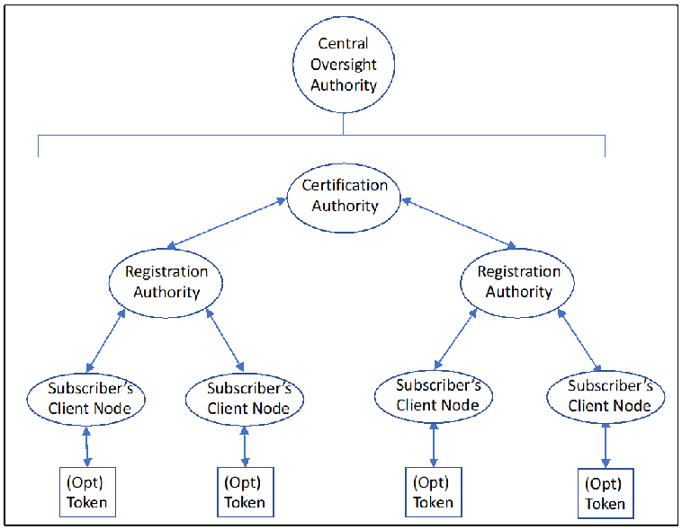
PDF原本のp.71にある図
Figure 4: PKI Components
図4：PKIコンポーネント
A.1.1 Central Oversight Authority
A.1.1 中央監督機関
In a PKI, the Central Oversight Authority may be called a policy management authority or just a policy authority.
PKIでは、中央監督機関をポリシー管理機関、または単にポリシー機関と呼ぶ場合がある。
A.1.2 Certification Authority (CA)
A.1.2 認証局（CA）
The PKI Certification Authority (CA), is a central element of a key management facility.108 The CA may create, sign, publish and manage public key certificates. Depending on the CA design, the CA may also generate asymmetric key pairs (e.g., for key establishment). See SP 800-15109 and X.509 Certificate Policy for the Federal Bridge Certification Authority (FBCA) for more information about the responsibilities of a CA.
PKI認証局（CA）は鍵管理施設の中心的要素である。108 CAは公開鍵証明書を作成、署名、公開、管理してもよい。CAの設計に応じ、CAは非対称鍵ペア（例：鍵確立用）を生成する場合もある。CAの責任の詳細については、SP 800-15109 および X.509 Certificate Policy for the Federal Bridge Certification Authority (FBCA) を参照されたい。
A.1.3 Registration Authority (RA)
A.1.3 登録局（RA）
A PKI's registration authority (RA) is an entity that enters into an agreement with a CA to collect and verify the identity of prospective subscriber entities and entity sponsors for the CA's services and other information that will be included in the subscriber's certificates. RAs register subscriber entities and sponsors, approve certificate issuance, and may perform key recovery operations. Not all RAs are authorized to perform all RA functions. An RA designated to perform key recovery operations may be referred to as a key recovery agent (KRA).
PKIの登録局（RA）はCAと合意を結ぶ主体であり、CAサービスの将来加入者となるエンティティとスポンサーの身元、および加入者証明書に含めるその他情報を収集・検証する。RAは加入者エンティティとスポンサーを登録し、証明書発行を承認し、鍵回復処理を行う場合もある。すべてのRAがすべてのRA機能を実行する権限を持つわけではない。鍵回復を行うRAは鍵回復エージェント（KRA）と呼ぶ場合がある。
A.1.4 Subscriber's Client Node and Token
A.1.4 加入者のクライアントノードおよびトークン
In this example, only human entities receive certificates as subscribers. Subscribers interface with the PKI and with others (called relying parties) using their client nodes. A subscriber's name appears as the subject of a certificate. If tokens are used, they are associated with a particular subscriber. Typically, either the client node or the subscriber's token contains the keying material to be used by the subscriber.
この例では人間の主体だけが加入者として証明書を受け取る。加入者はクライアントノードを使ってPKIおよび他者（依拠当事者と呼ぶ）とやり取りする。加入者名は証明書の主体として記載される。トークンを使用する場合、特定の加入者に関連付ける。通常、加入者が使用する鍵素材はクライアントノードまたは加入者のトークンに含まれる。
A.1.5 PKI Hierarchical Structures and Meshes
A.1.5 PKIの階層構造およびメッシュ構造
A hierarchical PKI is one in which all of the end entities and relying parties use a single "root CA" as their trust anchor. If the hierarchy has multiple levels, the root CA certifies the public keys of intermediate CAs (also known as subordinate CAs). These CAs then certify end entities' (subscribers') public keys or may, in a large PKI, certify other CAs. In this architecture, certificates are issued in only one direction, and a CA never certifies another CA that is "superior" to itself. Typically, only one superior CA certifies each CA. Certification path building in a hierarchical PKI is a straightforward process that simply requires the relying party to successively retrieve issuer certificates until a certificate that was issued by the trust anchor is located. A widely used variation on the single-rooted hierarchical PKI is the inclusion of multiple CAs as trust anchors. In this case, certificates for end entities are validated using the same approach as with any hierarchical PKI. The difference is that a certificate will be accepted if it can be verified back to any of the set of trust anchors. In a typical mesh style PKI (see Section 2.3.8); each end entity trusts the CA that issued its own certificate(s). Thus, there is no “root CA” for the entire PKI. The CAs in this environment have peer relationships; they are neither superior nor subordinate to one another. In a mesh, cross-certification between peer CAs may go in both directions.
階層型PKIでは、すべてのエンドエンティティと依拠当事者が単一の「ルートCA」を信頼アンカーとして用いる。階層が複数レベルの場合、ルートCAは中間CA（下位CAとも呼ぶ）の公開鍵を認証する。これらのCAはエンドエンティティ（加入者）の公開鍵を認証し、大規模PKIでは他のCAを認証する場合もある。このアーキテクチャでは証明書は一方向にのみ発行され、CAが自分より「上位」のCAを認証することはない。通常、各CAを認証する上位CAは1つだけである。階層型PKIの認証パス構築は単純で、依拠当事者が信頼アンカー発行の証明書を見つけるまで発行者証明書を順次取得すればよい。単一ルート階層型PKIの広く使われる変種では、複数のCAを信頼アンカーとして含める。この場合、エンドエンティティ証明書は通常の階層型PKIと同じ方法で検証する。異なるのは、信頼アンカーの集合のいずれかに遡って検証できれば、その証明書が受理される点である。典型的なメッシュ型PKI（2.3.8節を参照）では、各エンドエンティティは自身の証明書を発行したCAを信頼する。したがってPKI全体を統括する「ルートCA」は存在しない。この環境のCAは相互にピア関係にあり、互いに上位でも下位でもない。メッシュでは、ピアCA間の相互認証が双方向に行われる場合がある。
A.2 Key Centers
A.2 鍵センター
Key Centers are often used in environments using symmetric keys. Two example architectures are that of a key distribution center and a key translation center (see SP 800-71).
鍵センターは共通鍵環境でよく用いられる。鍵配布センターと鍵変換センターの2つのアーキテクチャ例がある（SP 800-71を参照）。
A.2.1 Key Distribution Center (KDC) Architecture
A.2.1 鍵配布センター（KDC）アーキテクチャ
A key distribution center (KDC) generates keying material as needed, either in response to a request or as determined by policy. Figure 5 shows a typical KDC architecture. KDCs are further described in SP 800-71.
鍵配布センター（KDC）は、要求に応じるかポリシーに従って鍵素材を必要時に生成する。図5に一般的なKDCアーキテクチャを示す。KDCの詳細はSP 800-71を参照。
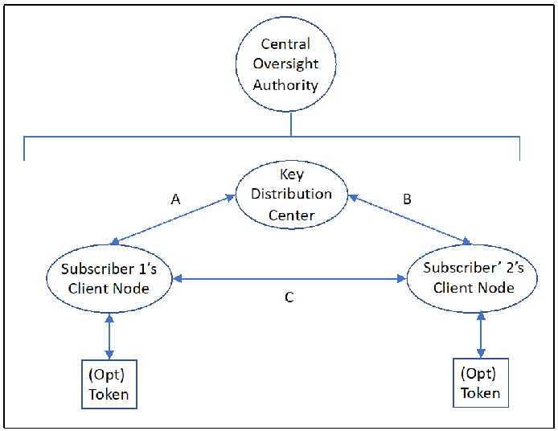
PDF原本のp.73にある図
Figure 5: KDC Components
図5：KDCコンポーネント
A.2.1.1 Key Distribution Center (KDC)
A.2.1.1 鍵配布センター（KDC）
A KDC generates keys, either upon request or of its own volition, and distributes them to one or more of its subscribers. KDCs usually generate only symmetric keys. Subscribers share a key-wrapping key with the KDC that is used to protect the generated keys during communication. The KDC will use cryptographic techniques to authenticate requesting users and their authorization to request keys. Kerberos is a real-world example of a KDC.
KDCは、要求に応じて、または自らの判断で鍵を生成し、1つ以上の加入者に配布する。KDCは通常、対称鍵のみを生成する。加入者はKDCと鍵ラッピング鍵を共有しており、この鍵は通信中に生成された鍵を保護するために使用される。KDCは暗号技術を用いて、要求元のユーザーと、そのユーザーが鍵を要求する権限を有することを認証する。Kerberosは、KDCの実例である。
A key generated by a KDC may be sent directly to one or more subscribers (using paths A and B in Figure 5) or multiple keys may be sent to one subscriber (e.g., Subscriber 1) who forwards them to another subscriber (e.g., using path A, followed by path C).
KDCが生成した鍵は、1つ以上の加入者に直接送信される場合（図5の経路Aおよび経路Bを使用）もあれば、複数の鍵が1つの加入者（例：加入者1）に送信され、その加入者が別の加入者に転送する場合（例：経路Aに続いて経路Cを使用）もある。
A.2.1.2 Subscriber Client Node and Token
A.2.1.2 加入者のクライアントノードおよびトークン
Subscribers may request keys from a KDC (e.g., Subscriber 1 uses path A) only for their own use or may request keys to be shared with other KDC subscribers (Subscriber 2 in the figure). Alternatively, a KDC may voluntarily generate and distribute keys to its subscribers, either to be shared among two or more subscribers or to be used solely by a single subscriber. These keys may be stored by the client node or on the subscriber's token (if used).
加入者は、自身の使用のためだけにKDCに鍵を要求する場合（例：加入者1が経路Aを使用）もあれば、KDCの他の加入者（図中の加入者2）と共有する鍵を要求する場合もある。あるいは、KDCが自発的に鍵を生成して加入者に配布する場合もあり、その鍵は2つ以上の加入者の間で共有されるものである場合も、単一の加入者のみが使用するものである場合もある。これらの鍵は、クライアントノードまたは加入者のトークン（使用している場合）に保存されることがある。
A.2.2 Key Translation Center (KTC) Architecture
A.2.2 鍵変換センター（KTC）アーキテクチャ
A KTC is used to translate keys for future communications between KTC subscribers. The architecture is shown in Figure 6 and is similar to the KDC architecture shown in Figure 5, except that a KTC is used instead of a KDC. Subscribers share a key-wrapping key with the KTC that is used to protect the generated keys during communication. KTCs are further described in SP 800-71.
KTCは、KTC加入者間の今後の通信に用いる鍵を変換するために使用される。そのアーキテクチャを図6に示す。これは、KDCの代わりにKTCを使用する点を除き、図5に示したKDCアーキテクチャと同様である。加入者はKTCと鍵ラッピング鍵を共有しており、この鍵は通信中に生成された鍵を保護するために使用される。KTCについては、SP 800-71でさらに説明している。
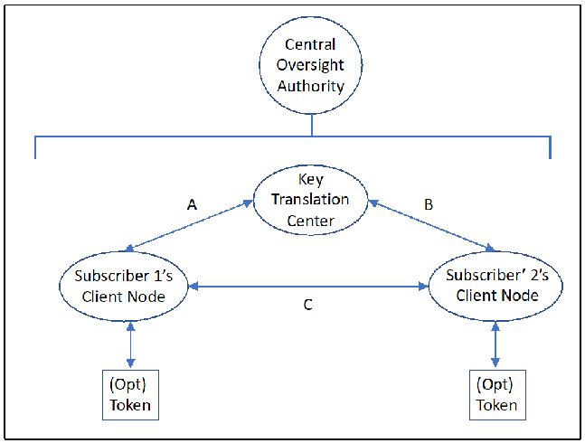
PDF原本のp.74にある図
Figure 6: KTC Components
図6：KTCコンポーネント
A.2.2.1 Key Translation Center (KTC)
A.2.2.1 鍵変換センター（KTC）
When a KTC subscriber (e.g., Subscriber 1) needs to securely communicate with one or more other KTC subscribers (e.g., Subscriber 2) but does not share a key with them, then Subscriber 1 may generate keying material, wrap it using a key-wrapping key (KWK) shared with the KTC and send the wrapped keying material (using path A) to the KTC for "translation" into a form that can be understood by the other subscriber(s) (e.g., Subscriber 2). Depending on how the architecture is implemented, the translated keys may be returned to Subscriber 1 for forwarding to the other intended subscriber(s) (using path A, followed by path C) or may be sent directly to the other intended parties (using path B).
KTC加入者（例：加入者1）が、鍵を共有していない1つ以上の他のKTC加入者（例：加入者2）と安全に通信する必要がある場合、加入者1は鍵材料を生成し、KTCと共有する鍵ラッピング鍵（KWK）を用いてそれをラップし、ラップした鍵材料をKTCに送信して（経路Aを使用）、他の加入者（例：加入者2）が理解できる形式への「変換」を依頼することができる。アーキテクチャの実装方法に応じて、変換された鍵は加入者1に返送されて他の対象加入者に転送される場合（経路Aに続いて経路Cを使用）もあれば、他の対象者に直接送信される場合（経路Bを使用）もある。
A.2.2.2 Subscriber Client Node and Token Subscribers (e.g., Subscriber 1 in the figure)with a key generation capability may request key translation from a KTC (e.g., using path A) to be sent to other subscribers. These keys may be stored by the client node or on the subscriber's token (if used).
A.2.2.2 加入者のクライアントノードおよびトークン 鍵生成機能を持つ加入者（例：図の加入者1）は、他の加入者に送るためKTCに鍵変換を要求できる（例：経路A）。鍵はクライアントノードまたは加入者のトークン（使用する場合）に保存できる。
Appendix B—Key Management Inserts for Security Plan Templates This appendix identifies a system security plan template and key management material that should be included in system security plans. The template information has been extracted from SP 800-18.110 Note that the following sample has been provided only as one example; this example is for a PKI. Organizations may use other formats and choose to update those to reflect any existing omissions based on this guidance. This is not a mandatory format; it is recognized that numerous agencies and information security service providers may have developed and implemented various approaches for information system security plan development and presentation to suit their own needs for flexibility. Although the information identified in the key management appendix outline described at item 16 below may be distributed among other template elements rather than in a separate appendix, all of the information described in the key management appendix shall be included in the security plan for systems that employ cryptography.
付属書B―セキュリティ計画テンプレート用の鍵管理挿入項目 本付属書では、システムセキュリティ計画に含めるべきシステムセキュリティ計画テンプレートと鍵管理資料を示す。テンプレート情報はSP 800-18から抽出した。110 以下の例は一例に過ぎず、PKIを対象とする。組織は別形式を使用し、このガイダンスに基づき既存の欠落を補うよう更新してもよい。これは必須形式ではない。多くの機関や情報セキュリティサービス提供者が、自らの柔軟性のニーズに応じて情報システムセキュリティ計画の策定・提示方式を開発・実装していることを認識している。鍵管理付属書の項目16の概要で特定する情報は、独立の付属書ではなく他のテンプレート要素に分散してもよいが、暗号を使用するシステムのセキュリティ計画には鍵管理付属書に記載された情報をすべて含めなければならない。
1. Information System Name/Title
1. 情報システム名／名称
•The unique identifier and name given to the system.
•システムに割り当てられた固有識別子および名称。
2. Information System Categorization
2. 情報システムのカテゴリ分類
•An identification of the appropriate FIPS 199 categorization (i.e., Low, Moderate or High).
•適切なFIPS 199分類（低、中、高）の特定。
3. Information System Owner
3. 情報システム所有者
•The name, title, agency, address, email address, and phone number of the person who owns the system.
•システム所有者の氏名、役職、機関、住所、電子メールアドレス、電話番号。
4. Authorizing Official
4. 認可責任者
•The name, title, agency, address, email address, and phone number of the senior management official designated as the authorizing official.
•認可責任者に指定された上級管理職の氏名、役職、機関、住所、電子メールアドレス、電話番号。
5. Other Designated Contacts
5. その他の指定連絡先
•A list of other critical personnel, if applicable; include their title, address, email address, and phone number.
•該当する場合、その他の重要担当者一覧。役職、住所、電子メールアドレス、電話番号を含める。
6. Assignment of Security Responsibility
6. セキュリティ責任の割当て
•The name, title, address, email address, and phone number of the person who is responsible for the security of the system.
•システムセキュリティの責任者の氏名、役職、住所、電子メールアドレス、電話番号。
7. Information System Operational Status
7. 情報システムの運用状態
•An indication of the operational status of the system. If more than one status is selected, list which status is assigned to each part of the system.
•システムの運用状態を示す。複数状態を選択する場合、システムの各部分に割り当てた状態を列挙する。
8. Information System Type
8. 情報システムの種類
•An indication of whether the system is a major application or a general support system.
•システムが主要アプリケーションか一般支援システムかを示す。
110 SP 800-18 Revision 1, Guide for Developing Security Plans for Federal Information Systems.
110 SP 800-18 Revision 1, Guide for Developing Security Plans for Federal Information Systems.
9. General System Description/Purpose
9. システムの一般的説明／目的
•A description of the function or purpose of the system and the information processes.
•システムの機能または目的、および情報処理の説明。
10. System Environment
10. システム環境
•A general description of the technical system, including the primary hardware, software, and communications equipment.
•主要なハードウェア、ソフトウェア、通信機器を含む技術システムの概要。
•Key management-specific information that needs to be included in this section, including the identification of any cryptographic mechanisms111 employed (including key sources) and the location of any keys stored for future use as well as backed-up and archived cryptographic keys.
•この節に含める必要がある鍵管理固有の情報。使用する暗号メカニズム111（鍵供給元を含む）の特定、ならびに将来使用するために保管される鍵およびバックアップ・アーカイブされた暗号鍵の保管場所の特定を含む。
11. System Interconnections/Information Sharing
11. システム相互接続／情報共有
•A list of interconnected systems and system identifiers (if appropriate); provide the system, name, organization and system type (e.g., major application or general support system); indicate if there is an ISA/MOU/MOA on file, the date of any agreement to interconnect, the FIPS 199 category, the certification and accreditation status, and the name of the authorizing official.
•相互接続システムおよびシステム識別子の一覧（該当する場合）。システム名、組織、システム種別（例：主要アプリケーション、一般支援システム）を示す。ISA/MOU/MOAが登録されているか、相互接続合意の日付、FIPS 199カテゴリ、認証・認定状況、認可責任者名も示す。
12. Related Laws/Regulations/Policies
12. 関連法令／規則／ポリシー
•A list of any laws or regulations that establish specific requirements for the confidentiality, integrity, or availability of the data in the system.
•システム内データの機密性、完全性、可用性について具体的要件を定める法令または規則の一覧。
13. Minimum Security Controls
13. 最低限のセキュリティ管理策
•A thorough description of how the SP 800-53 controls in the applicable Low, Moderate or High baseline are being implemented or planned to be implemented. The controls should be described by control family and indicate whether it is a system control, hybrid control, common control, scoping guidance is applied, or a compensating control is being used.
•該当する低・中・高の基準に含まれるSP 800-53管理策を実装済み、または実装予定の方法を詳細に説明する。管理策は管理策ファミリー別に記述し、システム管理策、ハイブリッド管理策、共通管理策のいずれか、適用範囲ガイダンスを適用するか、代替管理策を使用するかを示すとよい。
•Key management-specific information, including key inventory, backup, archiving, and recovery procedures in support of the recovery of encrypted files; controls for the verification of digital signatures and other integrity keying materials (e.g., certification authority and controls for determining completeness/correctness); key management procedures for key establishment (including key generation and distribution), storage, and destruction; and applicable cryptographic standards and guidelines for all cryptographic mechanisms employed. This information may be included in a key management appendix.
•暗号化ファイルの回復を支援する鍵インベントリ、バックアップ、アーカイブ、回復手順を含む鍵管理固有情報；デジタル署名およびその他の完全性鍵素材（例：認証局、完全性／正確性の判定管理策）の検証管理策；鍵確立（鍵生成・配布を含む）、保管、破棄に関する鍵管理手順；使用するすべての暗号メカニズムに適用される暗号標準とガイドライン。この情報は鍵管理付属書に含めてもよい。
14. Information System Security Plan Completion Date
14. 情報システムセキュリティ計画の完成日
•The completion date of the plan.
•計画の完成日。
15. Information System Security Plan Approval Date
15. 情報システムセキュリティ計画の承認日
•The date that the system security plan was approved and an indication of whether the approval documentation is attached or on file.
•システムセキュリティ計画の承認日、および承認文書が添付または登録されているかの表示。
111 Mechanisms to provide a cryptographic service, such as confidentiality, integrity or entity authentication.
111 機密性、完全性、主体認証などの暗号サービスを提供するメカニズム。
16. Key Management Appendix
16. 鍵管理付属書
•The Identification of the Keying Material Manager: The keying material manager should report directly to the organization’s chief executive officer, chief operations executive, or chief information systems officer. The keying material manager is a critical employee who should have capabilities and trustworthiness commensurate with its responsibility for maintaining the authority and integrity of all formal electronic transactions and the confidentiality of all information that is sufficiently sensitive to warrant cryptographic protection.
•鍵素材管理者の特定：鍵素材管理者は組織の最高経営責任者、最高業務責任者、または最高情報システム責任者に直接報告するとよい。鍵素材管理者は重要な職員であり、正式な電子取引すべての権威性と完全性、および暗号保護を要するほど機微な全情報の機密性を維持する責任に見合う能力と信頼性を備えるとよい。
•The Identification of the Management Entity(ies) Responsible for Certification Authority (CA) and Registration Authority (RA) Functions and Interactions: Where public key cryptography is employed, either the keying material manager or his/her immediate superior should be designated as the organization’s manager responsible for CA and RA functions. This section shall include references to any cloud computing or other shared services employed.
•認証局（CA）および登録局（RA）の機能と連携を担う管理主体の特定：公開鍵暗号を用いる場合、鍵素材管理者または直属上司をCA・RA機能の責任者として指定するとよい。この節では利用するクラウドコンピューティングその他の共有サービスを参照しなければならない。
•The Identification of the Management Entity (ies) Responsible for Symmetric Key Center Functions and Interactions:
•共通鍵センターの機能と連携を担う管理主体の特定：
Where a symmetric key center is employed, either the keying material manager or his/her immediate superior should be designated as the organization’s manager responsible key center functions. This section shall include references to any cloud computing or other shared services employed
共通鍵センターを使用する場合、鍵素材管理者または直属上司を鍵センター機能の責任者として指定するとよい。この節では利用するクラウドコンピューティングその他の共有サービスを参照しなければならない。
•Key Management Organization: The identification of job titles, roles, and/or individuals responsible for the following functions:
•鍵管理組織：以下の機能を担当する職名、役割、および／または個人の特定
•a. Key generation or acquisition;
•a. 鍵の生成または取得
•b. Agreements with partner organizations regarding the cross-certification of any PKI keying material or sharing of keying material between symmetric key centers;
•b. PKIの鍵材料の相互認証、または対称鍵センター間での鍵材料の共有に関する、パートナー組織との合意
•c. Key establishment and revocation structure design and management;
•c. 鍵確立および失効の構造の設計と管理
•d. Establishment of cryptoperiods;
•d. 暗号期間の設定
•e. Establishment of inventory management and accounting for keying material;
•e. 鍵材料の在庫管理および数量管理の確立
•f. Protection of secret and private keys and related materials;
•f. 秘密鍵（secret key および private key）ならびに関連する資料の保護
•g. Emergency and routine revocation of keying material;
•g. 鍵材料の緊急時および定常時の失効
•h. Replacement of keys and/or certificates;
•h. 鍵および／または証明書の置換
•i. Auditing of keying material and related records;
•i. 鍵材料および関連記録の監査
•j. Destruction of revoked or expired keys;
•j. 失効した鍵または有効期限切れの鍵の破棄
•j. Key recovery;
•j. 鍵回復
•k. Compromise recovery;
•k. 危殆化からの回復
•l. Contingency planning;
•l. 緊急時対応計画
•m. Disciplinary consequences for the willful or negligent mishandling of keying material; and
•m. 鍵材料の故意または過失による不適切な取扱いに対する懲戒処分
•n. Generation, approval, and maintenance of key management practices statements.
•n. 鍵管理実施規程の作成、承認、および維持
•Key Management Structure: As appropriate, a description of the management responsibilities for establishing cryptoperiods, key establishment, key certification, distribution, suspension, revocation, and any other procedures for encryption, signature, and other cryptographic processes implemented within the organization.
•鍵管理構造：適切な場合、暗号期間、鍵確立、鍵認証、配布、一時停止、失効、および組織内で実装する暗号化、署名その他の暗号プロセスに関する手順を確立する管理責任を説明する。
•Key Management Procedures (when appropriate)
•鍵管理手順（該当する場合）
•a. Key Establishment: Where applicable, a brief description of the procedures to be followed for key establishment of the initial key(s) and lower-level/replacement keys. This section includes references to applicable standards and guidelines. Some procedures may be presented by reference. Note that some organizations that employ cryptography may not generate keying material.
•翻訳準備中
•b. Key Acquisition: An identification of the source(s) of keying material. A description of the ordering procedures (if appropriate) and examples of any forms employed in ordering keying material (e.g., by online request or paper request).
•翻訳準備中
•c. Cross-Certification Agreements (applicable only to PKIs): A description of the cross-certification procedures and examples of any forms employed in establishing and/or implementing cross-certification agreements.
•翻訳準備中
•d. Agreements with Symmetric Key Partner Organizations (applicable only to key establishment using symmetric-key algorithms): A description of the procedures and examples of any forms involved in establishing agreements regarding the mutual acceptance of keying material associated with multiple-center groups, as appropriate.
•翻訳準備中
•e. Distribution of and Accounting for Keying Material: A description of the procedures for requesting keying material (either manual or online requests), including any forms associated with the request, the acknowledgement and disposition of the requests, the receipting for keying material, creating and maintaining keying material inventories, reporting the destruction of keying material, and reporting the acquisition or loss of keying material under exceptional circumstances.
•翻訳準備中
•f. Emergency and Routine Revocation of Keying Material: A description of the rules and procedures for the revocation of keying material under both routine and exceptional circumstances, such as a notice of unauthorized access to operational keying material (i.e., a key compromise).
•翻訳準備中
•g. Protection of Secret and Private Keys and Related Materials: The methods and procedures employed to protect keying material under various circumstances, such as during the pre-operational, operational, and revoked phase of a key's lifecycle.
•翻訳準備中
•h. Destruction of Revoked or Expired Keys: The procedures and guidelines for identifying the circumstances, responsibilities, and methods for the destruction of keying material.
•翻訳準備中
•i. Auditing of Keying Material and Related Records: A description of the circumstances, responsibilities, and methods for the auditing of keying material records and monitoring key and/or certificate inventories.
•翻訳準備中
•j. Key Recovery: Specification of the circumstances and process for authorizing key recovery and an identification of the guidelines and procedures for key recovery operations.
•翻訳準備中
•k. Compromise Recovery: The procedures for recovering from the exposure of sensitive keying material to unauthorized entities.
•翻訳準備中
•k. Disciplinary Actions: A specification of the consequences for willful or negligent mishandling of keying material.
•翻訳準備中
•l. Change Procedures: A specification of the procedures for effecting changes to key management planning documentation.
•翻訳準備中
抽出したテキスト（原本と未照合・参考）
Appendix C—Key Management Specification Checklist for Cryptographic Product Development抽出したテキストの訳（原本と未照合・参考）
付属書C―暗号製品開発用鍵管理仕様チェックリストThe following key management-related information for cryptographic product development may be useful to determine and resolve potential impacts to the key management infrastructure or other keying material acquisition processes in a time frame that meets user requirements. Yes/no responses should be provided to the following questions as well as additional information for each “yes” response. To the extent practical, SP 800-160,112 should be followed in the development of cryptographic products.
暗号製品開発に関する次の鍵管理情報は、利用者要件を満たす時間内に、鍵管理インフラストラクチャまたはその他の鍵材料取得プロセスへの潜在的影響を特定し解決するために有用な場合がある。次の質問には「はい」「いいえ」で回答し、「はい」の回答ごとに追加情報も示すべきである。可能な範囲で、暗号製品の開発では SP 800-160,112 に従うべきである。
1.Are unique key management products113 and services114 required by the cryptographic product for proper operation?
1.暗号製品の適切な運用のために、固有の鍵管理製品113およびサービス114が必要か。
2.Are there any cryptographic capabilities to be supported by a CKMS that are not fully configurable in the cryptographic product?
2.CKMSが支援する必要がある暗号機能のうち、暗号製品で完全に設定可能ではないものがあるか。
3.Does the cryptographic module implement a software download capability for importing updated cryptographic functions?115
3.暗号モジュールは、更新された暗号機能を取り込むためのソフトウェアダウンロード機能を実装しているか。115
4.Does the cryptographic module use any non-keying material CKMS products or services (such as CKL/CRLs, seed key116 conversion, etc.)?
4.暗号モジュールは、鍵材料以外の CKMS 製品またはサービス（CKL/CRL、シード鍵116の変換など）を使用するか。
5.Does the cryptographic module design preclude the use of any approved cryptographic algorithm?
5.暗号モジュールの設計は、承認済み暗号アルゴリズムのいずれかの使用を妨げるか。
112 SP 800-160 Volume 1, Systems Security Engineering: Considerations for a Multidisciplinary Approach in the Engineering of Trustworthy Secure Systems. 113 Key management products: e.g., keys, certificates, tokens, etc. 114 Key management services: The generation, establishment, distribution, destruction, revocation, and recovery of keys. 115 Cryptographic functions: algorithms and modes of operation. 116 Seed key: The initial key used to start an updating or key-generation process.
112 SP 800-160 Volume 1, Systems Security Engineering: Considerations for a Multidisciplinary Approach in the Engineering of Trustworthy Secure Systems. 113 鍵管理製品：例：鍵、証明書、トークンなど。114 鍵管理サービス：鍵の生成、確立、配布、破棄、失効、回復。115 暗号機能：アルゴリズムと運用モード。116 シード鍵：更新または鍵生成プロセスを開始するために使用する初期鍵。
Appendix D—References
付属書D—参考文献
The following publications are provided for reference. The provided publication dates refer to the last available version of the document as of the publication of this revision of SP 800-57 Part 2. When later revisions of these referenced documents are available, those versions should be referenced instead.
以下の文献を参考として示す。記載した発行日は、SP 800-57 Part 2の本改訂版の発行時点で入手可能な最新版のものである。これらの参考文献の後続の改訂版が入手可能になった場合は、その版を参照するべきである。
CC Evaluation Criteria for IT Security, International Organization for Standardization, ISO/IEC 15408-1, December 2009. https://www.iso.org/standard/50341.html
CC Evaluation Criteria for IT Security, International Organization for Standardization, ISO/IEC 15408-1, 2009年12月. https://www.iso.org/standard/50341.html
CertiPath KR CertiPath Key Recovery Policy, CertiPath, December 2013. https://www.certipath.com/downloads/20131216%20CertiPath%20KRP%20v.1.5.pdf
CertiPath KR CertiPath Key Recovery Policy, CertiPath, 2013年12月. https://www.certipath.com/downloads/20131216%20CertiPath%20KRP%20v.1.5.pdf
CP X509 CP CertiPath X.509 Certificate Policy, CertiPath, Version 3.26, November 2014. https://www.certipath.com/downloads/CertiPath%20CP-v.3.26_final.pdf
CP X509 CP CertiPath X.509 Certificate Policy, CertiPath, Version 3.26, 2014年11月. https://www.certipath.com/downloads/CertiPath%20CP-v.3.26_final.pdf
DoD Policy X.509 Certificate Policy for the United States Department of Defense, Department of Defense, Version 10.5, January 2013. https://iase.disa.mil/pki-pke/Documents/unclass-dod_cp_v10-5.pdf
DoD Policy X.509 Certificate Policy for the United States Department of Defense, Department of Defense, Version 10.5, 2013年1月. https://iase.disa.mil/pki-pke/Documents/unclass-dod_cp_v10-5.pdf
DoD KRP Key Recovery Policy for External Certification Authorities, Department of Defense, Version 1.0, June 2003. https://iase.disa.mil/pki-pke/Documents/unclass-eca_krp_v1-4_jun03_signed.pdf
DoD KRP Key Recovery Policy for External Certification Authorities, Department of Defense, Version 1.0, 2003年6月. https://iase.disa.mil/pki-pke/Documents/unclass-eca_krp_v1-4_jun03_signed.pdf
FBP X.509 Certificate Policy For The Federal Bridge Certification Authority (FBCA), Version 2.31, Federal Bridge Certification Authority, General Services Administration, June 2017. https://www.idmanagement.gov/wp-content/uploads/sites/1171/uploads/FBCA-Certificate-Policy-v2.31-06-29-17.pdf
FBP X.509 Certificate Policy For The Federal Bridge Certification Authority (FBCA), Version 2.31, Federal Bridge Certification Authority, General Services Administration, 2017年6月. https://www.idmanagement.gov/wp-content/uploads/sites/1171/uploads/FBCA-Certificate-Policy-v2.31-06-29-17.pdf
FedPKIKRP Federal Public Key Infrastructure Key Recovery Policy, Version 1.0, October 6, 2017. https://www.idmanagement.gov/fpki/
FedPKIKRP 連邦公開鍵基盤鍵回復ポリシー、バージョン1.0、2017年10月6日。https://www.idmanagement.gov/fpki/
FIPS 46 National Institute of Standards and Technology (1999) Data Encryption Standard (DES). (U.S. Department of Commerce, Washington, D.C.), Federal Information Processing Standards Publication (FIPS) 46-3. https://csrc.nist.gov/publications/detail/fips/46/3/archive/1999-10-25
FIPS 46 National Institute of Standards and Technology (1999) Data Encryption Standard (DES). (U.S. Department of Commerce, Washington, D.C.), Federal Information Processing Standards Publication (FIPS) 46-3. https://csrc.nist.gov/publications/detail/fips/46/3/archive/1999-10-25
FIPS 140 National Institute of Standards and Technology (2019) Security Requirements for Cryptographic Modules. (U.S. Department of Commerce, Washington, D.C.), Federal Information Processing Standards Publication (FIPS) 140-3. https://doi.org/10.6028/NIST.FIPS.140-3
FIPS 140 National Institute of Standards and Technology (2019) Security Requirements for Cryptographic Modules. (U.S. Department of Commerce, Washington, D.C.), Federal Information Processing Standards Publication (FIPS) 140-3. https://doi.org/10.6028/NIST.FIPS.140-3
FIPS 180 National Institute of Standards and Technology (2015) Secure Hash Standard (SHS). (U.S. Department of Commerce, Washington, D.C.), Federal Information Processing Standards Publication (FIPS) 180-4. https://doi.org/10.6028/NIST.FIPS.180-4
FIPS 180 National Institute of Standards and Technology (2015) Secure Hash Standard (SHS). (U.S. Department of Commerce, Washington, D.C.), Federal Information Processing Standards Publication (FIPS) 180-4. https://doi.org/10.6028/NIST.FIPS.180-4
FIPS 186
FIPS 186
National Institute of Standards and Technology (2013) Digital Signature Standard (DSS). (U.S. Department of Commerce, Washington, D.C.), Federal Information Processing Standards Publication (FIPS) 186-4. https://doi.org/10.6028/NIST.FIPS.186-4
National Institute of Standards and Technology (2013) Digital Signature Standard (DSS). (U.S. Department of Commerce, Washington, D.C.), Federal Information Processing Standards Publication (FIPS) 186-4. https://doi.org/10.6028/NIST.FIPS.186-4
FIPS 199
FIPS 199
National Institute of Standards and Technology (2004) Standards for Security Categorization of Federal Information and Information Systems. (U.S. Department of Commerce, Washington, D.C.), Federal Information Processing Standards Publication (FIPS) 199. https://doi.org/10.6028/NIST.FIPS.199
National Institute of Standards and Technology (2004) Standards for Security Categorization of Federal Information and Information Systems. (U.S. Department of Commerce, Washington, D.C.), Federal Information Processing Standards Publication (FIPS) 199. https://doi.org/10.6028/NIST.FIPS.199
FIPS 200
FIPS 200
National Institute of Standards and Technology (2006) Minimum Security Requirements for Federal Information and Information Systems. (U.S. Department of Commerce, Washington, D.C.), Federal Information Processing Standard (FIPS) 200. https://doi.org/10.6028/NIST.FIPS.200
National Institute of Standards and Technology (2006) Minimum Security Requirements for Federal Information and Information Systems. (U.S. Department of Commerce, Washington, D.C.), Federal Information Processing Standard (FIPS) 200. https://doi.org/10.6028/NIST.FIPS.200
FISMA
FISMA
Federal Information Security Modernization Act of 2014, Pub. L. 113-283, 128 Stat. 3073. https://www.govinfo.gov/app/details/PLAW-113publ283
Federal Information Security Modernization Act of 2014, Pub. L. 113-283, 128 Stat. 3073. https://www.govinfo.gov/app/details/PLAW-113publ283
NISTIR 7924
NISTIR 7924
Booth H, Regenscheid A (2014) Reference Certificate Policy. (National Institute of Standards and Technology, Gaithersburg, MD), Draft (2nd) NIST Internal Report (NISTIR) 7924. Available at https://csrc.nist.gov/publications/detail/nistir/7924/draft
Booth H, Regenscheid A (2014) Reference Certificate Policy. (National Institute of Standards and Technology, Gaithersburg, MD), Draft (2nd) NIST Internal Report (NISTIR) 7924. 入手先：https://csrc.nist.gov/publications/detail/nistir/7924/draft
OMB130
OMB130
OMB Circular A-130, Managing Information as a Strategic Resource, 28 July 2016. https://obamawhitehouse.archives.gov/sites/default/files/omb/assets/OMB/circulars/a130/a130revised.pdf
OMB Circular A-130, Managing Information as a Strategic Resource, 2016年7月28日. https://obamawhitehouse.archives.gov/sites/default/files/omb/assets/OMB/circulars/a130/a130revised.pdf
PDD63
PDD63
Presidential Decision Directive 63, Critical Infrastructure Protection, May 1998. https://www.govinfo.gov/app/details/FR-1998-08-05/98-20865
Presidential Decision Directive 63, Critical Infrastructure Protection, 1998年5月. https://www.govinfo.gov/app/details/FR-1998-08-05/98-20865
PL106
PL106
Electronic Signatures in Global and National Commerce Act, Public Law 106-229, June 30, 2000. https://www.govinfo.gov/app/details/PLAW-106publ229
Electronic Signatures in Global and National Commerce Act, Public Law 106-229, 2000年6月30日. https://www.govinfo.gov/app/details/PLAW-106publ229
PL 113-274 Cybersecurity Enhancement Act of 2014, Pub. L. 113-274, 124 Stat. 3989. https://www.govinfo.gov/app/details/PLAW-113publ274
2014年サイバーセキュリティ強化法、Pub. L. 113-274、124 Stat. 3989。https://www.govinfo.gov/app/details/PLAW-113publ274
PKI 01
PKI 01
Housley, R and Polk, T; Planning for PKI; Wiley Computer Publishing; New York; 2001.
Housley, R and Polk, T; Planning for PKI; Wiley Computer Publishing; New York; 2001.
RFC3647
RFC3647
Internet X.509 Public Key Infrastructure Certificate Policy and Certification Practices Framework, Internet Engineering Task Force, Network Working Group, Request for Comments 3647, The Internet Society; November 2003. https://datatracker.ietf.org/doc/rfc3647/
Internet X.509 Public Key Infrastructure Certificate Policy and Certification Practices Framework, Internet Engineering Task Force, Network Working Group, Request for Comments 3647, The Internet Society; 2003年11月. https://datatracker.ietf.org/doc/rfc3647/
RFC 4158
RFC 4158
Internet X.509 Public Key Infrastructure: Certification Path Building, Request for Comments 4158, September 2005. https://doi.org/10.17487/RFC4158
Internet X.509 Public Key Infrastructure: Certification Path Building, Request for Comments 4158, 2005年9月. https://doi.org/10.17487/RFC4158
RFC 4210
RFC 4210
Internet X.509 Public Key Infrastructure Protocol (KMP), Internet Engineering Task Force, Network Working Group, Standards Track, Request for Comments 4210, September 2005. https://doi.org/10.17487/RFC4210
Internet X.509 Public Key Infrastructure Protocol (KMP), Internet Engineering Task Force, Network Working Group, Standards Track, Request for Comments 4210, 2005年9月. https://doi.org/10.17487/RFC4210
RFC 4535
RFC 4535
GSAKMP: Group Secure Association Key Management Protocol, Internet Engineering Task Force, Network Working Group, Standards Track, Request for Comments 4535, June 2006. https://doi.org/10.17487/RFC4535
GSAKMP: Group Secure Association Key Management Protocol, Internet Engineering Task Force, Network Working Group, Standards Track, Request for Comments 4535, 2006年6月. https://doi.org/10.17487/RFC4535
RFC 4758
RFC 4758
Cryptographic Token Key Initialization Protocol (CT-KIP), Internet Engineering Task Force, Network Working Group, Standards Track, Request for Comments 4758, November 2006. https://doi.org/10.17487/RFC4758
Cryptographic Token Key Initialization Protocol (CT-KIP), Internet Engineering Task Force, Network Working Group, Standards Track, Request for Comments 4758, 2006年11月. https://doi.org/10.17487/RFC4758
RFC 4962
RFC 4962
Guidance for Authentication, Authorization, and Accounting (AAA) Key Management, Internet Engineering Task Force, Network Working Group, Standards Track, Request for Comments 4962, July 2007. https://doi.org/10.17487/RFC4962
Guidance for Authentication, Authorization, and Accounting (AAA) Key Management, Internet Engineering Task Force, Network Working Group, Standards Track, Request for Comments 4962, 2007年7月. https://doi.org/10.17487/RFC4962
RFC 5083
RFC 5083
Cryptographic Message Syntax (CMS) Authenticated Enveloped-Data Content Type, Internet Engineering Task Force, Network Working Group,
Cryptographic Message Syntax (CMS) Authenticated Enveloped-Data Content Type, Internet Engineering Task Force, Network Working Group,
Cryptographic Message Syntax (CMS) Authenticated Enveloped-Data Content Type, Internet Engineering Task Force, Network Working Group, Standards Track, Request for Comments 5083, November 2007. https://doi.org/10.17487/RFC5083
Cryptographic Message Syntax (CMS) Authenticated Enveloped-Data Content Type, Internet Engineering Task Force, Network Working Group, Standards Track, Request for Comments 5083, 2007年11月. https://doi.org/10.17487/RFC5083
RFC 5246
RFC 5246
The Transport Layer Security (TLS) Protocol, Version 1.2, Internet Engineering Task Force, Network Working Group, Standards Track, Request for Comments 5246, August 2008. https://doi.org/10.17487/RFC5246
The Transport Layer Security (TLS) Protocol, Version 1.2, Internet Engineering Task Force, Network Working Group, Standards Track, Request for Comments 5246, 2008年8月. https://doi.org/10.17487/RFC5246
RFC 5272
RFC 5272
Certificate Management Over CMS (CMC), Internet Engineering Task Force, Network Working Group, Standards Track, Request for Comments 5272, June 2008. https://doi.org/10.17487/RFC5272
Certificate Management Over CMS (CMC), Internet Engineering Task Force, Network Working Group, Standards Track, Request for Comments 5272, 2008年6月. https://doi.org/10.17487/RFC5272
RFC 5275
RFC 5275
CMS Symmetric Key Management and Distribution, Internet Engineering Task Force, Network Working Group, Standards Track, Request for Comments 5275, June 2008. https://doi.org/10.17487/RFC5275
CMS Symmetric Key Management and Distribution, Internet Engineering Task Force, Network Working Group, Standards Track, Request for Comments 5275, 2008年6月. https://doi.org/10.17487/RFC5275
RFC 5652
RFC 5652
Cryptographic Message Syntax (CMS), Internet Engineering Task Force, Network Working Group, Standards Track, Request for Comments 5652, September 2009. https://doi.org/10.17487/RFC5652
Cryptographic Message Syntax (CMS), Internet Engineering Task Force, Network Working Group, Standards Track, Request for Comments 5652, 2009年9月. https://doi.org/10.17487/RFC5652
RFC 5751
RFC 5751
Secure/Multipurpose Internet Mail Extensions (S/MIME) version 3.2 Message Specification, Standards Track, Request for Comments 5751, January 2010. https://doi.org/10.17487/RFC5751
Secure/Multipurpose Internet Mail Extensions (S/MIME) version 3.2 Message Specification, Standards Track, Request for Comments 5751, 2010年1月. https://doi.org/10.17487/RFC5751
RFC 5914
RFC 5914
Trust Anchor Format, Internet Engineering Task Force, Standards Track, Request for Comments 5914, June 2010. https://doi.org/10.17487/RFC5914
Trust Anchor Format, Internet Engineering Task Force, Standards Track, Request for Comments 5914, 2010年6月. https://doi.org/10.17487/RFC5914
RFC 5990
RFC 5990
Use of the RSA-KEM Key Transport Algorithm in the Cryptographic Message Syntax (CMS), Internet Engineering Task Force, Standards Track, Request for Comments 5990, September 2010. https://doi.org/10.17487/RFC5990
Use of the RSA-KEM Key Transport Algorithm in the Cryptographic Message Syntax (CMS), Internet Engineering Task Force, Standards Track, Request for Comments 5990, 2010年9月. https://doi.org/10.17487/RFC5990
RFC 5996
RFC 5996
Internet Key Establishment Protocol Version 2 (IKEv2), Internet Engineering Task Force, Standards Track, Request for Comments 5996, September 2010. https://doi.org/10.17487/RFC5996
Internet Key Establishment Protocol Version 2 (IKEv2), Internet Engineering Task Force, Standards Track, Request for Comments 5996, 2010年9月. https://doi.org/10.17487/RFC5996
RFC 6030
RFC 6030
Portable Symmetric Key Container (PSKC), Internet Engineering Task Force, Standards Track, Request for Comments 6030, October 2010. https://doi.org/10.17487/RFC6030
Portable Symmetric Key Container (PSKC), Internet Engineering Task Force, Standards Track, Request for Comments 6030, 2010年10月. https://doi.org/10.17487/RFC6030
RFC 6031
RFC 6031
Cryptographic Message Syntax (CMS) Symmetric Key Package Content Type, Internet Engineering Task Force, Standards Track, Request for Comments 6061, December 2010. https://doi.org/10.17487/RFC6031
Cryptographic Message Syntax (CMS) Symmetric Key Package Content Type, Internet Engineering Task Force, Standards Track, Request for Comments 6061, 2010年12月. https://doi.org/10.17487/RFC6031
RFC 6063
RFC 6063
Dynamic Symmetric Key Provisioning Protocol (DSKPP), Internet Engineering Task Force, Standards Track, Request for Comments 6063, December 2010. https://doi.org/10.17487/RFC6063
Dynamic Symmetric Key Provisioning Protocol (DSKPP), Internet Engineering Task Force, Standards Track, Request for Comments 6063, 2010年12月. https://doi.org/10.17487/RFC6063
RFC 6160
RFC 6160
Algorithms for Cryptographic Message Syntax (CMS), Internet Engineering Task Force, Standards Track, Request for Comments 6160, April 2011. https://doi.org/10.17487/RFC6160
Algorithms for Cryptographic Message Syntax (CMS), Internet Engineering Task Force, Standards Track, Request for Comments 6160, 2011年4月. https://doi.org/10.17487/RFC6160
RFC 6402
RFC 6402
Certificate Management Over CMS (CMC) Updates, Internet Engineering Task Force, Standards Track, Request for Comments 6402, November 2011. https://doi.org/10.17487/RFC6402
Certificate Management Over CMS (CMC) Updates, Internet Engineering Task Force, Standards Track, Request for Comments 6402, 2011年11月. https://doi.org/10.17487/RFC6402
RFC 6960
RFC 6960
X.509 Internet Public Key Infrastructure Online Certificate Status Protocol – OCSP, Updates, Internet Engineering Task Force, Standards Track, Request for Comments 6960, June 2013. https://doi.org/10.17487/RFC6960
X.509 Internet Public Key Infrastructure Online Certificate Status Protocol – OCSP, Updates, Internet Engineering Task Force, Standards Track, Request for Comments 6960, 2013年6月. https://doi.org/10.17487/RFC6960
RFC 7296
RFC 7296
Internet Key Exchange Protocol Version 2 (IKEv2), Standards Track, Request for Comments 7296, October 2014. https://doi.org/10.17487/RFC7296
Internet Key Exchange Protocol Version 2 (IKEv2), Standards Track, Request for Comments 7296, 2014年10月. https://doi.org/10.17487/RFC7296
RFC 8446
RFC 8446
The Transport Layer Security (TLS) Protocol Version 1.3, Internet Engineering Task Force, Standards Track, Request for Comments 8446, August 2018. https://datatracker.ietf.org/doc/rfc8446/
The Transport Layer Security (TLS) Protocol Version 1.3, Internet Engineering Task Force, Standards Track, Request for Comments 8446, 2018年8月. https://datatracker.ietf.org/doc/rfc8446/
RMF
RMF
National Institute of Standards and Technology (2019) Risk Management: Risk Management Framework (RMF) Overview. Available at https://csrc.nist.gov/projects/risk-management/rmf-overview
National Institute of Standards and Technology (2019) Risk Management: Risk Management Framework (RMF) Overview. 入手先：https://csrc.nist.gov/projects/risk-management/rmf-overview
SP 800-15
SP 800-15
Burr WE, Dodson DF, Nazario N, Polk T (1998) MISPC Minimum Interoperability Specification for PKI Components, Version 1. (National Institute of Standards and Technology, Gaithersburg, MD), NIST Special Publication (SP) 800-15. https://doi.org/10.6028/NIST.SP.800-15
Burr WE, Dodson DF, Nazario N, Polk T (1998) MISPC Minimum Interoperability Specification for PKI Components, Version 1. (National Institute of Standards and Technology, Gaithersburg, MD), NIST Special Publication (SP) 800-15. https://doi.org/10.6028/NIST.SP.800-15
SP800-18
SP800-18
Swanson MA, Hash J, Bowen P (2006) Guide for Developing Security Plans for Federal Information Systems. (National Institute of Standards and Technology, Gaithersburg, MD), NIST Special Publication (SP) 800-18, Rev. 1. https://doi.org/10.6028/NIST.SP.800-18r1
Swanson MA, Hash J, Bowen P (2006) Guide for Developing Security Plans for Federal Information Systems. (National Institute of Standards and Technology, Gaithersburg, MD), NIST Special Publication (SP) 800-18, Rev. 1. https://doi.org/10.6028/NIST.SP.800-18r1
SP 800-32
SP 800-32
Kuhn DR, Hu VC, Polk WT, Chang S-j (2001) Introduction to Public Key Technology and the Federal PKI Infrastructure. (National Institute of Standards and Technology, Gaithersburg, MD), NIST Special Publication (SP) 800-32. https://doi.org/10.6028/NIST.SP.800-32
Kuhn DR, Hu VC, Polk WT, Chang S-j (2001) Introduction to Public Key Technology and the Federal PKI Infrastructure. (National Institute of Standards and Technology, Gaithersburg, MD), NIST Special Publication (SP) 800-32. https://doi.org/10.6028/NIST.SP.800-32
SP800-37
SP800-37
Joint Task Force (2018) Risk Management Framework for Information Systems and Organizations: A System Life Cycle Approach for Security and Privacy. (National Institute of Standards and Technology, Gaithersburg, MD), NIST Special Publication (SP) 800-37, Rev. 2. https://doi.org/10.6028/NIST.SP.800-37r2
Joint Task Force (2018) Risk Management Framework for Information Systems and Organizations: A System Life Cycle Approach for Security and Privacy. (National Institute of Standards and Technology, Gaithersburg, MD), NIST Special Publication (SP) 800-37, Rev. 2. https://doi.org/10.6028/NIST.SP.800-37r2
SP 800-52
SP 800-52
McKay KA, Cooper DA (2018) Guidelines for the Selection, Configuration, and Use of Transport Layer Security (TLS) Implementations. (National Institute of Standards and Technology, Gaithersburg, MD), Draft (2nd) NIST Special Publication (SP) 800-52, Rev. 2. https://csrc.nist.gov/publications/detail/sp/800-52/rev-2/draft
McKay KA, Cooper DA (2018) Guidelines for the Selection, Configuration, and Use of Transport Layer Security (TLS) Implementations. (National Institute of Standards and Technology, Gaithersburg, MD), Draft (2nd) NIST Special Publication (SP) 800-52, Rev. 2. https://csrc.nist.gov/publications/detail/sp/800-52/rev-2/draft
SP800-53
SP800-53
Joint Task Force (2017), Security and Privacy Controls for Information Systems and Organizations. (National Institute of Standards and Technology, Gaithersburg, MD), Draft NIST Special Publication (SP) 800-53, Rev. 5. https://csrc.nist.gov/publications/detail/sp/800-53/rev-5/draft
Joint Task Force (2017), Security and Privacy Controls for Information Systems and Organizations. (National Institute of Standards and Technology, Gaithersburg, MD), Draft NIST Special Publication (SP) 800-53, Rev. 5. https://csrc.nist.gov/publications/detail/sp/800-53/rev-5/draft
SP-800-53A
SP-800-53A
Joint Task Force Transformation Initiative (2014) Assessing Security and Privacy Controls in Federal Information Systems and Organizations: Building Effective Assessment Plans. (National Institute of Standards and Technology, Gaithersburg, MD), NIST Special Publication (SP) 800-53A, Rev. 4, Includes updates as of December 18, 2014. https://doi.org/10.6028/NIST.SP.800-53Ar4
Joint Task Force Transformation Initiative (2014) Assessing Security and Privacy Controls in Federal Information Systems and Organizations: Building Effective Assessment Plans. (National Institute of Standards and Technology, Gaithersburg, MD), NIST Special Publication (SP) 800-53A, Rev. 4, 2014年12月18日時点の更新を含む. https://doi.org/10.6028/NIST.SP.800-53Ar4
SP 800-56A Barker EB, Chen L, Roginsky A, Vassilev A, Davis R (2018) Recommendation for Pair-Wise Key-Establishment Schemes Using Discrete Logarithm Cryptography. (National Institute of Standards and Technology, Gaithersburg, MD), NIST Special Publication (SP) 800-56A, Rev. 3. https://doi.org/10.6028/NIST.SP.800-56Ar3
SP 800-56A Barker EB, Chen L, Roginsky A, Vassilev A, Davis R (2018) Recommendation for Pair-Wise Key-Establishment Schemes Using Discrete Logarithm Cryptography. (National Institute of Standards and Technology, Gaithersburg, MD), NIST Special Publication (SP) 800-56A, Rev. 3. https://doi.org/10.6028/NIST.SP.800-56Ar3
SP 800-56B Barker EB, Chen L, Roginsky A, Vassilev A, Davis R, Simon S (2019) Recommendation for Pair-Wise Key-Establishment Using Integer Factorization Cryptography. (National Institute of Standards and Technology, Gaithersburg, MD), NIST Special Publication (SP) 800-56B, Rev. 2. https://doi.org/10.6028/NIST.SP.800-56Br2
SP 800-56B Barker EB, Chen L, Roginsky A, Vassilev A, Davis R, Simon S (2019) Recommendation for Pair-Wise Key-Establishment Using Integer Factorization Cryptography. (National Institute of Standards and Technology, Gaithersburg, MD), NIST Special Publication (SP) 800-56B, Rev. 2. https://doi.org/10.6028/NIST.SP.800-56Br2
SP 800-56C Barker EB, Chen L, Davis R (2018) Recommendation for Key-Derivation Methods in Key-Establishment Schemes. (National Institute of Standards and Technology, Gaithersburg, MD), NIST Special Publication (SP) 800-56C, Rev. 1. https://doi.org/10.6028/NIST.SP.800-56Cr1
SP 800-56C Barker EB, Chen L, Davis R (2018) Recommendation for Key-Derivation Methods in Key-Establishment Schemes. (National Institute of Standards and Technology, Gaithersburg, MD), NIST Special Publication (SP) 800-56C, Rev. 1. https://doi.org/10.6028/NIST.SP.800-56Cr1
SP 800-57 Pt1 Barker EB (2016) Recommendation for Key Management, Part 1: General.
SP 800-57 Pt1 Barker EB (2016) 鍵管理に関する勧告、第1部：一般。
(National Institute of Standards and Technology, Gaithersburg, MD), NIST Special Publication (SP) 800-57 Part 1, Rev. 4. https://doi.org/10.6028/NIST.SP.800-57pt1r4
（米国国立標準技術研究所、メリーランド州ゲイサーズバーグ）、NIST特別刊行物（SP）800-57 Part 1 Rev. 4。https://doi.org/10.6028/NIST.SP.800-57pt1r4
SP 800-57 Pt3 Barker EB, Dang QH (2015) Recommendation for Key Management, Part 3:
SP 800-57 Pt3 Barker EB, Dang QH (2015) Recommendation for Key Management, Part 3:
Application-Specific Key Management Guidance. (National Institute of Standards and Technology, Gaithersburg, MD), NIST Special Publication (SP) 800-57 Part 3, Rev. 1. https://doi.org/10.6028/NIST.SP.800-57pt3r1
用途固有の鍵管理ガイダンス。（米国国立標準技術研究所、メリーランド州ゲイサーズバーグ）、NIST特別刊行物（SP）800-57 Part 3 Rev. 1。https://doi.org/10.6028/NIST.SP.800-57pt3r1
SP 800-67 Barker EB, Mouha N (2017) Recommendation for the Triple Data Encryption Algorithm (TDEA) Block Cipher. (National Institute of Standards and Technology, Gaithersburg, MD), NIST Special Publication (SP) 800-67, Rev. 2. https://doi.org/10.6028/NIST.SP.800-67r2
SP 800-67 Barker EB, Mouha N (2017) Recommendation for the Triple Data Encryption Algorithm (TDEA) Block Cipher. (National Institute of Standards and Technology, Gaithersburg, MD), NIST Special Publication (SP) 800-67, Rev. 2. https://doi.org/10.6028/NIST.SP.800-67r2
SP 800-71 Barker EB, Barker WC (2018) Recommendation for Key Establishment Using Symmetric Block Ciphers. (National Institute of Standards and Technology, Gaithersburg, MD), Draft NIST Special Publication (SP) 800-71. https://csrc.nist.gov/publications/detail/sp/800-71/draft
SP 800-71 Barker EB, Barker WC (2018) Recommendation for Key Establishment Using Symmetric Block Ciphers. (National Institute of Standards and Technology, Gaithersburg, MD), Draft NIST Special Publication (SP) 800-71. https://csrc.nist.gov/publications/detail/sp/800-71/draft
SP 800-88 Kissel RL, Regenscheid AR, Scholl MA, Stine KM (2014) Guidelines for Media Sanitization. (National Institute of Standards and Technology, Gaithersburg, MD), NIST Special Publication (SP) 800-88, Rev. 1. https://doi.org/10.6028/NIST.SP.800-88r1
SP 800-88 Kissel RL, Regenscheid AR, Scholl MA, Stine KM (2014) Guidelines for Media Sanitization. (National Institute of Standards and Technology, Gaithersburg, MD), NIST Special Publication (SP) 800-88, Rev. 1. https://doi.org/10.6028/NIST.SP.800-88r1
SP 800-108 Chen L (2009) Recommendation for Key Derivation Using Pseudorandom Functions (Revised). (National Institute of Standards and Technology, Gaithersburg, MD), NIST Special Publication (SP) 800-108, Revised. https://doi.org/10.6028/NIST.SP.800-108
SP 800-108 Chen L (2009) Recommendation for Key Derivation Using Pseudorandom Functions (Revised). (National Institute of Standards and Technology, Gaithersburg, MD), NIST Special Publication (SP) 800-108, Revised. https://doi.org/10.6028/NIST.SP.800-108
SP 800-130 Barker EB, Smid ME, Branstad DK, Chokhani S (2013) A Framework for Designing Cryptographic Key Management Systems. (National Institute of Standards and Technology, Gaithersburg, MD), NIST Special Publication (SP) 800-130. https://doi.org/10.6028/NIST.SP.800-130
SP 800-130 Barker EB, Smid ME, Branstad DK, Chokhani S (2013) A Framework for Designing Cryptographic Key Management Systems. (National Institute of Standards and Technology, Gaithersburg, MD), NIST Special Publication (SP) 800-130. https://doi.org/10.6028/NIST.SP.800-130
SP 800-131A Barker EB, Roginsky A (2019) Transitioning the Use of Cryptographic Algorithms and Key Lengths. (National Institute of Standards and Technology, Gaithersburg, MD), NIST Special Publication (SP) 800-131A, Rev. 2. https://doi.org/10.6028/NIST.SP.800-131Ar2
SP 800-131A Barker EB, Roginsky A (2019) Transitioning the Use of Cryptographic Algorithms and Key Lengths. (National Institute of Standards and Technology, Gaithersburg, MD), NIST Special Publication (SP) 800-131A, Rev. 2. https://doi.org/10.6028/NIST.SP.800-131Ar2
SP 800-132 Sönmez Turan M, Barker EB, Burr WE, Chen L (2010) Recommendation for Password-Based Key Derivation: Part 1: Storage Applications. (National Institute of Standards and Technology, Gaithersburg, MD), NIST Special Publication (SP) 800-132. https://doi.org/10.6028/NIST.SP.800-132
SP 800-132 Sönmez Turan M, Barker EB, Burr WE, Chen L (2010) Recommendation for Password-Based Key Derivation: Part 1: Storage Applications. (National Institute of Standards and Technology, Gaithersburg, MD), NIST Special Publication (SP) 800-132. https://doi.org/10.6028/NIST.SP.800-132
SP 800-133 Barker EB, Roginsky A (2019) Recommendation for Cryptographic Key Generation. (National Institute of Standards and Technology, Gaithersburg, MD), Draft NIST Special Publication (SP) 800-133, Rev. 1. https://csrc.nist.gov/publications/detail/sp/800-133/rev-1/draft
SP 800-133 Barker EB, Roginsky A (2019) Recommendation for Cryptographic Key Generation. (National Institute of Standards and Technology, Gaithersburg, MD), Draft NIST Special Publication (SP) 800-133, Rev. 1. https://csrc.nist.gov/publications/detail/sp/800-133/rev-1/draft
SP 800-135 Dang QH (2011) Recommendation for Existing Application-Specific Key Derivation Functions. (National Institute of Standards and Technology, Gaithersburg, MD), NIST Special Publication (SP) 800-135, Rev. 1. https://doi.org/10.6028/NIST.SP.800-135r1
SP 800-135 Dang QH (2011) Recommendation for Existing Application-Specific Key Derivation Functions. (National Institute of Standards and Technology, Gaithersburg, MD), NIST Special Publication (SP) 800-135, Rev. 1. https://doi.org/10.6028/NIST.SP.800-135r1
SP 800-152 Barker EB, Branstad DK, Smid ME (2015) A Profile for U.S. Federal Cryptographic Key Management Systems (CKMS). (National Institute of Standards and Technology, Gaithersburg, MD), NIST Special Publication (SP) 800-152. https://doi.org/10.6028/NIST.SP.800-152
SP 800-152 Barker EB, Branstad DK, Smid ME (2015) A Profile for U.S. Federal Cryptographic Key Management Systems (CKMS). (National Institute of Standards and Technology, Gaithersburg, MD), NIST Special Publication (SP) 800-152. https://doi.org/10.6028/NIST.SP.800-152
SP 800-160 Ross RS, Oren JC, McEvilley M (2016) Systems Security Engineering:
SP 800-160 Ross RS, Oren JC, McEvilley M (2016) Systems Security Engineering:
SP 800-160 Ross RS, Oren JC, McEvilley M (2016) Systems Security Engineering: Considerations for a Multidisciplinary Approach in the Engineering of Trustworthy Secure Systems. (National Institute of Standards and Technology, Gaithersburg, MD), NIST Special Publication (SP) 800-160, Vol. 1, Includes updates as of March 21, 2018. https://doi.org/10.6028/NIST.SP.800-160v1
SP 800-160 Ross RS, Oren JC, McEvilley M (2016) Systems Security Engineering: Considerations for a Multidisciplinary Approach in the Engineering of Trustworthy Secure Systems. (National Institute of Standards and Technology, Gaithersburg, MD), NIST Special Publication (SP) 800-160, Vol. 1, 2018年3月21日時点の更新を含む。 https://doi.org/10.6028/NIST.SP.800-160v1
SP 800-171 — Ross RS, Dempsey KL, Viscuso P, Riddle M, Guissanie G (2016) Protecting Controlled Unclassified Information in Nonfederal Systems and Organizations. (National Institute of Standards and Technology, Gaithersburg, MD), NIST Special Publication (SP) 800-171, Rev. 1, Includes updates as of June 7, 2018. https://doi.org/10.6028/NIST.SP.800-171r1
SP 800-171 — Ross RS, Dempsey KL, Viscuso P, Riddle M, Guissanie G (2016) Protecting Controlled Unclassified Information in Nonfederal Systems and Organizations. (National Institute of Standards and Technology, Gaithersburg, MD), NIST Special Publication (SP) 800-171, Rev. 1, 2018年6月7日時点の更新を含む. https://doi.org/10.6028/NIST.SP.800-171r1
SP 800-175A — Barker EB, Barker WC (2016) Guideline for Using Cryptographic Standards in the Federal Government: Directives, Mandates and Policies. (National Institute of Standards and Technology, Gaithersburg, MD), NIST Special Publication (SP) 800-175A. https://doi.org/10.6028/NIST.SP.800-175A
SP 800-175A — Barker EB, Barker WC (2016) Guideline for Using Cryptographic Standards in the Federal Government: Directives, Mandates and Policies. (National Institute of Standards and Technology, Gaithersburg, MD), NIST Special Publication (SP) 800-175A. https://doi.org/10.6028/NIST.SP.800-175A
SP 800-175B — Barker EB (2016) Guideline for Using Cryptographic Standards in the Federal Government: Cryptographic Mechanisms. (National Institute of Standards and Technology, Gaithersburg, MD), NIST Special Publication (SP) 800-175B. https://doi.org/10.6028/NIST.SP.800-175B
SP 800-175B — Barker EB (2016) Guideline for Using Cryptographic Standards in the Federal Government: Cryptographic Mechanisms. (National Institute of Standards and Technology, Gaithersburg, MD), NIST Special Publication (SP) 800-175B. https://doi.org/10.6028/NIST.SP.800-175B
Treasury CP — Department of the Treasury Public Key Infrastructure (PKI) X.509 Certificate Policy, Version 2.9, United States Department of the Treasury, March 15, 2017. https://pki.treas.gov/docs/treasury_x509_certificate_policy.pdf
Treasury CP — Department of the Treasury Public Key Infrastructure (PKI) X.509 Certificate Policy, Version 2.9, United States Department of the Treasury, 2017年3月15日. https://pki.treas.gov/docs/treasury_x509_certificate_policy.pdf
Treasury KR — Key Recovery Policy for The Department of the Treasury Public Key Infrastructure (PKI), Version 1.0, United States Department of the Treasury, August 24, 2009. https://pki.treas.gov/docs/dot_krp.pdf
Treasury KR — Key Recovery Policy for The Department of the Treasury Public Key Infrastructure (PKI), Version 1.0, United States Department of the Treasury, 2009年8月24日. https://pki.treas.gov/docs/dot_krp.pdf
X.509 — Information technology – Open Systems Interconnection – The Directory: Public-key and attribute certificate frameworks, International Telecommunications Union Telecommunication Sector, ITU-T X.509, October 14, 2016. https://handle.itu.int/11.1002/1000/13031
X.509 — Information technology – Open Systems Interconnection – The Directory: Public-key and attribute certificate frameworks, International Telecommunications Union Telecommunication Sector, ITU-T X.509, 2016年10月14日. https://handle.itu.int/11.1002/1000/13031
Appendix E—Revisions
付録E—改訂履歴
The original version of this document was published in August 2005. Several editorial corrections and clarifications were made, and the following more substantial revisions were made in 2019 (Revision 1):
本文書の初版は2005年8月に発行された。2019年の改訂（Revision 1）では、いくつかの編集上の修正と明確化が行われたほか、以下のより実質的な改訂が行われた。
1.The Authority section has been updated.
1.Authority（権限）節を更新した。
2.Consistent with the Cybersecurity Enhancement Act of 2014 (PL 113-274), Section 1 now states that this Recommendation is intended to provide direct cybersecurity support to the private sector as well as the government-focused guidance consistent with OMB Circular A-130 (OMB 130). The revision states explicitly that the recommendations are strictly voluntary for the private sector, and that requirement terms (should/shall language) used for some recommendations do not apply outside the federal government.
2.2014年サイバーセキュリティ強化法（PL 113-274）に沿って、Section 1に、この勧告が、OMB Circular A-130（OMB 130）に沿った政府向けガイダンスに加えて、民間部門にも直接的なサイバーセキュリティ支援を提供することを意図していると明記した。この改訂では、民間部門に対する勧告は厳密に任意であり、一部の勧告で使用される要件用語（should/shallの表現）は連邦政府外には適用されないことを明示した。
3.The Glossary section was updated to improve consistency with recent publications. The following terms were updated: accountability, certificate revocation list, client node, communicating group, compliance audit, compromised key list, cryptographic keying relationship, cryptographic key management system, de-registration (of a key), emergency key revocation, encrypted keying material, internet key exchange, Kerberos, key agreement, key-center environment, key certification hierarchy, key derivation, key distribution center, key generation, keying material, key recovery agent, key wrapping key, manual key distribution, mesh, message authentication, multiple-center group, peer, rekey, revocation, revoked key notification, service agent, suspension, transport layer security, token, trust anchor, and user were added. The association, asymmetric key algorithm, cryptographic key component, data key, data encrypting key, data origin authentication, dual control, encrypted key, integrity detection, integrity restoration, key de-registration, key management infrastructure, key registration, label, random number generator, secret key, security services, and subject certification authority terms were deleted. The definitions for authentication, authentication code, certification practice statement, confidentiality, digital signature, encrypted keying material, key processing facility, key transport, key update, key wrapping, non-repudiation, password, private key, public key, and X.509 certificate.
3.用語集を更新し、近年の刊行物との一貫性を高めた。次の用語が更新された：accountability、certificate revocation list、client node、communicating group、compliance audit、compromised key list、cryptographic keying relationship、cryptographic key management system、de-registration (of a key)、emergency key revocation、encrypted keying material、internet key exchange、Kerberos、key agreement、key-center environment、key certification hierarchy、key derivation、key distribution center、key generation、keying material、key recovery agent、key wrapping key、manual key distribution、mesh、message authentication、multiple-center group、peer、rekey、revocation、revoked key notification、service agent、suspension、transport layer security、token、trust anchor、userが追加された。association、asymmetric key algorithm、cryptographic key component、data key、data encrypting key、data origin authentication、dual control、encrypted key、integrity detection、integrity restoration、key de-registration、key management infrastructure、key registration、label、random number generator、secret key、security services、subject certification authorityを削除した。authentication、authentication code、certification practice statement、confidentiality、digital signature、encrypted keying material、key processing facility、key transport、key update、key wrapping、non-repudiation、password、private key、public key、X.509 certificateの定義。
4.The acronyms section was revised to add CKMS, IKE, IPsec, Part 1, Part 2, Part 3, RKN, S/MIME, and TLS; and delete KMI, PRNG, and RNG.
4.略語の節を改訂し、CKMS、IKE、IPsec、Part 1、Part 2、Part 3、RKN、S/MIME、TLSを追加し、KMI、PRNG、RNGを削除した。
5.The term key management infrastructure (KMI) was replaced throughout the publication with cryptographic key management system.
5.刊行物全体で、key management infrastructure（KMI）という用語をcryptographic key management systemに置き換えた。
6.References to TLS 1.0 and TLS 1.1 were deleted. A reference to TLS 1.3 was added.
6.TLS 1.0およびTLS 1.1への参照を削除し、TLS 1.3への参照を追加した。
7.In order to achieve consistent terminology with SP 800-152, the term Key Management Policy (KMP) was replaced throughout the document with Cryptographic Key Management System Security Policy (CKMS SP), and the term Key Management Practices Statement (KMPS) was replaced by Cryptographic Key Management System Practice Statement (CKMS PS).
7.SP 800-152との用語の一貫性を実現するため、文書全体でKey Management Policy（KMP）をCryptographic Key Management System Security Policy（CKMS SP）に置き換え、Key Management Practices Statement（KMPS）をCryptographic Key Management System Practice Statement（CKMS PS）に置き換えた。
8.8. Section 2 was updated to introduce a more comprehensive set of key management concepts that must be addressed in key management policies, practice statements and planning documents by any organization that uses cryptography to protect its information. The revised section reflects guidance provided by SP 800-130 and SP 800-152, and broadens the applicability of its recommendations to cover both decentralized and centralized key management structures. The example centralized infrastructure design was replaced with explanatory material that reflects SP 800-130 and SP 800-152 and applies to both centralized and decentralized key management structures. The references to the now outdated RFC 4107 were deleted.
8.8. 2章を更新し、情報の保護に暗号を用いるあらゆる組織が、鍵管理ポリシー、実務記述書および計画文書の中で扱わなければならない、より包括的な一連の鍵管理の概念を導入した。改訂後のこの章は、SP 800-130およびSP 800-152が示すガイダンスを反映し、勧告の適用範囲を分散型と集中型の両方の鍵管理構造に広げている。集中型基盤の設計例は、SP 800-130およびSP 800-152を反映し、集中型と分散型の両方の鍵管理構造に当てはまる説明資料に置き換えた。現在では旧式となったRFC 4107への参照は削除した。
9.In section 3.1.2.1 and Appendix B, the requirement that the keying material manager also be the certification authority was deleted.
9.Section 3.1.2.1およびAppendix Bから、鍵素材管理者が認証局も兼ねるという要件を削除した。
10.The original Section 4 (Information Technology System Security Plans), which provided documentation requirements for General Support Systems and Major Applications, was deleted as out of date.
10.旧Section 4（情報技術システムのセキュリティ計画）は、General Support SystemsおよびMajor Applicationsの文書化要件を定めていたが、旧式のため削除した。
11.For the second draft of Part 2, the document was re-organized to provide key management planning guidelines as Section 3, followed by guidelines for Key Management Specification (Section 4), Key Management Policy documentation (Section 5), and development of key management practices statements (Section 6).
11.Part 2の第2草案では、文書を再編し、鍵管理計画ガイドラインをSection 3、鍵管理仕様のガイドラインをSection 4、鍵管理ポリシー文書化をSection 5、鍵管理実施声明の策定をSection 6とした。
12.The original Appendix A, Notional Key Management Infrastructure, was removed as outdated and bound strictly to hierarchical structures. It was replaced with a CKMS Examples Appendix A that describes both PKI and Center environments.
12.旧Appendix A「概念的鍵管理基盤」は、旧式で階層構造に限定されていたため削除した。これを、PKIとセンター環境の両方を説明するCKMS Examples Appendix Aに置き換えた。
13.The original Appendix B was deleted. It is not necessary to repeat material from the IETF RFC 3647 standard.
13.旧Appendix Bを削除した。IETF RFC 3647規格の内容を繰り返す必要はない。
14.The original Appendix C, Evaluator Checklist, was removed due to SP 800-130, A Framework for Designing Cryptographic Key Management Systems, and SP 800-152, A Profile for U.S. Federal Cryptographic Key Management Systems, now being available to provide the guidance covered in that appendix. Further, as stated in SP 800-53A, security control assessments and privacy control assessments are not about checklists, simple pass-fail results, or generating paperwork to pass inspections or audits—rather, such assessments are the principal vehicle used to verify that implemented security controls and privacy controls are meeting their stated goals and objectives.
14.旧Appendix C「評価者チェックリスト」は、SP 800-130（暗号鍵管理システム設計のフレームワーク）およびSP 800-152（米国連邦暗号鍵管理システムのプロファイル）が、同付録の対象だったガイダンスを提供するようになったため削除した。さらに、SP 800-53Aに記載のとおり、セキュリティ管理策およびプライバシー管理策の評価は、チェックリスト、単純な合否判定、または検査・監査に合格するための書類作成を目的とするものではない。むしろ、実装されたセキュリティ管理策およびプライバシー管理策が明示された目標と目的を達成していることを検証するための主要な手段である。
15.The original Appendix D became Appendix C, and the original Appendix E became Appendix D.
15.旧Appendix DはAppendix Cとなり、旧Appendix EはAppendix Dとなった。